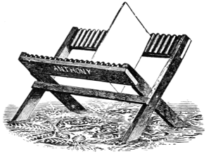
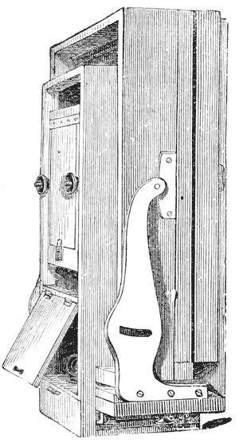

GLASS BOTTOM DRY PLATE DEVELOPING TRAYS.

The Project Gutenberg EBook of Photography in the Studio and in the Field, by
Edward M. Estabrooke
This eBook is for the use of anyone anywhere at no cost and with
almost no restrictions whatsoever. You may copy it, give it away or
re-use it under the terms of the Project Gutenberg License included
with this eBook or online at www.gutenberg.org/license
Title: Photography in the Studio and in the Field
A Practical Manual Designed as a Companion Alike to the
Professional and the Amateur Photographer
Author: Edward M. Estabrooke
Release Date: June 18, 2013 [EBook #42982]
Language: English
Character set encoding: UTF-8
*** START OF THIS PROJECT GUTENBERG EBOOK PHOTOGRAPHY IN THE STUDIO ***
Produced by Albert László, RichardW, P. G. Máté and the
Online Distributed Proofreading Team at http://www.pgdp.net
(This file was produced from images generously made
available by The Internet Archive)
Original spelling and formatting has been mostly retained. Further details are provided in the TRANSCRIBER'S ENDNOTE.
—Anthony's Photo. Series, No. 20.—
PHOTOGRAPHY
—IN—
THE STUDIO AND IN THE FIELD,
—BY—
E. M. ESTABROOKE,
Author of
"THE FERROTYPE AND HOW TO MAKE IT."
A PRACTICAL MANUAL DESIGNED AS A COMPANION ALIKE
TO THE PROFESSIONAL AND THE AMATEUR
PHOTOGRAPHER.
NEW YORK:
E. & H. T. ANTHONY & CO.,
591 BROADWAY.
1887.
Entered according to Act of Congress, in the year 1886, by
E. & H. T. ANTHONY & CO.,
In the Office of the Librarian of Congress, Washington, D. C.
| PAGE | |
| INTRODUCTION, | 7 |
PART I.
The most important improvement in photographic processes that has been introduced since Maynard first made collodion, and Archer discovered its adaptability to the production of photographic negatives, is the gelatine bromide dry plate.
Wet plate photography had reached its utmost point of adaptability to the demands of the times.
A few men of marked ability, and the skill of long study and practice, had reached the point of highest excellence in working with collodion, and the great multitude were pressing on toward that designated height to which it was given to but few to attain.
It had been demonstrated that wonderfully beautiful effects could be produced by the collodion process, but that there was a limit beyond which progress could not be made. The great range of subjects in still and animate life requiring very rapid exposures, were practically out of the power of collodion, to compass satisfactory results. At this time, when there seemed to be a very constant and increasingly urgent demand for more rapid acting lenses and for "lightning processes," there appeared the wonderful argentic bromide Gelatine Emulsion, which, in four short years, has superseded the collodion process almost, if not altogether, and besides (notwithstanding the opposition of the elite of the profession, whom for a time it p8 leveled with the rest of the workers, but who were quick to see and acknowledge the extraordinary merits of the new candidate) it has caused such a quickening of the pulses of the business, and such an increase in its range and adaptability as never before was known, and which, in the year or two past, has caused such an activity in invention and in other ways, as to make that period of time so remarkable for the many new things that have been brought out, and the many new processes that have been adopted, as to render a detailed account of such for the profession, and also for the amateur, most desirable.
It is with such a view that this book is offered to the photographic public, and that numerous and still increasing army of amateurs, who have taken up photography as an amusement, to while away a leisure hour.
For to these latter a few hours' study of a good hand-book is about all that is necessary to enable them to expose and develop a dry plate, a little practice only being requisite to the successful performance of the same.
There may be many, however, who, having made a promising commencement, would like to proceed farther and acquire a knowledge of former photographic processes, as well as those which succeed the making of the negative, such as printing, toning, fixing, etc., and in fact, learn how to make a finished photograph.
To such, particularly, and to all photographers, this book is offered, in full confidence that it will be a useful companion in the studio and in the field.
To accomplish this end we will take the reader as an apprentice, and commencing at the beginning, instruct him in that knowledge he would have to acquire were he an actual apprentice in a photographic studio, p9 working the wet collodion process, after which an equally full course of instruction will follow for the dry plate and other new processes, both for negative making and for printing.
In the following pages, also, will be found many useful formulæ that have been carefully culled from a mass of published contributions, from many of the leading spirits in photography, most of which have been verified practically by the author, and others bear on their faces so plainly the impression of their practicability as to need no assurance that they are reliable.
In getting up this work I have availed myself of information from any and all sources at my command, giving credit where possible, and endeavoring to make everything clearly understandable, and neglecting no details necessary to the successful working of every formula, even by the youngest learner. p10
Mr. Hardwick, than whom there can be no more faithful or competent guide, says that much care should be taken in the selection of glass to be used in the production of photographic negatives.
Window glass is always unsuitable, because of its inferior quality, having scratches upon its surface and air bubbles in its substance, each of which causes irregularities, as well in the negatives as in the subsequent printing; also the squares are seldom flat so that they do not lie true in the holder, and hence a part of the image may be out of focus; and also they are extremely liable to be broken by compression in the printing frames.
Formerly many photographers used a thin plate glass of very fine quality, but of late years the great demand for glass suitable for such purposes has made it possible for the manufacturers to prepare a cheaper quality, well adapted to the uses of photography.
Before proceeding to wash the glass, each square should have its edges roughened, by means of a file or a coarse stone, or the edges of two pieces of glass may be abraded against each other in such a manner as to remove the sharpness, which is so liable to injure the fingers in the various manipulations.
In the process of cleaning the glass it is not sufficient p11 to wash it with water. Other means are necessary to remove grease, rust and dirt, which would not yield to the influence of water alone, and for this purpose a solution of caustic potash is most generally used.
The glass is immersed in the potash solution, each piece separately, and when the dish is full, it should be left not longer than is necessary for the potash to have its proper action, for when left for a considerable time the solution of potash (if strong) will attack the surface of the glass, to its injury.
When a suitable time has elapsed (which in the case of new glass should not be more than one day or night, and in the case of old negatives not longer than to cause the film to slip off), the glass should be removed and washed with water, after which it should be immersed in the same manner, in a solution composed of four parts of water to one of commercial nitric or sulphuric acid, or the two mixed, as may be the most convenient.
This latter solution removes rust or other metallic blemishes, that have not been affected by the potash, and also effectively neutralizes all traces of the potash that have remained on the surfaces of the glass.
The glass may be permitted to remain in the acid an indefinite time, as it can have no injurious effect on it, as might the potash, and when required for use, it should be carefully washed and immediately albumenized and set up in racks to dry.
While the glass is still wet from the washing, after being taken from the acid, it should be coated with a preparation of albumen, prepared as follows: p12
To the albumen or white of a fresh egg, add eight ounces of water; put it in a bowl and thoroughly beat it with an egg beater, or in any manner that may be convenient, until the fibre or structure is completely destroyed, when it should be filtered through loose cotton, and after the addition of a few drops of strong ammonia, it is ready for use.
Many prefer to beat up the albumen before adding the water, in which case it should be beaten into a stiff froth, when the proper amount of water is added, and after the froth has subsided the whole is filtered and the ammonia put in last.
The albumen being prepared and the glass ready, a square is taken in the left hand, and clean water flowed over it, until no particle of dust can be seen adhering to either surface, when a small portion of the albumen is flowed on it, and after covering every part of the surface the excess is allowed to drain off the right hand lower corner, after which, if running water is at hand, the back of the same portion of the plate should be passed under the faucet, and the water will carry off any excess of albumen which might return or crawl, as it is termed, up the back of the plate from the point where it is drained.
The greatest care should be taken to avoid dust settling on the plate during the coating and afterwards while drying, and after the glass has been coated, if it is found that any dust adheres to the albumenized surface, it should be again washed and recoated.
It is important that the back of the glass should be kept free from the albumen, so that when the plate is afterward collodionized and immersed in the silver solution, there should be no albumen uncovered to p13 contaminate the bath, and as most of the glass used has some slight inequalities of surface, the albumen should always be flowed on the concave side, for two reasons:
The first is, that when sensitized and placed in the holder, the pressure, being against the convex side, may have a tendency to counteract the curve and make the plate flatter and more perfectly adjusted to the focus.
The other reason is that the pressure of the printing frame has a less tendency to break the glass when against the concave side.
The amount of glass required having been albumenized and set up in racks, it should be carefully covered with paper to exclude dust, and it should be set away to dry, after which it should be placed in its proper receptacle in the dark room, ready for use.
The reasons for albumenizing the glass are important.
Before this process was adopted, all glass used for photographic purposes, after being subjected to the action of potash or acid, or both, had to be finely polished with rottenstone or some other polishing substance, to render its surface sufficiently free from all traces of acid, organic matter, rust, etc., which would injuriously affect the collodion or the deposit of silver iodide derived from the bath.
This polishing was very laborious, and in consequence it was often very imperfectly done, causing much loss of time and material; also the glass thus prepared did not offer to the collodion a surface to which it could adhere with much tenacity, and in consequence it would frequently slip from it in the subsequent manipulations. p14
The first reason for Albumenizing then, is to cover the surface with a substance chemically pure, and when dry of a crystaline nature and impervious to, or at least not soluble in the silver solution, thus saving the labor of polishing.
Another reason is that the albumen offers a surface to which the collodion will adhere with extreme tenacity, thus saving and preventing the film from slipping.
"The discovery that explosive cotton was soluble in ether, was made by Mr. Maynard, who gave it the name of Collodion, and later, in 1848, published in the American Journal of Medical Science the formula for its preparation."
"This ethereal solution, having a certain proportion of alkaline iodides, and iodides of silver added thereto, constituted the collodion first employed by Mr. Archer," who thus shares with Mr. Maynard, and with a Mr. Legray (who first published an account of its use as a photographic agent) the honor of having given to the world the collodion process in photography.
The progress that has been made since Mr. Archer's time in perfecting the adaptability of collodion to photographic uses could not be better illustrated than by comparing the formulæ for collodion first published with those in use at this time.
The practice of photography in the present day by the collodion process is divided into two branches, the positive and the negative.
In the first the object is to obtain in the camera a p15 direct image, which is to be viewed by reflected light, and as it is desired that the pictures so produced should possess pure blacks and whites, certain modifications of the collodion, silver solution and developer are resorted to, which cause these preparations to differ somewhat from those prepared for the production of superior negatives, consequently the formulæ given hereafter will be designated as positive or negative.
These modifications, however, are not of such a character as to render either of the solutions prepared for one process totally unfit to be used for the other, for in fact, many photographers at this day use the same collodion bath and developer for making both positives and negatives.
In the first place, we will take up for consideration the positive process.
The first positives on glass were called ambrotypes, and were the successors to the daguerreotype, which they superseded and displaced by the superior facility of their production.
For the same reason the ambrotype was succeeded by the ferrotype, which was a positive collodion picture, made on a thin iron plate with a black japanned surface.
The ferrotype or tintype is now about the only product of the positive collodion process of considerable importance, and is the only one that will receive consideration in these pages.
Ferrotype plates are sold by all dealers in photographic materials; they are mostly manufactured by two large concerns in Worcester, Mass. p16
As has before been stated, to produce the finest results in positive photography requires certain modifications of the collodion bath and developer, which, while not unfitting them altogether for negative work, yet would render them quite unsuitable for high class work.
The formula for positive collodion here given has many merits, and among those is a certain quality of film, which might be termed opacity, but not in the strict sense of the word; it is that quality in the film which enables it to cover up any small scratch or water mark on the surface of the plate that would infallibly spoil the picture, if almost any other collodion were used.
This quality, with great clearness or transparency in the shadows, and a beautiful gradation of light and shade, make it unique as a positive collodion.
There may seem to be a contradiction between the terms opacity and great transparency of shadows, which may need further explanation. As the shadows of a positive collodion picture are produced by the black surface of the plate showing through the collodion, any defect on that portion of the surface would be expected to show very plainly, and it does so with the use of the ordinary collodions sold by the dealers, but not so with the collodion under consideration, which may be because it is less permeable by the silver solution, and that consequently the deposit of iodide of silver lies more on the surface and less within the texture of the film, and is thus kept from contact with organic matter or other defects on the surface of the plate; in some such manner only, can I account for a very valuable quality that has saved thousands of p17 plates, that would under other usage have been thrown away.
This formula has never before been published, and must be prepared as directed.
Alcohol and ether equal parts; gun cotton sufficient to make a moderately thick film, say 5 or 6 grains to the oz.; put the cotton in the ether first; when it is well saturated, pour in the alcohol. To which add:
| Iodide of Ammonium | 4 grains to oz. |
| Iodide of Cadmium | 2 |
| Bromide of Cadmium | 1 |
| Bromide of Copper | 1 |
The latter ingredient can only be had in aqueous solution, I believe, and requires close calculation to get at the right quantity.
This formula gives 8 grains of salts to the ounce of collodion, and would require a silver solution of 50 grains to the fluid ounce to balance properly.
The silver solution may be prepared as per directions on page 29, under the heading—The Negative Bath.
The ferro-plate is held between the thumb and first two fingers of the left hand. The collodion bottle is held in the right hand, and the collodion is poured on the right upper end of the plate, flowed to the left upper corner, by deflecting the plate in that direction, and then down the left side toward the hand, and the excess run back into the bottle from the right lower corner, when it has all run off, the plate should be gradually brought to a perpendicular position and rocked from right to left, that is, perpendicular to the end, p18 then to the side, until the film has set or become fixed, which may be ascertained by touching the film at the lower corner of the plate, when, if it breaks and does not run farther, it has set and should, without delay, be immersed in the silver solution, where it should remain until it has become fully sensitized, which will be in from 2 to 5 minutes.
The plate should be lowered into the bath by one continuous motion; any stoppage will cause a line and spoil the plate.
The plate is sensitized when on removing it from the bath it presents a smooth, yellowish surface; if it shows lines as of water running off a greasy surface, it is not coated; return it to the bath.
The plate having become sufficiently coated is taken from the bath, well drained, and placed in the holder or shield, and a piece of glass of the same size put behind it, which is to receive the pressure of the spring on the door of the holder, and force the plate into its proper position evenly, so that all parts will be in focus.
The holder containing the plate is then taken to the studio, or light room, where the subject, we will say, has already been posed; the camera set and focused, the exposure is then made, after which it is returned to the dark room for development.
In the preparation of a developing solution for plate pictures, we must consider that we desire to produce a picture, which, to be admired, must have p19 pure whites, clear shadows, be full of detail and have an easy gradation of light and shade.
That you may succeed in this object, use the following formula, and persist until you have learned its every modification:
| Water | 64 ounces f. |
| Protosulphate of iron | 4 |
| Acetic acid | 4 |
| Alcoholic solution of tannin, 10 grains to the ounce | 4 |
The four ounces of iron should be dissolved in the sixty-four ounces (fluid) of water, and the acetic acid and tannic alcohol added.
In using this solution, develop your plate over a large filter, which will receive all your surplus developing solution, and conduct it into a bottle for use again; drain the plate into this filter before washing, wash carefully and then place it into the fixing solution—the developing solution which has filtered through into the bottle is afterwards used in the proportion of one-half of old to one-half of the new or fresh solution. This greatly improves the high lights of the picture, and by using more or less of the old solution, effects can be produced that are impossible by any other means.
Great care should be taken to cause the developing solution to flow evenly and with one sweep, as it were, over the whole surface, so that the action may be as near as possible equal on all parts of the surface.
In a very few seconds after the action of the developer has commenced the picture will show up. The plate meanwhile should be kept in motion and the p20 solution caused to flow from side to side and from one end to the other, in order that the development may progress evenly and with the same speed on all parts.
The picture will gradually grow and brighten, until all the detail that might be expected is seen in the shadows; then pour off the remaining solution into the filter and proceed to wash the plate until all traces of greasiness disappear; when the plate is sufficiently washed and is ready to be fixed or cleared. Another developing solution is prepared as follows:
Make a 64-ounce saturated solution of protosulphate of iron, into which drop tannin solution enough to cause a precipitate, which remains undissolved after shaking, then add drop by drop pure nitric acid, until the precipitate is taken up and the solution becomes clear. To one ounce of this add water, until it tests 18 to 20 grains to the ounce by the hydrometer, then add one ounce acetic acid, which perfects the formula and constitutes the developer.
The solvent most generally used for fixing or clearing positives is cyanide of potassium.
By the term "fixing" is meant the dissolving from the collodion film all the iodide of silver not acted on by the developer; the remaining portion of the silver is in a metallic state and constitutes the image; the cyanide very readily dissolves the iodide, but acts very slowly on the metallic silver.
This fixing solution should be contained in a glass upright dish, enclosed in a wood case, with a tight or close-fitting cover, this in order that as little exposure to the air as possible may be had, as the fumes p21 arising from the evaporation of the solution are injurious.
Two ounces of cyanide to 64 ounces of water will make a suitable fixing solution for plate pictures; if, however, its action is thought to be too slow, add more.
The plate picture having now been developed and fixed, it only remains that it should be dried, varnished, cut into shape, placed in the proper envelopes and it is ready for delivery.
Those desiring more extended instructions in the making of plate pictures are referred to the work on that subject, entitled, "The Ferrotype and How to Make it," published by E. & H. T. Anthony & Co., of New York.
The Phenix Plate Co., the largest manufacturers of ferrotype plates in this country, and whose name is familiar with every ferrotypist, as well as most photographers, have lately placed on the market ferrotype plates, with surfaces coated or sensitized with gelatine emulsion, which they, offer as a substitute for the ordinary collodion positive or tintype.
The plates are cut to sizes and packed in much the same manner as the Stanley or any other dry plates are, and being extremely sensitive to light, they must be handled with the same care.
The manufacturers claim, that "the 'Argentic Dry Plate' will be found far superior to any other form of positive plate, giving as it does the maximum of beautiful effects with a minimum of labor, producing a rich and brilliant picture with a rapidity and cleanliness never before attained, doing away as they do p22 with the use of the silver bath and all its concomitant evils, pinholes, stains, fog, etc., not forgetting the vast saving in time and temper. The argentic plate is always ready-at-hand, and the working of it is simplicity itself. Their permanency and reliability is beyond question. These plates are extremely rapid. An exposure of from 1 to 3 seconds will suffice with a good light, 2 minutes to develop, 3 to fix, wash, dry and varnish, and the operation is complete, ready within ten minutes for delivery. For out-door views these plates work well with a drop shutter exposure, and the results, both for portrait and view work, are remarkable for fullness of detail, and great delicacy and softness of tone."
While these plates may be developed by the common ammonia pyro developer, the manufacturers claim, that "much finer effects may be produced by using the Phenix Stock Solution," that accompanies the plates, put up in 12 oz. bottles. By its use, greater rapidity of development, purer white, extreme brilliancy and finer detail can be obtained, the result being far superior to that produced by any other developer.
The following formula can be relied on to give excellent results, and by simply modifying the proportions, to "suit circumstances," will answer every purpose. As these plates are very rapid, six times more rapid than wet plates, guard well against white light.
Formula for development:
NO. 1.
| Pyrogallic Acid | 1 oz. |
| Water | 12 oz. |
| Citric Acid | 20 grs. |
NO. 2.
| Phenix Stock Solution. |
| Keep the Stock Solution securely corked. |
NO. 3.
| Bromide Potass. | 1 oz. |
| Water | 12 oz. |
| Water | 4 oz. |
| No. 1 | 4 drams. |
| No. 2 | 4 drams. |
If the plate be over exposed, add a few drops of No. 3. Should the plate, however, be under exposed, add one dram more of No. 2. When the plate is placed in the developer, the image will begin to appear in from 5 to 10 seconds. Continue the development until the details are all out. But be careful not to over-develop, and thereby obscure the shadows. Wash thoroughly after development, and fix in the following solution:
| Cyanide of Potass. | 120 grains. |
| Water | 10 oz. |
"Let the plate remain in the fixing basin until every trace of Bromide of silver disappears. Wash well after fixing, and dry with a gentle heat or flow the plate with alcohol for a few seconds. Set it aside, and it will dry in a few minutes without the aid of heat. For varnishing any good negative or positive varnish will answer. Apply a little heat to prevent chilling."
Directions accompany each box. p24
We now take up that more important branch of the collodion process, vis., that for negatives.
The formulæ and instructions already given for positives might enable one to make a negative, but the negatives so made would bear even a remoter relation to one made by the formula about to be given than would a positive made according to these formulæ bear to a good one made by the appropriate means. Important modifications are necessary to reach the highest excellence in either process.
To produce a good negative a collodion is necessary, the film of which is more permeable than that for positives, so that a heavier deposit of iodide of silver may be carried in the film, to the end that in the development a denser deposit of metallic silver may be secured on all parts of the image, but especially on the high lights, which should be sufficiently dense to prevent the transmission of light almost altogether, or at least to exclude the light sufficiently to allow the shadows and intermediate shades to print to the proper depth, while the high lights of the face and such parts of the clothing as are white shall be only slightly discolored.
There are very many formulæ for such collodions, some of which have proved to be eminently satisfactory, and among the best are classed the following:
Ether and alcohol, equal parts. Climax cotton (Anthony's), 3 grains to the oz. Negative cotton p25 (Anthony's), 1 grain to oz. Place the cotton in the ether first, then add the alcohol and sensitize with
| Iodide of Ammonium | 3 grains to ounce |
| Iodide of Lithium | 1 |
| Bromide of Cadmium | 2 |
Collodion prepared after this formula gives very pleasing results and is rather more rapid than the average.
In many cases it is well to have two samples of collodion differing in formulæ, mixing them in varying proportions, according to the effect desired.
A good formula for mixing with the above is as follows. It can be used separately if desired, but is not primarily intended to be used alone:
Plain collodion, prepared as in the preceding formula, but with a different cotton, Anthony's snowy Cotton, for instance, to each ounce of the plain collodion add:
| Iodide of Potassium | 2½ grains |
| Bromide of Cadmium | 2 |
| Iodide of Cadmium | 2½ |
The iodide of potassium is insoluble in absolute alcohol and ether, therefore it must be first dissolved in the smallest quantity of water possible and then added to the collodion. A portion will even then most probably be precipitated; if it is not, it would be an indication that the alcohol or ether used were either one or both of a higher specific gravity than they should be.
It is more important that the ether should be pure than the alcohol, as the former is often contaminated or adulterated with water as well as with alcohol, and sometimes contains impurities of an acid nature.
Ether, for photographic purposes, should not have a p26 higher specific gravity than 720, and the alcohol should never be used for collodion when below 95 per cent., as the presence of water in the collodion makes the film weak and glutinous.
Most formulæ for collodion prescribe alcohol and ether in equal parts, but these may be varied with advantage during the hot season; for instance, the alcohol may be used in somewhat larger proportion, as the tendency to evaporation is much more with a high temperature, and alcohol evaporates less rapidly than ether. Consequently the flowing quality of the collodion and the evenness of the film would be promoted by a not too rapid congelation or setting of the film. And again, during the cold season, the ether may be used in larger proportion, to promote a more rapid evaporation and setting of the film. By a moderately close observation of the action of collodion under varying temperatures, the operator might soon learn how to modify his formulæ to suit all conditions of heat and cold.
It should be mentioned that it would not be correct to vary the proportions of ether and alcohol very greatly, as an over proportion of alcohol would render the collodion weak and glutinous, and, being very soluble in water, would the sooner injure the silver solution. On the other hand too great a proportion of ether would make the collodion less sensitive.
| Alcohol and ether, equal parts. | |
| Anthony's Negative Cotton | 3 grains to ounce |
| Anthony's Climax Cotton | 1 |
Put the cotton into the ether and let it become saturated, then add the alcohol. Excite with p27
| Iodide of Ammonium | 3½ grains to ounce |
| Iodide of Cadmium | 2 |
| Bromide Cadmium | 2½ |
Collodion sometimes, from long keeping, loses sensitiveness and becomes of a deep red color. When such is the case, it should be set aside and fresh samples prepared, which would be improved in working quality by the addition of small quantities of the old, and thus old stock may be used up without deterioration in the work.
Negative collodion should not be so heavy bodied or thick as that for positives; neither should it be so highly excited. Good positive collodion should have as many as 8 grains of the iodides and bromides to the ounce, requiring a silver solution not lower than 50 grains strong and going somewhat higher in cold weather.
The standard silver solution for negatives is 45 grains of silver nitrate to the ounce of water and the collodion from 5½ to 6½ grains to the ounce, with a tendency to less in cold weather.
Collodion for negatives should be permitted to ripen a day or two before using, unless it is brought to that state by mixing with old.
| Iodide Ammonium | 192 grains |
| Bromide Cadmium | 128 |
| Bromide Potassium | 96 |
| Ether and Alcohol | 32 oz. each |
| Cotton | 320 grains |
The preceding formulæ are for portrait work in studio. For other work, such as outdoor views, p28 landscape or architectural, or for copying engravings, etc., certain modifications of the collodion, to produce greater intensity or more contrast, are desirable. Collodion suitable for such purposes can always be purchased from the photo stock dealer, in quantities desired, and for that reason it is not best for the amateur nor the professional photographer either, to prepare small samples for special purposes. If it should, however, be found at any time necessary to prepare such a collodion, the second formula of Negative Collodion A will be found suitable for views of buildings, copies of engravings and such like work.
It was at first thought to be unnecessary to give a formula for the preparation of pyroxiline or gun cotton, as no individual not in the business can possibly produce an article that can be in any way compared to that made by manufacturers of skill and experience.
For the benefit of any one wishing to experiment, this formula is given:
| Sulphuric Acid | 6 oz. |
| Nitric Acid | 4 |
| Water | 2 |
Mix and the temperature will rise to 170° F.
Inmerse dry cotton wool (best long fibre), be sure wool is dry, draw it in long flakes and pull it under acids with a stout glass rod; do not crowd in too much, take care that each tuft is well wetted with the acids before putting in a fresh tuft. Carefully cover the vessel and put it where any slight fumes may escape; leave it for at least 12 hours—20 hours will not spoil it. When ready, lift cotton out and plunge it p29 into a large quantity of water, quickly separating the tufts with glass rods, wash in changes of water, until no acid is left, then wring the cotton in a coarse towel until dry as possible and pull it all apart and place in the air to dry.
| Alcohol | 5 oz. |
| Ether | 10 |
| Cotton | 100 grains |
TO IODIZE:
| Alcohol | 5 oz. |
| Iodide Ammonium | 60 grs. |
| Iodide Cadmium | 30 |
| Bromide Cadmium | 20 |
Dissolve the iodides in the 5 oz. alcohol or in the whole 10 oz., if desired, then put in the 100 grains cotton, shake well, then add the 10 oz. ether and shake till the cotton is all dissolved; it will be ready for use in a few hours, and will improve with age.
The silver solution for a negative bath is prepared in substantially the same manner as for a positive.
Two thirds of the amount of silver nitrate intended to be used, should be dissolved in the quantity of water required to make the bath, and a grain or two of iodide of potassium added and placed in the sunlight until the solution has changed color, become turbid, and again clear and colorless. This change is caused by a minute portion of the silver combining with the organic matter and with other impurities in the water, if there are any; a molecular change then takes p30 places, oxygen is evolved and the infinitesimal portion of silver changes to a metallic state and sinks to the bottom, carrying with it the impurities, which induced the chemical action or change.
The solution may now be filtered, the remaining portion of the silver nitrate added, and with a few drops of pure nitric acid, the solution will be ready for use. But if on trial it is ascertained that it will not give satisfactory results, it will be found that it has not been sufficiently excited, or an acid reaction has not been induced.
If the first supposition is true, more iodide of potassium must be used, as a silver solution must receive as much or nearly as much of the iodide as it will hold in solution, before it will work harmoniously with the collodion; the grain or two put in the solution with the first portion of nitrate of silver have not been sufficient.
A very little more may be added, which will combine with the silver, forming a white curdy precipitate, which, on shaking the bottle, will in a short time redissolve. If any remains, it should be filtered out, as no more can be held in solution.
An other plan is rather more convenient, but requires more time. It is to coat with collodion as large a plate as the bath will receive; immerse it in the bath, leaving it there some hours, usually all night.
After trying one of these remedies, if the bath refuses still to yield good results, more nitric acid should be added, until the solution will turn blue litmus paper slowly red.
I have never known a silver bath to fail to come to terms under this treatment. p31
The silver solution, when in constant use, rapidly deteriorates, and unless there is a very large quantity, it will soon become unfit for use, and however much or little there may be, it is only a question of time as to when it will cease to act satisfactorily.
This result is caused partly by the gradual contamination of the solution by the alcohol and ether washed from the collodionized plates that have been sensitized in it. When the bath is seriously affected in this manner, it is indicated by the difficulty experienced in getting the developer to flow evenly over the plate, and also by the strong alcoholic odor of the silver solution.
The necessity for a change of the bath may be delayed for a time by the addition of alcohol to the developer, which causes it to flow more evenly.
Another source of evil to the bath is the continual absorption from the surfaces of the plates immersed of minute portions of the salts with which the collodion is excited. After the silver solution has taken up all it can dissolve or assimilate, the surplus is held in suspension and is called free iodide, which deposits itself on the surfaces of the plates, and when in quantity causes the plate when taken from the bath to appear as if fine sand had been sprinkled over it. These small crystals prevent the action of the light on the parts they cover, and when the plate has been developed and fixed, every crystal has produced a small transparent spot or pinhole, as it is termed, and many a lovely negative has been ruined by pinholes.
This trouble may be cured by increasing the quantity of the solution and adding more silver nitrate, which, if in sufficient quantity, will dissolve the free p32 iodide. But if it may not be convenient to do this and no other solution is ready for use, then, after immersing your plate, tip the bath dish back so that the face of the plate may be inclined downwards, when the crystals will be deposited on the back of the plate and do no harm.
The silver bath is also contaminated with organic matter, taken up from the edges and backs of the many plates used, of which some portion of the albumen is likely to be exposed to the action of the solution, and also from dust, etc., falling into the bath dish, which will be taken up and held in solution by the acid in the bath, but when the acid can hold no more in solution, its presence will be indicated by a greyish white vail forming on the surface of the plate when developed; this is called fog, and may only partially obscure the image, or it may completely veil it.
The fogging of the plates in this manner may be prevented for a time by adding more nitric acid to the bath, which will dissolve the organic matter and prevent its deposition on the plate.
When the silver bath has, from long or much use, become seriously affected by any of these evils, it should be set aside and a fresh bath put in use, until an opportunity offers to thoroughly cleanse and renew the old solution, which can be done by one series of manipulations, as thus:
Into a large bottle, which will hold the solution to be treated, and somewhat more, put from a pint to a quart of water, according to the quantity of the solution; into this bottle containing the pint of water, pour in a small stream the whole of the old solution, when it will be found to have turned to a milky whiteness p33 or opalescence, which is the iodide of silver set free by reducing the strength of the solution; this must be filtered out, and the solution neutralized with bi-carbonate of soda, which should be put in, in small quantities until a deposit of carbonate of silver begins to be formed; then place the solution in an evaporating dish, and subject to heat until the bulk is reduced about one-half; test it with litmus paper, and if acid, give it more bi-carbonate of soda; add water and silver nitrate to bring to the required bulk and strength, set in the sunlight for a time or until required for use, then filter, and it will be found to be as good as new, but it may require a few drops of nitric acid.
Pure water may be always had ready for use, by keeping a large bottle full of the common water standing out-door in the sunlight, adding a grain of silver from time to time as the bottle is emptied and replenished.
The new "agate iron ware" pots are the best for use as evaporating dishes. They will not break or crack, and they are not nearly so expensive as porcelain dishes.
There are a thousand and one formulæ for developing solutions for the wet plate, but they are all composed of protosulphate of iron or a compound thereof, acetic acid, and water, with the addition of some organic substance, such as sugar, rock candy, glycerine, etc. etc.
The development of a negative is nothing more than the deposition of metallic silver in a state of fine sub-division upon a base of the same metal, which is the image latent in the collodion film after exposure in the camera. And it is supposed that the finer the deposit p34 secured in the development the better will be the chemical effect and printing quality of the resulting negative. Therefore, the use of organic bodies in the developer is supposed to effect or induce a finer deposit. The careful observer, however, will soon discover that the success of the development depends more on the time of exposure, the temperature of the developing solution and the condition of the bath, than upon any adventitious aids, such as rock candy, etc.
A developing solution, composed alone of an aqueous solution of protosulphate of iron and acetic acid, can be made to produce the finest effects possible to the process.
Half fill with protosulphate of iron a wide mouth 64 oz. bottle, fill up full with water, set aside to dissolve, shaking the bottle once in awhile, so that the water may become saturated. Put a small glass funnel on a stand, so that you can place under it a 16 oz. bottle; fill the 16 oz. bottle with water and enough of the strong iron solution to make a twenty grain to the ounce solution, add one ounce of acetic acid, pour all into the filter and place the bottle beneath the funnel to receive it. This filtered solution is the developer for negatives.
Some experience is necessary to enable one to develope a negative properly and secure the best results.
Holding the plate in the left hand, take the developer bottle in the right, hold it over the plate near the left hand, let the first finger of the right hand rest against the edge of the plate, tilt the bottle so that the developer will run on the plate; at the same time move p35 the right hand toward the other end of the plate rather quickly, letting the developer run in a steady, but not copious stream; deflect the plate with the left hand at the same time, so that the solution will flow from you in such a manner that the whole surface of the plate may be covered with the liquid at nearly the same time as possible. Now set down the bottle and keep the plate in motion, so as to cause the solution to have an equal action on every part of the surface. Very soon the image will appear and brighten, until every part of the detail comes out, and when it begins to look as if fading away or becoming less distinct the development is finished.
This can be ascertained with more certainty at this time by holding the plate so as to be able to look through it toward the light, so as to examine its density, remembering that the high lights should be quite dense and the medium shadows be full of detail. One very soon learns to know the proper density.
The plate should be now very thoroughly washed, to free the surface from the iron before fixing.
Great care should be taken in this manipulation to cover the plate quickly with the solution, holding it all on the plate. As the development is made by the precipitation of the free silver on the surface of the film upon the latent image, none of the free silver should be washed from the plate by a flood of developing solution carrying it off the surface.
Hyposulphite of soda is generally considered to be the most suitable fixing agent for negatives, although some prefer cyanide of potassium. p36
The hyposulphite, however, is the safest, both for the plate and for the operator. One pound of hyposulphite of soda to a gallon of water will make a solution of a suitable strength to clear a negative as rapidly as is necessary, and it should be contained in a flat dish. When from much use the fixing solution becomes muddy, it should be thrown into a suitable receptacle for liquid wastes, as it is rich in silver.
Leave the negative in the fixing solution until all the iodide of silver is dissolved from the film, and no trace of the yellowish deposit can be seen by transmitted light.
When the negative is thoroughly cleared, if it is found that it lacks density or, in other words, is not intense enough, wash it very carefully to free it from every trace of the soda solution, and then proceed to strengthen it in the following manner:
Keep near at hand in a 64 oz. bottle this solution:
| Protosulphate of iron | 2 oz. |
| Citric acid | 1 |
| Water | 64 |
and in a small bottle a ten-grain-to-the-ounce solution of silver nitrate.
When a negative is to be strengthened, from the large bottle take enough of the solution to cover the surface; to this add a half dram of the silver and flow it over the negative.
A change of color will at once take place in the film, which will become darker as the silver deposit becomes heavier; if one application is not enough to secure the required density, wash the plate and proceed again, as before. p37
Negatives may be strengthened before fixing, if it is found necessary, by flowing the surface with the weak silver solution and afterwards using the ordinary developer.
When one has become accustomed to the work, and can tell that the negative is not dense enough before fixing, it is the best plan to re-develop before fixing.
The mercurial intensifying solution for dry plates is very nice for wet plates.
Having described the positive and negative collodion process, there remains to give an account of the latest and greatest achievement in photographic progress.
The history of dry plate photography comes within the last ten or fifteen years, and being so recent and so fully written up in current photographic literature, space in this work will not be taken for a full account of the rise and progress abroad and at home of this wonderful improvement in photography, but instead will be given some formulæ for the preparation of Gelatino Argentic Emulsion, and the most approved methods of working it.
The shortening of the time of exposure for sittings in the studio from one-tenth to one-twentieth of the time required for the old wet plate process, at its best, has rendered the dry plate such a power in the hands of the photographer as to have caused it to be almost universally adopted in the studios of this country, and has practically displaced the wet process in the field and for all out-door photography. p38
Since the introduction of the new process into the United States, the preparation of rapid dry plates has been and remains now in the hands of certain prominent firms, who, from the skill they have acquired and the advantages they derive from all the machinery and conveniences that large capital enables them to procure, are enabled to supply fully the demand with a much better article than could be had were each consumer to manufacture for himself. In fact, if the photographer were compelled to manufacture his own dry plates there would be a very different condition of affairs at the present time.
Gelatine is a substance so susceptible to change from the action of our climate, with its varying temperature, that of a large number who have attempted to make dry plates for the trade, many have completely failed, some of them after a partial success; and others after spending thousands of dollars never could make two batches of emulsion alike; and then again the keen competition of the successful concerns has reduced the profits to not more than fair returns to a precarious business.
There are many, no doubt, who would be glad to experiment in this field, especially among amateurs, and it is for the benefit of such that certain hints and formulæ are given in this connection to enable them to make, if successful, their own plates.
The formulæ herewith given are selected from a large number published in the German, English and American journals, and while good dry plates may be made by either of them, yet it is doubtful if the highest success would repay the outlay. p39
A careful study of the published formulæ and the current literature on the subject of Gelatino-Bromide Emulsion will disclose the general principles on which they are based.
A certain amount of bromide of ammonium or potassium (preferably ammonium, on account of its greater uniformity and purity) and nitrate of silver are dissolved separately, and mixed together in a thin solution of gelatine, at a moderately warm temperature. Great sensitiveness is obtained by a long exposure to the same warm temperature, or by the addition of a small amount of ammonia, and raising the heat to the boiling-point for from a half to a full hour; when it is cooled more gelatine is added and the whole allowed to congeal or set, when it is reduced to shreds, and washed in cold water to remove the excess of the preponderate salt.
The sensitiveness of the emulsion is said to depend upon the fineness of sub-division of the grain of the bromide of silver in the presence of the gelatine. This extreme fineness is secured by long emulsification, or by the use of ammonia and a boiling heat.
The strength and tenacity of the emulsion depend on the quality of the gelatine, and its freedom from deterioration during the process of emulsification and the subsequent washing. A soft gelatine is suitable for the process of emulsification; afterwards a hard quality is used to give body and resistance.
The presence of free bromide or of free nitrate of silver in the finished emulsion would be fatal to its usefulness; therefore, as both of those salts are easily soluble in water, they must be got rid of by washing; consequently, before washing, the mass of jelly should p40 be induced by the use of a refrigerator to set firm and hard, so that it may be broken up into shreds for washing, and the smaller the shreds the less washing they will require.
Of the following formulæ the first two are copied from English photographic year books, and are believed to be reliable; the others are by Dr. Eder, the greatest German authority on gelatine emulsion, and they are comparatively simple.
PAGET PRIZE.
NO. 1.
| Hydrochloric acid | 1 drachm |
| Distilled water | 12½ oz. |
NO. 2.
| Distilled water | 3 oz. |
| Bromide Ammonium | 210 grains |
| Gelatine | 50 |
Twenty minims of No. 1 solution are introduced into the whole of No. 2, and the Gelatine is left to swell.
In another glass vessel 330 grains of nitrate of silver are dissolved in 3 ounces of distilled water; a small quantity, about two fluid drachms, of the latter is poured into a test tube and diluted with an equal bulk of distilled water.
The solution of the bromo-gelatine is then rendered complete by immersing the bottle in hot water, and the dilute silver nitrate is added all at once.
The bottle is then shaken and the remainder of the strong silver solution added in quantities of half an ounce at a time, shaking the bottle as before after each addition. p41
The emulsion is then boiled for fifty-five (55) minutes, and when cooled down to 90 degrees F., one ounce of gelatine, which has been previously swelled and dissolved in water so as to measure four ounces, is added and put away in a cold place to set.
When set, squeeze through coarse canvas into cold water one half gallon and ¼ lb. salt; let it remain for five minutes, then wash thoroughly.
The addition of two ounces of alcohol and enough water to make up to twenty ounces completes the process.
In the preparation of this or any gelatine emulsion the work may be carried on in daylight as far as the mixing of the bromide and silver, which must be done in a dark room by the aid of a lamp or gas light shaded by orange or ruby glass. Sufficient of this non-actinic light may be admitted to enable the work of washing the emulsion, and afterwards the coating of the plates, to be carried on with ease and comfort, as the emulsion when wet is only half as sensitive as when dry.
JARMAN.
| Picked white Gum Arabic | 75 grains |
| Bromide Ammonium | 200 |
| Gelatine | 150 |
| Water | 10 oz. |
| Nitrate of silver | 300 grains |
| Water | 7½ oz. |
Dissolve in two jars in a vessel of water heated to 140 degrees F., stir each solution well with a separate rod or strip of glass, and when equally heated to 140 p42 degrees the silver may be poured in a gentle stream into the gelatine gum solution by the aid of a safe light.
When all has been mixed and thoroughly stirred, cover the top of the dish and allow the temperature to be at 140 degrees for eight hours, occasionally stirring the emulsion during that time, which should be done in the dark.
At the end of that time there should be weighed out, of Nelson's soft gelatine 250 grains, and of French hard gelatine 150 grains.
This 400 grains of gelatine must now be added to the emulsion, and occasionally stirred until all of it is thoroughly dissolved and incorporated with the emulsion, which will take about a quarter of an hour; it is then poured out in a clean 12×10 deep porcelain dish to set, and should be allowed to set for forty-eight hours, when it may be wrung through a piece of coarse canvas and allowed to fall into a solution of
| Common salt | ½ lb. |
| Water | 1 gallon |
Let it remain in this for five minutes, then strain through a horse hair sieve and wash it well for an hour and a half. Allow the shreddy emulsion to drain well in the sieve for about a quarter of an hour; at the end of that time place it in a clean stone-ware jar to melt, with the addition of four drachms of saturated solution of nitrate of potash upon melting, which may be done by setting the jar into a dish of water at a temperature of about 120 degrees F.
It will be found on measurement to be nearly 25 ounces of emulsion; as soon as it is ready for filtering four ounces of methylated spirit may be mixed with it, p43 to which have been added four drachms of an alcoholic solution of tannic acid, made by mixing ten grains of tannic acid with one ounce of alcohol; this is to prevent frilling.
The rapidity of the plates will be about eight times that of a wet collodion plate, which for all ordinary purposes will be as rapid as could be desired.
Dr. Eder, the distinguished German scientist (who is a great authority on gelatine emulsions, and has published a book on this subject), gives the two following formulæ:
EDER.
| Bromide potassium | 4 | grams, equal to | 61 grains. |
| Gelatine | 7½ to 8 | grams, equal to | 115 grains. |
| Water | 50 | c. c., equal to | 1 ounce. |
| Nitrate of silver | 5 | grams, equal to | 77 grains. |
| Water | 50 | c. c., equal to | 1 ounce. |
Dissolve the silver in water and precipitate it with ammonia. Continue the addition a few drops at a time, until the brown oxide of silver re-dissolves and the liquid looks as bright as pure water; the strength of the ammonia is immaterial.
The nitrate of silver may be warmed to 93 degrees F., and poured into the bromized gelatine a little at a time, continually stirring with a glass rod. Rinse the silver bottle with 10 c. c. about 1½ drachms of water and add it to the emulsion, place the bottle containing the emulsion in a basin or saucepan of water heated to 90 degrees F., leave it therein from 15 to 30 minutes without further heat; after 30 minutes the emulsion is ready to be congealed previous to washing.
This emulsion never fogs, but it is imperative that p44 in no part of the progress the temperature should exceed 100 degrees F., and it is a safe rule not to go beyond 90 degrees F. It is recommended to use French gelatine.
EDER.
| Bromide of potassium | 61 grains. |
| Gelatine | 115 |
| Water | 1 oz. (plus) |
The bromide of potassium must be pure and not alkaline, ditto the gelatine.
The bromized gelatine must be melted at 140 to 160 degrees, and then add 77 grains of silver nitrate in one ounce (plus) of water. The silver may be warmed to the same temperature as the gelatine, but this is immaterial. Rinse the silver bottle with three drachms of water and add it to the emulsion. The bottle with the emulsion is now put in a saucepan partly filled with hot water, covered to exclude all light, and the water in the saucepan set boiling, which should be continued for 25 to 30 minutes, then both water and emulsion cooled down to 90 degrees F., then add 340 minims of ammonia, stirring it thoroughly through the emulsion, which should be left for from 30 to 40 minutes at a heat of 90 degrees F., then it is ready to set and wash.
Dr. Eder says this last is quicker and better for portraits.
Any form of room that has running water in it, if there is a window, the better, unless the work is done p45 at night. If in the daytime, shade the window with heavy red orange paper; if gas is used, shade the flame with a ruby globe or chimney, and cut a piece of tin to fit in the pipe below the burner to cut off rays of light falling through bottom opening of globe or chimney.
If there is no gas purchase a dry plate lantern.
Emulsion in the jelly and when wet on the plates is only half as sensitive as when dry, so that it is not necessary to distress one's self working in the dark.
When the silver and bromide are brought together and mixed, it should be done in this dark room. The solutions are poured into a glazed earthenware bottle, which can be tightly corked. When it is required that the emulsion should be heated, put the bottle into a tin pail, fill the pail with hot water and put on the cover and heat in any convenient manner; when it is necessary to examine the emulsion, remove the pail and contents to the dark room.
A thermometer for testing heat in liquids should be used to regulate the temperature.
A deep porcelain tray is the best dish for holding the emulsion, while it sets previous to washing. To prevent the emulsion from adhering to the tray it may be waxed carefully, but leave no surplus; when the emulsion has set as firmly as it will, it may be cut up into very small squares for washing, but probably the best way is to squeeze it through the meshes of very coarse canvas, such as ladies use for embroidering on with wool. The shreds may be permitted to fall into a fine horsehair sieve placed in a pan of very cold water and allowed to soak for a time, when the sieve may be raised, and the water will in a short time drain away p46 from the shreds. This may be repeated until the water, when tested with silver solution, gives no precipitate of bromide.
After the emulsion is washed it must be melted and filtered before it can be used to coat plates. These manipulations must be performed in the dark room. For melting the emulsion use a small oil stove placed in a tin box, the open side placed to the wall; set the dish containing the emulsion on the tin box over the heat; or, a more perfect arrangement is to take a tin or sheet iron bake-pan, make a hole through the bottom near one end, and into the hole fix and solder a tin funnel, into which you can put a glass funnel that will hold a pint or more; set this pan on the tin box containing the oil or gas stove, the end of the pan containing the funnel projecting over the tin box towards you; fill the pan with hot water, which the heat of the stove beneath will keep hot; into it set the dish containing the emulsion to be heated or melted; when that has taken place pour into the funnel to filter, through loose absorbent cotton or a thin piece of chamois skin or flannel, as you prefer; the funnel will be kept warm by the hot water in the pan surrounding it.
Filter into a pitcher with a lip suitable for pouring from, or a small earthenware teapot would be better. You would be using the emulsion from the bottom, and thus avoid air bubbles; when all is filtered set the pitcher or pot into the hot water to keep of an even temperature.
Soak the glass in strong lye or potash for a time, then wash carefully and put into acid, then wash p47 again and albumenize with the white of one egg to six ounces of water without ammonia. The plates should be slightly warm when being coated.
Hold the plate in the left hand, as you would for coating with collodion, flow with emulsion as you would with collodion, letting the surplus flow off the right hand lower corner, but do not let more than the gross surplus run off; retain enough to make a rather thick film; now move the plate so as to facilitate an even distribution of the film, then set the plate on the leveled cooling table.
This table should be a large slab of marble or slate with a perfectly plain and level surface; before using it should be cooled by placing ice or a refrigerating solution on it. The coated plates are laid on this level table, where the cold soon chills the emulsion, causing it to set, when they may be set up in racks and placed in the drying room or box, where in the course of a few hours, if the conditions are favorable, they will dry and are then ready for use.
The drying room, or box, as the case may be, must be kept cool, and if any current of air is induced it should be cool and constant, so that the drying may proceed with perfect regularity until the process is complete. Should the drying by any means be checked a line will be formed on the plate, showing where the drying stopped for the time.
Plates may be dried by a current of warm air, but p48 they are much more likely to frill during development; and a very little heat will melt the coating.
If the plates are dried by an induced current of air, the process may be hastened by placing dishes, filled with chloride of calcium, in the air passage to the drying box or room. The chloride will absorb all the moisture from the air passing over it, and the dry air will take up the moisture from the plates.
When the chloride of calcium becomes too damp for further use, place the dishes containing it in an oven and drive off the moisture by heat, when the dry calcium may be again used. By employing such means the plates may be dried in a few hours.
After the plates have become dry, they should be packed in good light-tight boxes and kept in a dry room until wanted for use.
Dry plates, ranging in rapidity from one-tenth to one-twentieth the time necessary for a wet collodion plate, are now commonly used in the studios of this country. Of course, plates of such extreme sensitiveness require great care in handling, and absolute freedom from any umpremeditated exposure to white light is necessary to their successful use.
It is therefore necessary that the dark room should be remodelled to suit the requirements necessary to the successful handling of such extremely rapid plates, and in this connection it is proposed to describe the necessary changes and alterations.
Any ordinary dark room may with little expense be fitted for dry plate work. First see that every chink or crevice which might admit white light is stopped or p49 filled up, then fit the door or doors so that they will shut tight and remain closed.
For convenience of access to the room while work is proceeding, and for greater safety, it is well to erect a small porch or ante-room at each door, the entrance to which should be at right angles with the dark room door. The door to this porch and the dark room door should be fitted with springs to keep them closed. With this arrangement one can have access to the dark room at any time by closing one door before opening the other.
If the dark room is lighted by a window, it should be glazed with dark red orange glass, and if the exposure is toward the sun, it should be shaded with a green or ruby colored shade on a spring roller. If the sun never shines in the window, the shade is not necessary.
If the room is lighted by artificial light, the best way is to cut an opening in the wall or partition at the most convenient place, make a frame to fit or cover this opening, that will raise or slide, glaze it with red orange glass. On a shelf outside the opening place your gas-burner or lamp, with a large reflector behind, so as to reflect all the light through the glass into the room. If gas is used on the outside an argand burner will be the best, with a common white glass chimney for ordinary work, but for the most sensitive plates a light green or thin ruby chimney will be absolutely safe.
If a kerosene lamp is used, the common white chimney with full flame will be safe; and being outside, the room will not be heated by its flame, nor rendered offensive by its smoke and odor.
In front of the window or of the artificial light, p50 erect a shelf or place a small table with a level top, which will support the developing dishes and bottles of developing solution, and on which the work of development may be carried on.
If the room is so situated that neither window nor gas may be used in the manner suggested, then procure Carbutt's Developing Lantern, which is a most convenient lantern, not only for developing, but for other purposes. See figure.
The dark room should be supplied with running water, and the more generous the supply, the better, as a dry plate requires much washing, and a large stream will do the work much quicker than a small one.
In many instances, however, where running water may not be had, the washing box may be used with advantage. If running water is used, be careful not to use too much pressure; by attaching a rubber hose to the faucet and passing it over a nail or hook above, the pressure may be reduced so that a full but gentle stream falls upon the plate.
Safe closets should be provided to contain all sizes of plates; or the new p51 made by Anthony & Co., may be used instead, both for unexposed and for exposed plates awaiting development.
The dark room should be supplied with the necessary apparatus, such as developing trays, which are of japanned tin, of glass or india rubber; see cuts,
or the patented article, the
and also the dishes to contain the fixing solutions, which may be trays or upright, like silver-bath dishes.
is a capital dish to contain the hypo and clearing solutions and is not expensive, and can be had of all sizes. All these dishes should be kept scrupulously clean when not in use.
There should be Graduates of the 16 oz. and the 8 oz. sizes, and also a minim glass measuring up to p53 one fluid ounce, also one or more of Anthony's Combined Funnel and Filter, for filtering the various solutions.
There should be glass-stoppered bottles for containing the developing solutions, especially the pyro; also racks to hold the plates while drying;  FOLDING NEGATIVE RACK. one finely adjusted scale with apothecary weights weighing to a ¼ lb.; one camel's hair-brush, 3 inches wide, for dusting the plates before p54 putting them in the holders for exposure, and also for removing sediment from the surface of the film after fixing and washing.
Thus fitted and furnished, the dark room is ready and well adapted for the most difficult dry plate work, and we will now proceed to the consideration of the
Every manufacturer of dry plates encloses in each box of plates packed for the market a formula for the development of the same.
The various manufacturers of dry plates, whose names will be found in the advertising pages in this book, each have a formula which in some respects differs from all the others, and it is but fair to the maker of the plate, that his formula should be used, unless the operator is of much experience and understands the requirements of each particular kind of plate.
Therefore, while formulæ are given in this connection, although they are known to be of the best, yet in the hands of inexperience they may result to no better advantage than the formula appropriate to the plate used; consequently, we do not urge their use above any other, but rather that to which the operator is most accustomed.
The alkaline pyro developer is now in general use among professional photographers in this country, and there remains no doubt that it is the best developing agent for dry plates that has yet been brought into use.
This developer is composed of pyrogallic acid and p55 an alkali, either ammonia, sal soda, or carbonate of potash, which, in solution and of proper strength, forms the medium through which the pyro is applied.
To these is added bromide of potassium or ammonium, which is the restrainer, and occupies about the same position or performs the same function as acetic acid in the wet plate developer, and besides being a restrainer it greatly aids in securing intensity and printing quality; and when plates are overtimed in exposure its prompt use may result in securing a good negative.
Some plates require double the quantity of pyro that others do to produce the same quality of negative. After ascertaining the normal amount of pyro necessary to develop plates of a certain make, if it is desired to increase intensity add more pyro, if your plate is developing too intense or hard add more of the alkali.
No. 1.
| Carbonate of Soda (Sal) | 1 lb. |
| Carbonate of Potash | 1 lb. |
| Yellow Prussiate of Potash | 1 oz. |
| Bromide of Ammonium | 1 oz. |
| Water | 64 oz. |
No. 2.
| Pyrogallic Acid | 1 oz. |
| Saturated Solution Sulphite Soda | 15 oz. |
Keep No. 2 in glass-stoppered bottle.
To develop one 8×10 plate, take of
| No. 1 | 1 dr. |
| No. 2 | ½ dr. |
| Water | 6 oz. |
Put the exposed plate into the developing tray and p56 pour the solution upon it, making sure that all parts of the plate are covered, and no air bubbles fixed to the surface; keep the dish in motion and in a short time the image will begin to appear; if properly timed the high lights will show up promptly, and in due time all parts will appear, and when detail is seen in the shadows take the plate from the dish and examine it by transmitted light. Note the gradations of light and shade; if they appear properly balanced, the plate has been properly timed in exposure. Return the plate to the dish and let the development proceed until the image sinks well into the film and you see nothing very clearly as it lies but the blacks.
Time is necessary in this process to secure enough intensity, and this stage is the most difficult in the process, there being no means by which to judge with any degree of certainty the density of the image before you. It is better then to proceed too far than not far enough, as a slow printing negative is far better than one that is too thin and weak.[1]
When the image has sunk pretty well into the film examine it again by looking through it, and note well its appearance, so that if it is about right when fixed you may remember how it appeared if you wish to increase or diminish the intensity of your next plate.
If the plate has been overtimed it will show up quickly, almost at once; when such is the case quickly pour off the developer and flow the plate with water, washing it well, then prepare more developer with nearly double the amount of pyro and a few drops of a p57 strong solution of bromide of ammonium, which add to the 6 oz. of water and pour on the plate; then take half the usual quantity of the No. 1 solution in a graduate and pour it, a few drops at a time, into the developing tray, watching the action closely and keeping the solution in motion.
The negative at this time probably shows all the detail of the subject, but without any gradation of intensity. If the changes just described have been made promptly you will soon observe that the high lights will begin to gain in strength. Keep up the action by adding more of the alkali, drop by drop, until you can proceed no farther.
The chances are that you will secure a printable negative, but not a very good one; and if it is a portrait the best thing to do is to throw it away and make a new one.
The plate should now be very carefully washed previous to fixing.
Should the film show signs of loosening from the edges of the glass and swell so as to form folds or frills, take it from the water and immerse it in a solution of alum, which will harden the film and stop the frilling. Then wash the film again and put it in the
| Hyposulphite of Soda | 1 lb. |
| Alum | ¼ lb. |
| Water | 1 gal. |
When the soda and alum are dissolved let it stand until all sediment settles to the bottom, then pour off the clear solution and use it to fix until from much use it becomes black and turbid, then make up and use a fresh solution. p58
The plate should be left in the fixing solution for fully five minutes after it appears thoroughly cleared, then take it out and wash until all traces of hypo are removed.
If the plate has not previously been in the alum solution it may now be put in the
| Alum | ½ lb. |
| Citric Acid | 2 oz. |
| Water | ½ gal. |
Keep this solution in a flat dish, and after the plate has been washed from the hypo put it in this solution for two or three minutes; if there are any remaining traces of hypo in the film it will be decomposed, the film will be hardened and freed from color; when this is accomplished wash again and set the plate up to dry.
While the alkaline pyro developer is the best and gives the finest printing quality to negatives, there are many who prefer (for other reasons) the
No. 1.
| Neutral oxalate of potash | 1 lb. |
| Water | 5 pints. |
Acidify with oxalic acid and filter.
No. 2.
| Protosulphate of iron | 1 lb. |
| Water | 2 quarts. |
Filter and add 60 drops sulphuric acid.
No. 3.
| Bromide of Ammonium | 1 oz. |
| Water | 10 oz. |
The developer is prepared by mixing together in a p59 graduate the quantity necessary to cover the plate in the following proportions:
| Oxalate solution | 3 parts. |
| Iron solution | 1 part. |
| Bromide solution | 1⁄8 part. |
For instance, it will take about 8 ounces to cover an 8x10 plate in a flat dish; to make this quantity take of the
| Oxalate | 6 oz. |
| Iron | 2 oz. |
| Bromide | 2 drs. |
Always pour the iron into the oxalate solution, then add the bromide, and having placed the exposed plate in the dish pour the developer upon it, covering the surface of the plate as quickly as possible and removing any air bells that may stick to the surface.
Keep the solution in motion on the surface of the plate and in a short time the image will begin to appear, the high lights first, then the intermediate shades, last of all detail will be seen in the shadows. Now pour the developer off, take the plate out of the tray and look at the back of it. If the subject or image can be distinctly seen it may be considered finished and only needs to be washed and fixed.
If the plate has been over-exposed, which will be indicated by the image appearing quickly, wash off the developer with water, add more bromide to the solution and immerse the plate again.
If, on the contrary, the plate has not had enough time, it will be indicated by developing very slowly and with a very thin and weak image; when such is the case add more of the iron solution, however, not more than to make the proportion of the iron nearly p60 one-fourth of the whole solution. More than this proportion will cause a yellow precipitate, which will settle on the surface of the film and destroy it. If by this course you succeed in securing sufficient detail in the shadows, the negative may afterwards be strengthened.
It is as well, however, when a plate is found to be undertimed (and it is possible to make another from the same subject) to throw it away; it will scarcely repay further attention.
It will be seen that a considerable margin in time of exposure can be allowed and provided for. Yet none the less it is of the utmost importance to learn to give the correct and proper exposure to secure the finest results.
This, it is true, is not always possible, and as an under-exposed plate is lost, any error in exposure would better be in too much rather than in too little time.
It is said by some that by the use of citrate of soda almost any degree of over-exposure may be remedied, but there remains the fact that for a restraining agent to be of any value its application to a negative in development must be almost instantaneous upon the earliest discovery of the over-exposure.
When a large number of plates have been exposed and the first developed indicates that all have been overtimed, then a 50 per cent. solution of citrate of soda, used with judgment, might result in saving the lot.
When over-timing makes itself visible unexpectedly and it is feared that the development will have proceeded too far before the retarder can act, a good plan is to take the plate out of the dish and flow over it a solution of citric acid, containing a little chrome alum, p61 which will immediately stop the action of the developer and give time to make other arrangements.
No. 1.
| Pyrogallic acid | 1 oz. |
| Alcohol | 4 oz. |
No. 2.
| Water | 60 oz. |
| Bromide of ammonium | 60 grs. |
| Strong liquor ammonia | 2 drs. |
To use, take of
| No. 1 or pyro solution | 1 dr. |
| No. 2 or ammonia solution | 10 oz. |
This will be enough to develop three or four 8×10 plates, if they are properly timed.
The above is one of the best forms of ammonia pyro developer; it gives negatives of very fine quality.
Many dry plates, on development with ammonia and pyro, show a green fog by reflected light, and a pink or red fog by transmitted light; this fog does not materially injure the printing quality of the plate, but spoils its appearance to the eye, and for that reason many establishments have given up the use of ammonia and in its place use soda or potash.
From the difficulty of judging when the development has reached the right point, in consequence of the opacity of the gelatine film, many negatives are finished before they have acquired sufficient density in development. As a result of this, much attention has been given to the discovery and preparation of redeveloping or intensifying solutions, many formulæ p62 for which have been published; among the best are the following:
| Bichloride of Mercury | 120 grains. |
| Dissolved in hot water | 16 oz. |
Add to this a strong solution of Iodide of Potassium drop by drop, until the red precipitate begins to redissolve, then add a few grains of hyposulphite of Soda, or enough to clear the liquid.
When required for use pour part of this solution into a tray of a suitable size for the plate, add an equal amount of water, then immerse the plate and keep the solution in motion. You will immediately notice a change in the color of the film; take the plate out, and if it has gained enough strength, wash it and set it up to dry; if not, give it more.
It is proper to state that this process is more effective if the plate has been dried after development.
When the plate has been thoroughly fixed and fully washed, it will intensify by this method, without change of color by transmitted light, and it will have secured a lovely printing quality rarely seen even in the most perfect negatives.
This solution may be used until it is exhausted.
| Water | 10 oz. |
| Sulphate of Copper | 100 grains. |
| Bromide of Potassium | 100 |
When dissolved, this solution is ready for application and can be used repeatedly.
The negative, after fixing and washing, is immersed in the solution until it turns white. p63
Now remove it and wash slightly, then immerse it in old ferrous oxalate developer and allow it to remain until it becomes black entirely through the film. This method gives fine results and good printing color.
Form the habit of noticing carefully the intensity of the illumination of the subject on the ground glass of the camera, so as to judge correctly the time of exposure, as much of the successful working of dry plates depends on the exposure; for although slightly under-exposed or much over-exposed plates may by suitable modification of the developer be saved and print good pictures, yet they will lack the glow and balance that are characteristic of the most perfect work.
Use a flat camel's-hair brush to remove any dust from the plate, before putting it in the shield for exposure.
Always keep your developing solution in motion on the plate.
Fix your negative very thoroughly; leave it in the hypo 5 or 6 minutes longer than it is apparently necessary.
Never use hypo after it becomes discolored or turbid and deposits a sediment.
Develop longer than you think necessary; a slow printing negative is preferable to a weak one.
Keep your dark room and its contents very clean and free from dust, and well ventilated.
No photographic establishment in these days is considered to be well equipped that does not employ a skillful retoucher and provide all the apparatus and p64 conveniences for the proper performance of this very important branch of the art.
It is within the memory of many photographers when this work of retouching was done on the positive, and some establishments were compelled to employ a large force of skilled hands to work up and finish the crude productions of the camera and the printing frame.
After the introduction of the carte de visite portrait, and later the Imperial card, and the consequent reduction in price, the expense of this work became such a burthen to photographers that they were compelled to perfect their mechanical operations to the utmost extent, and by every means to endeavor to avoid it.
It occurred then to some one of the retouching artists to do this work upon the negative once for all, and from this beginning the art of retouching the negative has reached its present high position.
Retouching, like stippling or hatching in miniature, is a work of art, skill in which is gained only by assiduous practice controlled by good taste, and it is the special work of the artist and not of the photographer.

While then it is not considered wise for the photographer to be his own retoucher any more than it is for every man to be his own lawyer or doctor, yet every photographer should know enough about the art and practice of retouching to appreciate good work and to detect the bad. And for that reason he should make a study of it both from the artistic and the mechanical points of view.
By such a course of study he will learn to produce that quality of negative that will require the least amount of improvement at the hands of the retoucher. p65
The work of retouching requires certain appliances to facilitate it, and its own special room or atelier. A small well-ventilated room having a window with a northern exposure is the best adapted for this work. This room should be supplied with the necessary conveniences, such as the retouching stand or frame, which in its earlier form is as represented in Fig 1, but which, after a time, became much improved upon; one form of improvement is shown in Fig. 2, but neither of these forms became universally used, as many artists fashioned their stands or frames to suit their individual p66 taste or the requirements of their room or light. The march of improvement, however, is never delayed by such a condition of affairs, and was not in this case.
It became necessary on the part of those interested in the manufacture of such apparatus to produce something that should meet all requirements, and this has indeed been accomplished by the production of the desk represented in Fig 3, which is called the Novel Retouching Desk and is suitable for any size of negative under 25×30; it has a false top which can be pulled down to darken the space in front of the ground glass cut out.
The bed on which the negative is laid can be set at any inclination to suit the convenience of the artist.
By means of the slide-rest the negative may be moved up or down to any desired position.
It is handsomely made in hard wood, and would be quite an ornament to any retoucher's room. p67
Next in importance would be a varnishing table, a small table or bench supplied with a gas or oil stove. See Figs. 4 and 5.
Also Anthony's retouching varnish and varnish pot. See Fig 6, page 68.
A tin pot as shown in cut, with a filter and funnel in top; rubber stopper in spout.
The retoucher's room should also be supplied with
The principal work of retouching, the stippling of the face, neck and shoulders when bare, and the hands, is done with Graphite or metallic leads, and directly upon the varnished or film surface.
The gelatine emulsion film is strong enough to take the pencil without varnish, and many prefer to retouch and even to print them before varnishing; but it is pretty generally conceded that gelatine negatives will receive the pencil better when varnished. p69
Before varnishing a gelatine plate, heat it as much as it will bear, so as to drive off all moisture from the film, then let it cool to the proper temperature before applying the varnish.
If the varnish used is too smooth or hard to take the pencil, a better tooth may be given it by the application delicately, to the parts to be retouched only, of a solution of rosin in turpentine, which should be allowed to stand and dry an hour or so before the retouching is done.
The work of retouching is very trying to the eyes; great pains should therefore be taken to ascertain the most favorable conditions of light and distance under which to work.
A negative should be kept at one angle and stationary while being retouched.
There should be as little lead used on a negative as is consistent with good work; make every touch tell to some purpose.
Note carefully the way the subject is lighted, and let the effect of the stippling be in that direction; you will thus be less likely to change the character or likeness of the face.
The lights and shadows should be caused to blend imperceptibly; this will give a harmonious effect.
Let the grain or stipple be seen in all parts suitable in fineness to the size of the head.
The refinements of negative retouching cannot be taught in books, although much has been written concerning the same.
Try to light your subject and develop your negative so as to get the utmost roundness or relief; then be careful not to destroy this modeling, but improve p70 it by retouching, only doing so much work as to give a soft, clean-looking complexion.
Patient perseverance, close observation and trying again, will bring a certain degree of success, and while only the few can become first-class retouchers all may learn to improve their work by this great help to photography.
It was long ago said that silver printing was doomed, that in a few more years it would be among the things that were.
Other processes have been introduced, have had their little day and have passed off, some of them of much merit, and, it was supposed, possessed of every element of permanency, but they were found wanting in some very important respect, and so not being able to hold their ground they passed into the limbo of neglected things.
Silver printing, however, still maintains the field against all comers, and does so by its intrinsic merits alone. No other process has equalled it in ease of production and in beauty of finish, and it is doubtful if any process has results of greater permanence, taking the best products of the process as samples.
The one defect of the process is the possibility of its products fading, but we must not judge of a process by its poorest examples, but rather by its best; if such should be the decision, there are at this day thousands of silver prints that are co-existent with the process and remain as perfect as it is possible for anything on paper to be after such a lapse of time.
A process that is so simple and easy that it can be p71 acquired in a few hours, is predestined to careless working, slovenly manipulation, and to endless scamping at the hands of careless workers. What wonder then if prints fade which were only half made.
Suffice it that the process, intelligently and conscientiously worked, would never suffer from such an imputation.
All professional photographers practice the silver printing process with more or less of success, as they bestow care and intelligence in the working and are zealous for the reputation of their work.
The proper handling of a negative by the printer requires as much study and skill on his part as does the posing and lighting of the subject in the studio; and the printing room should be as replete with every convenience for forwarding and improving the operations therein conducted, as any other department of the establishment.
This room is generally situated at the top of the house, and wherever situated, should be so arranged that the east, south and west sides may be opened to the sun, that his direct rays may be utilized from the earliest to the latest working hours. Part of the room should be partitioned off in such a manner, and illuminated in such a moderate degree, that the sensitized paper may not suffer from excess of light while the frames are being filled and the changes made.
The printing room outfit consists of the various sizes of printing frames, cardboard, tissue paper and cotton-wool for vignetting, and knives, long-blade scissors, and glass forms for cutting the paper to various sizes, p72 light tight drawers to hold the prepared paper, shelves, and racks for the negatives.
The silvering room may be also used for other manipulations in the process, such as fuming the paper and washing the prints, and should be furnished with all the conveniences for such work, which consist of
A plain silver solution, of a strength of 30 grains of nitrate of silver to the ounce of water in hot weather, increasing to 60 grains in the coldest, with enough bi-carbonate of soda added from time to time to keep a small sediment of carbonate of silver in the bottom of p73 the bottle or dish, is all that can be desired as a silvering solution for albumen paper. It only needs to be kept up to the proper strength by the addition of silver nitrate and water, when required; and when it shows signs of discoloration a little more soda and an hour's sunlight will keep it in good order the year round.
Albumen paper is sensitized by being floated for a time on the surface of this silver solution, albumen side down. For this purpose it is necessary that the solution should be held in a flat dish, like a tray, with sides from 1½ to 2 inches high, and of a size suitable to the size of the sheet of paper to be floated; if a full sheet, then the dish should be 19×24, and may be of porcelain, agate ware, hard rubber, or any other kind that will resist the corrosive action of the silver solution.
Pour the silver solution into the dish; there should be enough to give a depth of at least half an inch. If there is any scum or dust on the surface after the air bubbles have subsided, take a long strip of tissue paper and draw the edge over the surface of the solution, which will remove the scum or any floating dust or air bells that may remain.
Place your paper on a bench or table, albumen up, and with a large tuft of cotton rub the surface, using a light friction over the whole; then turn the sheet of paper over and take between the thumb and first finger of each hand opposite corners diagonally across the paper, holding the corners up and near together; let the sag of the paper sink one end first, until it touches the solution, which can be plainly seen; then let the hands fall until the other end has reached the p74 surface of the silver; then lower the corners gradually, until the paper lies flat on the solution, care being taken that none of the silver solution runs over the edge of the paper to the back.
The corners of the paper may now be gently raised to see if any air bubbles have attached themselves to the surface of the paper; if so, remove them and let the paper fall again to the solution. It will now be seen that the edges of the sides of the paper will begin to curl back, as if repelled from the solution. This may be permitted to a certain extent, but not so far as that the wet surface shall curl over against the back of the sheet. After a short time this action ceases and the rolled edges unroll and fall again upon the solution, which, when they have reached and lie flat, may be taken as an indication that the paper is sufficiently silvered, when it should be removed. With a small pointed stick raise the left corner farthest from you from the solution, take it between the thumb and first finger of the left hand and raise it very slowly, until the right hand far corner is off the solution. Take that corner between the right hand thumb and finger and continue to raise the paper, still very slowly, until it is clear of the solution; then hang it up to dry in a moderately dark place, or better still, place it face down, on a sheet of clean blotting paper, put another sheet over it and on that the next sheet that is silvered, and so on alternate sheets, until you have floated as many sheets as may be needed.
When this is done turn the papers over, bringing the sheet first silvered to the top, which on removing the blotting paper will be found surface dry at least, and may now be completely dried by artificial heat, or by p75 hanging it up two sheets together, back to back, on lines with spring clips, until they dry spontaneously, when they are ready to be fumed.
The fuming box is usually a light-tight box with two compartments; the upper part has a door and should be sufficiently large to hold the amount of paper necessary for a full day's work, without crowding the sheets together or preventing a free circulation of the fumes between their surfaces.
The paper is taken from the lines, each two sheets back to back, the corners fastened with clips and set up on end in this compartment or hung on lines, as the case may be. When all the paper is in, shut and fasten the door and into the bottom compartment (which is usually a shallow drawer, and separated from the upper only by a lattice work of wood) place a saucer containing an ounce or two of strong liquor of ammonia, push the drawer in, thus closing the compartment, and leave for fifteen or twenty minutes, or until you are ready to use the paper.
When you remove the paper from the fuming box do not expose it to strong light until you have it in the printing frames, nor after that, until you have toned and fixed it. Take the spent ammonia from the box and pour it into a bottle; it is useful for other purposes. Many printers cut the paper to size before printing, others simply tear each sheet into halves, quarters, eighths or twelfths, and print them thus, trimming them afterwards, some before toning, others after they are finished and before wetting them for mounting. The most economical method is to trim before printing; p76 all the trimmings should be carefully saved for the silver they contain.
A toning solution is composed of chloride of gold in water with enough carbonate of soda to make it slightly alkaline, and a pinch of common salt. The action of toning is merely the deposition upon the metallic silver in the print of a certain minute quantity of metallic gold from the solution, which deposit causes the change of color that may be seen while the toning is taking place.
The normal toning solution is varied endlessly by the addition of acetates, chlorides and nitrates of various metals and salts and of borax and chalk and such, the object being to produce unusual tones, such as sepia, blue, blue-grey, brown and black, but the richest and most agreeable tones may be produced as well by the simplest means.
Into this put half as many grains of pure chloride of gold as you have sheets of paper to tone; after adding the gold make the solution alkaline by adding enough of a strong solution of a carbonate or bicarbonate of soda to turn red litmus paper just blue; then add a pinch of salt, and the toning solution is ready for use. When half your prints are toned, or the toning proceeds too slowly, add more gold, allowing not over 1 grain of gold for each sheet of paper. When all the prints are toned, put the toning solution into a bottle to keep for the next time, when it will probably work better than at first; p77 use it until it becomes badly discolored, then put it into a large bottle to save the waste gold.
The toning must be done in a flat dish that is as large as the largest print that requires to be toned.
Your toning solution being ready, the prints are now to be prepared for toning by being deprived of all excess of silver and free chloride not acted on by the light; in order to do this, put them one by one in a large dish full of water, in this dish keep them in motion for some little time, then prepare another dish containing the same amount of water slightly acidified with acetic acid, and remove the prints into this one by one as before, keeping them in motion; they will at once commence to turn red, and when they are so they may be taken out, the waters of these two washings must be saved for the silver contained therein.
The prints require two more waters after the acid, when they are ready for toning.
Immerse half a dozen or more of the prints, one at a time, in the toning solution and watch the change of color.
They may at first become a little redder from the action of the salt in the solution, but they will soon change to a brown and then to a bluish or grey brown. And when the faces have become as clear and white as to suit as finished pictures, remove them to fresh water and proceed with another batch until all are done.
Hyposulphite of soda, about 1 lb. to a gallon of water, constitutes the fixing solution; its function is to dissolve all the chloride of silver that may remain in the prints after their previous washing and toning. p78
The prints should be immersed one at a time, and kept in motion so that the solution may have an equal action. When there are a large number of prints the dish containing the fixing solution should be correspondingly large, so that the prints may not be massed together but kept separate and free for the more perfect action of the fixing solution; they should be kept in motion until the fixing is completed, which will be in about 15 or 20 minutes. Some printers ascertain that the action is complete by holding the print up and examining it by transmitted light; if it looks mottled and uneven it is not fixed, but if you can see the fibre of the paper and all is clear, then remove the prints from the hypo into a dish containing brine or common salt and water, one by one as before, and keep them in motion in this brine until all are well saturated with it; then let fresh water run into the dish, which will gradually change the brine to clear water.
The prints are put into the brine, and this gradually changed to clear water to prevent blisters or a separation of the albumen from the paper in the form of blisters. The water may be allowed to run into the dish, the prints being kept in motion, and in the course of an hour they will be sufficiently washed; they may then be taken out and placed between the sheets of blotting paper to remain until next morning, when they can be overlooked, the blemished prints thrown out, and the perfect may be mounted.
The fixing solution should not be used a second time, but should be thrown into a large barrel with the washings, that at some future time the silver may be recovered; when the barrel becomes full, a small amount of saturated solution of protosulphite of iron p79 may be thrown in, the water stirred well, and when the sediment has settled to the bottom the clear liquid may be drawn off and the barrel is ready to receive the next washings of hypo.
The selected prints are again placed in water and permitted to remain until they become saturated; in the meantime some starch paste should be prepared. The prints are then removed from the water and placed on a sheet of glass, face down; when all are thus placed, squeeze out all the water and they are ready to mount. Now with a wide bristle brush spread the paste evenly on the back of the print, carefully removing any lumps or dust or fibre of any kind, then insert under the edge of the print the point of a knife-blade, raise it until you can take it in the fingers, then place it pasted side down on the face of your mount, adjust it evenly and lay it on the table; now cover it with a piece of clean white paper, and with the palm of the hand rub it down until all parts are in contact and all air is expelled from between the print and mount. As the prints are mounted they should be placed in rows on clean white or blotting paper, one layer over the other; on the top place a clean sheet of paper and over that a board of the proper size with a weight on it to press the mounted picture flat; in the course of an hour they will be dry enough to spot.
With a fine pencil brush and Indian ink, go over the prints and carefully touch up all the white spots and other blemishes that may be found on the surface, so that they harmonize in color with the surrounding p80 parts. When this is done the pictures may be lubricated for burnishing.
Make a pad of Canton flannel, get a piece of white castile soap, rub the pad on the soap until it is well covered, then with this soaped pad rub the surface of each print separately, carefully covering every part of the surface; keep the pad well soaped by rubbing it on the soap after every 2 or 3 prints. While this is being done the burnisher may be heated; when the tool is hot enough to hiss when touched by a wet finger, proceed to burnish. Do not use much pressure; too great pressure will degrade the whites of the picture.
When they are all burnished go over them again with a moderately soft lead pencil, touching up and blending any streaks or spots that may be found; if any streaks or dirty lines are discovered in the direction of the draw of the burnisher, they may be removed by light friction with a piece of Canton flannel moistened with alcohol. This completes the photograph.
Mr. Ernest Lacan, a prominent artist of Paris, France, about ten years ago, wrote for the Philadelphia Photographer an account of some of the prominent studios of that great city, from which I take a description of the studio and establishment of the celebrated Reutlinger.
This establishment comprises the fifth and sixth stories of a fine house on the Boulevard Montmartre.
A handsome and wide stairway leads to the studio. The first thing that strikes you on entering the ante-chamber, p81 which is transformed into an office, is the lowness of the ceiling and the want of light. On the right is a room, larger and better lighted, for the sale of choice specimens of his work. On the left are the exhibition and waiting rooms, which are of medium size and whose principal ornaments are the framed pictures, which cover the walls. A small door leads to the skylight, of which the diagram at the head of this article is a correct view as taken from a photograph.
The view is taken from the door at which you enter. This gallery is formed of two mansards, which have been united by removing the partition; is 39 feet p82 long by 13 in breadth; its height to the top of the upper sash is about 16 feet; the light comes from the north. It is by means of an ingenious combination of white and blue shades, that the artist succeeds in obtaining the charming effects so much admired in his productions. At the end of the gallery is a small room for ladies. The door which is seen on the left leads to the laboratory, which is divided into three small apartments. The first is used for cleaning plates, the second for their preparation, and the third for developing negatives.
This is a diagram of the studio of the famous p83 Loescher & Petsch, of Berlin, who became so well known, some years ago, through the style of picture called "Berlin Heads," which were among the first samples of fine photographs from retouched negatives brought to this country, and which certainly created a sensation.
The shades are arranged so as to show how some of the most charming effects of illumination are produced. The room is filled with diffused light, with a ray of direct light falling so as to produce a clear high light on the prominences of the head of the sitter.
The next diagram is one of the Biglow studios. Mr. Biglow is the author of a book on lighting and posing, which had a large sale, and is a valuable book for positionists.
These three views represent forms of skylight and side-light with north exposure, by which all the finest effects possible are obtained, but other forms of exposure are capable of being utilized with fine success.
The studio of Sarony, of New York, is lighted with a top light similar to the top light of the Biglow studio, and without any side light at all.
A prominent artist of Brooklyn produces very fine p84 work under an east light, or rather a light a little south of east, which to the ordinary photographer would be considered a very difficult light to work. Good effects can be produced, however, under any form of light by the use of shades, screens and reflectors, so that no photographer need regret a favorable location, because unable to have a northern exposure for his light.
The studio should be furnished with every requisite for the production of the finest work, such as
All these things are of importance, but should be used with taste and judgment. The photograph should never be a picture of a piece of furniture, with a figure thrown in, but rather the accessories should be used only to improve the figure and make it more prominent by increasing the perspective, when possible or allowable.
A solar beam of light is a bundle of rays; a ray being the smallest portion of light which can emanate from a luminous body.
Each of these rays possesses distinctive characters, both as regards their chemical functions and colors.
Sir Isaac Newton proved that the white light emitted p85 by the sun is not so simple as it appears, but is composed of vivid colors, as shown by his beautiful experiment, the Analysis of Light, which is exemplified by the use of a glass prism. (See fig. 1.)
The ray of light A, E, being admitted into a darkened room through a hole A, in the shutter, would fall upon the wall at E. As soon as the prism, B, C, is placed in the path of the sunbeam so as to allow it to fall on one of its angles B, the ray will be refracted, or bent out of its course so as to pass through the prism (as in the line D) and not in the same line, A, E, that it would have done had the prism not been interposed.
Another effect also takes place; the ray of white light is decomposed into its component colors, and if you stand at a short distance from the prism, you will see that these colors are spread out in a triangular form, the base of which is on the wall and the apex at the angle C of the prism. Remove the prism and it is seen that the splendid display of colors upon the wall has disappeared, and a round spot of white light, E, is seen below the place occupied by the spectrum.
The colored image on the wall is called the prismatic or solar spectrum, which, according to Sir Isaac Newton, is composed of seven different colors. The color at the lowest portion of the image is red and the one at the other end is violet, the intermediate parts being occupied by five other colors, and the whole arranged p86 according to the table below, the proportion of each color having been measured by Fraunhofer with the greatest care, with the results placed opposite to each, corresponding with the 360 degrees of a circle, the red ray being the least and the violet the most refracted of this chromatic image.
| Violet | 109 |
| Indigo | 47 |
| Blue | 48 |
| Green | 46 |
| Yellow | 27 |
| Orange | 27 |
| Red | 56 |
| 360 |
The sunbeam, the ray of white light, contains powers within it of which the earlier philosophers had but a faint idea, besides its accompanying heat. There is a principle associated intimately with it, which has the power of decomposing and of determining the decomposition of chemical compounds.
This principle is "Actinism" and is as perfectly distinct in the nature of its properties from light, as light is from the principle of heat, with which it is also closely connected.
Actinism may then be considered as the fundamental principle, on which photography is based, and its power is exerted in forming the image on the sensitized plate in the Camera, as well as subsequently in forming or causing the impression on the sensitized paper exposed to the light beneath the negative.
In this connection we have only to consider the p87 application of this Actinism through the medium of a combination of lenses to form an image on a sensitized plate in the Camera.
It has been shown that when light passes through a prism of glass its colors are separated; this separation is caused by the unequal refrangibility of the different colored rays, the violet being the most and the red the least refrangible of the seven rays.
A ray of light passing through a vacuum progresses in a perfectly straight line, but all matter, however attenuated it may be, has the property of refracting or bending the ray of light.
The refractive power of some substances is immense, while that of others is very trifling. The mode of the refraction depends on the comparative density or rarity of the respective media. If the medium which the rays enter be denser, they move through it in a direction nearer to the perpendicular drawn to its surface; on the contrary, when light passes out of a denser into a rarer medium, it moves in a direction farther from the perpendicular. This refraction is greater or less, that is the rays are more or less bent or turned from their straight course, as the second medium through which they pass is more or less dense than the first.
We next study the utilization of this power of refraction in the manufacture of lenses to overcome the unequal refrangibility of the colored rays of light.
A lens for use in photography is made of glass as pure and as colorless as can be procured, and is ground into such a form as to collect or disperse the rays of light which pass through it. Lenses are of different shapes, and thence receive different names. p88
The figures 1 to 6 represent sections of the variously shaped lenses which are combined for use in photography.
The design in forming lenses is to procure a medium through which the rays of light from any object may pass and converge to a corresponding point beyond; the manner in which the rays proceed through the lens, and then centre in a focal point, will depend on the form of the lens, its capacity for refraction and the distance of the object.
The double convex lens may be viewed as a portion cut out of the side of a sphere. Here, as in all cases of convexity, the focus of the parallel rays passing through the lens is at the centre of the sphere. (See fig. 3.)
A plano-convex has only half of the refractive power of the double convex; the parallel rays, falling on the convex side of the lens, would converge at the distance of the whole diameter of the sphere. Thus the focal point at which the rays of light converge is always regulated by the degree of curvature of the lens. Thus the double convex lens has the greatest power of converging the rays of light; the plano-convex has only half the power of the former. Both these lenses have also the power p89 of magnifying the image of an object seen through them in the same proportion.
The double concave and the plano-concave have the power of dispersing the rays of light and of diminishing the image of an object seen through them in the same proportion.
The meniscus lens has but a very slightly dispersive power, and the concavo-convex merely separates the parallel rays to the thickness of the lens and sends them on parallel as they entered.
All these lenses, having something of the prism in their shape, have the power to a greater or lesser extent of decomposing the light that passes through them. This is called chromatic aberration, because the colored rays do not all converge to the same focus; thus the image seen through them is surrounded by a fringe or border of color.
Single lenses lack the power of producing a straight image of a straight object; the image will have the curve of the lens through which the light passes to form it; a double convex lens will give a greater curve than a plano-convex. This is called spherical aberration.
The main object to be considered in the manufacture of a lens for photographic purposes is to produce one with the least spherical and chromatic aberration.
Spherical aberration is overcome to a great extent by the use (in connection with the double convex) of a meniscus lens.
Chromatic aberration is overcome by the use of two glasses of unequal density in forming one lens; thus p90 the front lens of the portrait combination is composed of a double convex of crown glass and plano-concave or meniscus of flint glass, which two glasses are sealed together with Canada balsam.
The forms of lenses which are corrected for chromatic and spherical aberration will be seen in Fig. 5.
These lenses are termed achromatic, and, although each is formed of two kinds of glass, they are sealed together so as to be practically one lens.
Every manufacturer of portrait or view lenses, uses the six forms shown in the diagram (Fig. 2), in some manner peculiar to himself, but of the six, four will be found in every combination in general use, varied in radii, construction and dimension, according to the use for which they are intended.
Formerly the photographer's choice of lenses was restricted to two combinations, the double combination for portraits and the single for views. There have of late years been invented a great variety of lenses, among which and in the order of invention, probably are Petzval's Orthoscopic, Harrison's Globe, Ross's Doublet, Darlot's Wide Angle and Rectilinear Hemispherical, Steinheil's Aplanatic, Voightlander's Euryscope, p91 and greatest of all, Dallmeyer's Patent Portrait, Wide Angle and Rapid Rectilinear Lenses.
The combinations of lenses are three, the single, double and triple; the latter is now no longer in use, or if so, its use is greatly restricted. The single combinations have greater focal length than the double, and consequently at the same diameters larger pictures are obtainable, and they are principally used for landscape or view work.
The double combinations, so called from having a second pair of lenses behind the first, which have the effect of shortening the focus about one-half, whereby the action of the light is accelerated, and both the spherical and chromatic aberrations more perfectly corrected, which result in an image more delicate in definition and more rotund in form, thus peculiarly qualifying them as portrait lenses.
In the selection of lenses for studio or view work, the intending purchaser, if desirous and pecuniarily able to avail himself of the best, will naturally inquire what make of lenses is the most widely known and used, and it will not take much time to procure a satisfactory answer to the question.
It has been conceded now for some years, both in Europe and in America, that the lenses manufactured by J. H. Dallmeyer, of London, England, are superior to all others, not only for their fitness for the work for which they are specially constructed, but for their adaptability to work beyond anything claimed for them by the maker, and also for a certain undefinable and æsthetic quality inherent in the negative made by these lenses.
The fact that there is not in the wide world a photographic p92 establishment of any note that does not possess one or more of these lenses is strong evidence of their superiority. In the quality of the glass used, in the perfection of finish and adjustment, in softness, crispness and depth, in rapidity, illumination and every quality that recommends a lens, the Dallmeyer lenses are unrivalled.
The portrait combination now in general use, was first constructed from calculations made by Professor Petzval, of Vienna. Its optical components are, a front crown lens of unequal convex curves to which is cemented a double flint lens of unequal concave curves. The back combination is a crown lens of unequal convex curves and a concavo-convex flint lens at a little space from it. (See Fig. 6.)
For more than a quarter of a century this form of lens had been used without material change in its construction, until Mr. Thos. Ross, by a modification of the curves, succeeded in flattening the field and increased its rapidity by shortening the focus, but left it with the peculiar shallowness of focal depth, especially in the larger sizes, which has been the torment of photographers to this time.
Mr. Dallmeyer was the first to improve upon the p93 original portrait combination, and in his new Patent Portrait Lens he has most ingeniously obtained a diffusion of focus at the will of the operator. By a quarter or half turn of the cell of the back combination the focus is diffused, giving an agreeable softness in place of the shallow plane of excessive and wiry definition so familiar to the photographer.
The diagram, Fig. 7, shows a section of Mr. Dallmeyer's New Portrait Lens. There are two actinic combinations, of which the front resembles the Petzval lens; the back combination differs as regards the ratio of radii of the lenses used, the crown being a deep meniscus and the flint a deep concavo-convex, with their adjacent surfaces dissimilar; their positions also are reversed, the concavo-convex of flint occupies the external position, instead of as in the Petzval, and this lens being mounted in a cell capable of being unscrewed supplies the means of regulating the spherical aberration of the system at will. The lower portion of the diagram p94 exhibits a plan of the mount of the back flint glass lens; this cell admits of being unscrewed, one or more parts of revolutions of the screw indicated by an index and divisions; with this back lens screwed home this combination has all the good qualities of the old form of portrait lens, but with a flatter field and wider illumination.
There are three distinct classes of portrait lenses. The first are lenses of large diameter and aperture compared with their short focal length. In this class the greatest rapidity is obtained at the sacrifice of flatness of field. Of this class are the B and C lenses of Dallmeyer.
The second class are lenses of equal diameter and aperture with those just described; but with about double their focal length, and therefore less rapid, but with more field and wider illumination; of this class are the A series.
In the third class are long focus lenses, which, at three inches diameter have fifteen inches focal length; with the result of a larger and flatter field; they are, however, necessarily slow, but well calculated for out-door views, groups and copying. Of this class are the D series, which, since the introduction of the rapid dry plate, have become available for ordinary portrait work in the studio.
Fig. 8 represents the Dallmeyer Wide Angle Rectilinear Lens. It consists of two cemented combinations, p95 each composed of a deep meniscus crown and a deep concavo-convex flint glass lens; between the two, dividing the space in the proportion of their respective diameters, is placed a revolving diaphragm, the largest aperture of which is f15; the position of the stop being nearer the back combination avoids the central spot or flare.
This lens embraces an angle of 90 to 100 degrees; it is quite free from distortion, and particularly adaptable for taking views in confined situations, such as interiors, views in narrow streets, &c. Being a double combination its work is more finished and round than that by the single lens.
Probably the two greatest rivals to the Dallmeyer Wide Angle Lens are the Actinic Doublet of Ross (Fig. 9), and the Steinheil Aplanatic (Fig. 10). The Ross Doublet consists of a crossed crown lens, cemented to its correcting flint lens, which is a crossed concave, the whole forming a deep meniscus the focus of which is equal to the back combination or about double that of the equivalent focus of the complete instrument, the posterior meniscus combination consists of a meniscus crown lens cemented to a concavo-convex flint lens. The two combinations are mounted rigidly with a rotating disk of p96 diaphragms or stops placed midway between the lenses.
The Steinheil consists of a front and back corrected combination of precisely the same shape, mounted rigidly and having a rotating disk of apertures placed midway between the lenses.
These are three distinct types of view lenses of wide angle, and a comparison of the diagrams will show the wide difference in the construction of the two latter from the Dallmeyer; and while they stand unrivaled for the perfection and beauty of their work, which is about equal, the Dallmeyer obtains a great advantage over the others in the thinness of its lenses, which enables it to work with greater rapidity, and indeed it has been used with great success with the drop-shutter for photographing moving objects and other similar out-door work.
While the possession of a wide angle lens is indispensable in the varied selection of out-door subjects, yet for many purposes it has been found they are unsuitable; and to meet this want Mr. Dallmeyer has constructed a modification of the wide angle, which he calls Rapid rectilinear. Its construction is shown in Fig. 11. The lenses of the front and back combination have the same general form as those of the wide angle, but they are of smaller diameter, being constructed for angles of 60 to 70 degrees only. It is four times as rapid, and is in fact an aplanatic and symmetrical lens, and may be regarded p97 as the most perfect lens extant. As it admits of the use of a larger aperture it is well adapted for interiors, where there is space for its use, and for almost every purpose of out-door photography, requiring short exposure and no greater angle.
The use of this lens has been greatly extended since the introduction of the rapid dry plate, which admits of its employment as a portrait lens in the studio, and in fact it has become a very popular instrument for portrait work, especially for the larger and life sizes, so that there is a strong probability that before many years the Rapid rectilinear and the D series of lenses of Dallmeyer will be the most useful and the most profitable lenses for portrait work in the studio that have ever been constructed, unless the near future shall give us something not now thought possible in optics.
Dallmeyer lenses are sold only by E. & H. T. Anthony & Co., who are the agents in this country, and as these lenses are quite expensive, and are indeed beyond the means of many, the Messrs. Anthony keep other and cheaper lenses, which are good of their kind, both for portrait and for out-door work, among which are the E A lenses for portraits, and the Platyscope and other lenses for views, etc.
To those desiring advice on the choice of a lens, this much may be said. If it is intended to procure a Dallmeyer, it is only necessary to know the limit in size of the work to be done. If in portraiture, you select a lens that will cover the size of plate you intend to use. If in landscape, or architectural work, or copying, consult the catalogue and order the lens that meets the requirements of the case. There is said to p98 be no difference in these lenses; that is, all lenses of the same series and size are exactly alike, the glass is of the same density, ground to the same curve, and polished to the same degree of fineness, so that each one is as good and no better than any of the others of the same kind and size. It is the same with the view lenses; one may order with confidence, and not be disappointed by receiving an inferior lens, while expecting the best in the world.
It is not so, however, with any other make of lenses; at least I have never heard such a claim made on the part of any other maker, hence for the selection of a lens by any other maker, some thought and experiment are justifiable and even necessary. Under such circumstances, the following method of testing a lens will be found useful.
When of several lenses of the same size it is desired to select the best, attach one to a camera box and focus it on some long object placed parallel with the axis of the lens; adjust the focus so that the part of the object nearest the lens shall be in focus, but near that point where it would begin to lose sharp definition. Mark the position of the carriage on the rail, then turn the focus forward so that the same point will be as near the other extremity of sharp definition, then mark the position of the carriage on the rail and note the distance between the two marks, which will indicate the depth of sharp focus. Now stretch a line across the room and focus the instrument on the centre of the line, and note to what distance on each side of the centre sharp definition extends; this will indicate the flatness of the field. Try all the lenses in the same manner, and secure the one that has the greatest p99 depth of focus and the greatest extent of sharp definition on the horizontal line.
Expensive lenses should be treated with much carefulness. They should be kept free from dust and dampness, and should never be cleaned or rubbed with cloth or the handkerchief; nothing but fine chamois should be used to clean a lens, the fine polish of which (one important factor in its usefulness and value) is so easily injured by abrading its surface with anything of a fibrous or gritty nature.
The lens should always be covered when the day's work is done and while the studio is being cleaned up, to exclude dust, etc., from the glasses.
Examine the lens every morning to see if the glasses are at all dimmed by damp or dust, and if so, use the chamois. You must not expect good work from lenses whose surfaces are in any way dimmed.
Study your lens with care, and learn all its good and weak points, and so enable yourself to take every advantage of instrument, light and pose in making a sitting.
The camera box and lens in the hands of the competent photographer are what the brush and colors may be in the hands of the portrait painter. They are the means whereby he produces his portrait and stamps his individuality upon his work. Therefore, when we look back and consider the rude implements the pioneers in our art had to work with, we are often surprised that the work they produced was so really respectable in point of finish and excellence as it was.
Starting from a cigar box and a burning glass, not 50 years ago, the progress made, as represented by p100 the instruments in use at this day, would seem to be fully equal to the advance from Fox Talbot's paper negative to that made on the Gelatine Dry plate.
As late as 25 years ago the box in general use consisted of two sections of square wooden tube, one sliding inside the other, in telescopic style; to the front of the smaller section was attached the lens, and the focusing glass fitted into a groove in the rear of the larger section. The lens afforded the means of adjusting the focus in its rack and pinion movement, and the ground glass had to be removed from its groove before the plate holder could be put in place.
This rude apparatus was considered in its time to be a very ingenious construction, but if the shades of Morse and Draper could contemplate the objects of art that have supplanted the rude constructions they were so familiar with and knew so well how to use, they might well wish themselves back among the living for the pleasure of working with one of the latest camera boxes.
The cameras of the present time seem constructed to meet every requirement of the most exacting intelligence. They are light, yet firm and durable, they are rigid as wood and metal can make them, and yet they are fitted to focus sharply all positions of the human form. They are complicated, yet extraordinarily convenient, and they are made in forms and sizes adapted to every possible use or demand.
There are four principal varieties of camera boxes in general use, viz:
The camera for positives, which includes the multiplier. The camera for negatives, wet or dry, for portraiture. The camera for copying, and the camera for p101 viewing and out-door work; descriptive accounts of the several varieties will be given under their appropriate heads.
These boxes are usually made for use with four or more lenses in a block, by which at one exposure as many pictures are made as there are lenses.
The size represented by Figs. 1 and 2 is usually employed for work in tents or portable houses, on fairgrounds and places of resort at the seaside and elsewhere during the summer season.
Fig. 1 shows the front, with the method of attaching the four lenses, which are of the ¼ size, and they make four pictures on a 5×7 plate.
Fig. 2 shows the back of the same box with the ground glass reversed, and the plateholder partly pushed into position; there are shown also the openings through which the various sizes of pictures are made. This box can also be used with one lens for making two cartes de visite or one cabinet on the 5×7 plate. p102 The same style may be had with the ground glass hinged to the box.
This same style of box is made also of larger sizes, to be used with one or more lenses, of which Fig. 3 represents the size for 8×10, by which with one lens can be made 4 cartes de visite or 2 cabinets on 8×10 p103 or 7×10 plates, and with 4 lenses 8 cartes de visite on the same size plate, or with 9 lenses 18 large gems are made by two exposures.
For gallery work, however, the Figs. 4 and 5 represent p104 the most useful form of multiplying camera, as by their aid everything that would be called for in a ferrotype gallery can be made.
With one lens can be made on 8×10 plate: 2 cabinets, 2 cartes de visite or 1 large picture. With 4 lenses can be made on 8×10 plate by 2 exposures: 8 cartes de visite, and on 5×7 plates by one exposure, 4 cartes de visite.
With 9 1⁄9 lenses on 7×10 plate can be made with two exposures: 18 gems; with 4 exposures, 36 gems; and with 8 exposures, 72 gems; on 5×7 plate with 1 exposure, 9; 2 exposures, 18; and with 4 exposures, 36 gems.
The carriage and plate holder of these boxes move vertically and horizontally, thus giving the operator the power of making a great variety of sizes and of using any size of plate from ¼ upwards to 8×10. On the ¼ plate can be made with one exposure, 4 1⁄9 gems; 8 of the next smaller size by 2 exposures; and 16 of the smallest size, by 4 exposures, thus bringing into use only 4 of the 9 lenses; the second size is made by placing the lenses horizontally, also the openings in the back of the box, the plate also is laid on its side in the holder.
These boxes are finished in a variety of styles, plain or ornamental, and are fitted with holders for negatives as well as the usual rabbeted holders for ferrotypes, and by their use all the work of a small establishment might very easily be done, as all the sizes of ferrotypes are made from 16 gems on ¼ plate to 72 of the same size on 7×10 plate, and by one lens everything, positive or negative, from ¼ to 8×10 size, are made without difficulty. p105
For the gallery making no pictures larger than 8×10, the above, figure 6, represents the camera box that is the best fitted in every respect. It is light, compact and durable, and it is most accurately adjusted for cartes de visite, cabinets, 4×4 or 8×10 pictures in every style, full length, half lengths or heads. It has the double swing back, with the tangent movement, and is fitted with the Benster holder, which is represented in the cut.
This style can be had in every variety of finish, from the plain to the most ornamented, in mahogany or ebonized wood, with brass fittings or nickel or silver-plated, as may be most desired.
For galleries where larger work is called for, figure 7 represents a box that is made in all the sizes from 11×14 to 25×30, and it is fitted with an attachment (see Fig. 8 for 8×10 to ¼ plate), thus enabling the photographer with one box to fill every order for pictures, from a card to a life-size portrait. p106
This box is fitted with the double swing back, tangent p107 movement, the telescope bed, which renders it very compact, and with the Benster holders.
Figs. 10 and 11 represent varieties of cameras of a highly ornamental kind. They are made of hard wood, ebonized, and with nickel-plated fittings. Fig. 10 has the Wright's patent metallic swing, Fig. 11, the tangent movement.
The "Benster" Plate-holder (see page 109) is intended to, and will undoubtedly, supersede the Bonanza holder for wet plate work, as it is a more perfect silver saver than the Bonanza, while its easy adjustability to every size of plate places it away ahead of anything known or in use heretofore. The operator who has ever used this holder will never consent to go back to any of the old styles while he can procure the Benster. The plate rests on pure silver wire, and there is a trough with large bottle p109 beneath, into which all the silver waste readily finds its way. As the trough is raised, the upper ledge descends, so that the centre of the plate is at all times in the centre of the holder, no matter what size is used. This obviates the use of inside kits, and adapts itself at once to any size of plate, from the largest the holder will admit to one not under three inches square. This is unquestionably the best gallery plate-holder made. By a recent improvement, the horizontal bars may be instantly fastened for plates of any size, and there is also an attachment for the vertical adjustment. For dry plate studio work it is the holder par excellence.
Copying constitutes a large portion of the business of every gallery, and a camera for that purpose is almost indispensable, as the portrait camera is entirely unfitted for a major portion of the copying work that comes.
The copying camera requires no swing back, but does require great length of bellows and bed, which has often to be supplemented by the cone when a very small picture is to be enlarged to a great size.
A special form of copying camera is adapted to enlarging and reducing negatives, and for making transparencies. This form, Fig. 14, can be so arranged as to render it possible to remove the lens from the position as seen in Fig. 14 to the front, so that the two p111 forms, Figs. 13 and 14, might be combined in one for copying and making transparencies.
The Success Camera, for viewing, Figs. 15 and 16,
is an instrument calculated in every way to meet the requirements of professional out-door work. It is made in a form to secure the utmost rigidity and strength with the least weight. The bellows is conical, the bed is folding, the double swing back is convenient and easy of adjustment. In front,  FIG. 16. below the lens, is a small recess, or closet, in which extra tubes, flanges, screws, screwdriver, etc., may be safely carried; when folded, its bulk is small and occupies but little space. From the front to the outside surface of the bed, as folded, is only six inches, and the weight for 11×14 box, with ground glass and plate-holder, is only twenty-two pounds. By referring to the cut, 16, the compactness of this camera may be realized.
From the mode of construction the bed is rendered peculiarly rigid, and in their attachment and arrangement the brass guides are protected from injury. In case that, through accident, any part should get broken, it can readily be replaced without returning the camera.
The Novel View Camera is the latest response to the demand for something that shall be very light and very convenient. Its construction is the result of a series of experiments entered into with a view to obtaining an instrument in the make up p113
of which there shall be no unnecessary weight, and combining easy adjustment with great rigidity. It being absolutely necessary that a view camera shall permit the use of the plate both horizontally and vertically, all the older forms of view cameras were built square, to permit the shifting of the plate, thus adding very much to the weight of the instrument. In this instrument, however, all that is possible has been done to reduce the bulk and weight; in doing so several new p114 improvements have been adopted. The box itself is very little larger in outside measurement than the largest plate it will take, and the double holder is so perfect as to be very little if any heavier than the glass plates it is intended to contain. The greatest improvement is the revolving bellows, the front end of which is fastened in the light frame-work in such a way that when the back is detached from the bed the whole bellows revolves, instead of requiring to be unbuttoned, as heretofore, making a great saving in time. The back is held to the bed by metal plates having slotted holes, which permit the passage of round screw-heads, which slide over the slots and thus hold very firmly. The back may be detached and changed from a vertical position to a horizontal in so short a space of time as two seconds, by the watch.
These boxes are made with a double swing, the combination of the two swings making it possible to avoid all distortion of lines.
These cameras are made in all sizes from 4×5 to 18×22, and they are decidedly the camera of the period. The 3 suitable sizes are fitted with partitions, and extra fronts for stereoscopic work.
The novel dry plate holders for these cameras are stripped of every unnecessary bulk and weight; each will contain two plates, except the sizes above 8×10, which are fitted with a patent shield, each one of which has two slides working in the end and in the side of the shield, therefore the slide can be withdrawn from the side of the shield, no matter in what position the camera is placed. These shields are single for one dry plate only. All the sizes of Novel Cameras above 8×10 are made with the ground glass of the same focus p115 as for wet plate holders; if desired wet plate holders can be furnished to order.
A new idea has been perfected and carried out in connection with the Novel Camera, making it a combination View and Portrait Camera with the above name. See Cuts 18 and 19. A portrait attachment has been constructed to fit the back of the larger sizes of the Novel Camera, which can be attached or detached in a few seconds, thus rendering it unnecessary that there should be two large and expensive cameras in one gallery. This is an exceedingly valuable improvement for the larger sizes in more than one particular. The 18×22 size, with ground glass and two plate holders, weighs only 50 lbs.; the measurement of this size outside is 11×22×30¼ inches only.
Thus it will be seen that every variety of work in the gallery may be done with two or at the most three Cameras.
The Climax Imperial Cameras for work up to 8×10; a Klauber Camera for portrait and view work from 8×10 to any size desired, together with a Copying Camera, would make a superb outfit for any gallery.
A stand or support for the camera box and lens, by means of which the box and lens can be raised or lowered or moved about the room with facility.
The stand best suited for the purpose is one that is strong, and heavy enough to be very rigid and firm, but not so heavy as to be cumbersome and difficult to move. For raising and lowering the camera, which in some cases is quite heavy, there are several appliances, such as levers, screws, weights, &c., &c., and p117 the different styles of camera stands may be designated by the name of the mechanical power which is applied for that purpose, viz:
Lever Stands, Screw Stands, Balance Stands.
The Lever Stand, Fig. 20, is one of the oldest forms of camera stand, and is still used in many establishments. The method of raising the top may be seen in the cut. There are two levers, one for each end, by means of which the camera may be inclined upwards or downwards. The levers are held in place by means of springs which press a beveled edge steel plate—attached to the levers near the handles—against a serrated plate of steel, attached vertically between the handles. (See cut.)
This style of camera stand is more used for very large and heavy cameras than for the smaller kind. They are very firm and rigid, and exceedingly durable, being made of hard wood, well seasoned, and they are consequently not at all liable to get out of order; in fact, a well made stand would last a life-time, if one cared to have a camera stand last so long. The next style in order is the
which is a very popular stand, and its most popular form is that called the Knickerbocker Stand, which is made in 4 or more sizes and has 2 styles of p118 tops; the top seen in Fig. 21 has the name of the inventor of the stand and is called the Stoddard Top; the other, No. 22, is the Acme Top. This form of stand is better adapted for light camera boxes, and is therefore preferred in small establishments and tintype galleries to the other styles, which take up more room and are not so portable.
This style comprises a greater variety of forms than all the others combined, it requiring the least exertion to move the box up or down. The weight of the camera box when placed on the stand top is counterbalanced by weights which rest upon a shelf attached to cords, which pass over pulleys and downwards, to be fastened to uprights which support the top; when properly balanced it requires only a touch of the hand to raise the box or to lower it.
The most popular form of this stand is the Bowdish. See cut 23. The description will be rendered quite intelligible by observing the weights which are in the centre, between the three legs, and the cords which pass over the pulleys to the three supports of the top. From the peculiar construction of this stand it has the most simple p120 means of adjustment; it is raised or lowered by touch, and a binding screw serves to keep it immovably in position.
Another form of this stand is the Automatic, Fig. 24, which is a later form than the Bowdish, and has several improvements not yet applied to the latter. It is entirely new in shape and principle; it is very light and simple. The various changes are made quicker and easier than with any other stand. A coil spring bears most of the weight in raising and lowering, and self-acting p121 stops hold the centre frame and bind it firmly at any height desired by the operator, no set-screw being required to make it rigid. It has also a new and superior device for tilting the top. Another form of this, very popular stand is the Gem City Stand, see Fig. 25, p122 which in some respects is even better than the Automatic; beside the weight balancing the camera box it has a crank in common with the Automatic for raising and lowering. It also has a very convenient arrangement for copying, which is an extension which moves under the top of the stand and holds an upright support for the picture to be copied; this is a very convenient arrangement for galleries where there is not enough copying done to require a special copying box.
There is another form of stand in use, in which the balancing weight is replaced by a crank and pulley; of this kind is the Handy Camera Stand.
Of this style there is another form that has advantages of its own, which would seem to render it peculiarly a useful and appropriate stand for light boxes; it is the Magic Camera Stand. p123
All these various styles of stands are made in sizes to suit cameras from 8×10 to 25×30.
Fig. 28 represents a style of stand which does not classify, but which is a useful stand in a portable gallery or tent. p124
This device for making exposures in the photographic studio has proved to be so useful and popular as to have secured almost general recognition and adoption among the photographers of America.
The possibility of making exposures in the studio, unknown to the subject, placed a very decided advantage in the hands of the operator, who, standing at any point, could watch the expression of the subject and seize the right moment to secure the impression desired; so that the pneumatic shutter seemed to be the proper complement to the lightning dry plate.
There is a great variety of these shutters exhibited and for sale, and the number continually increases.
The earliest example of this style of shutter that we know of is the Cadett, an English invention, which, in its introduction into this country, served as a stimulus to the inventive genius of Americans, and, as a consequence, we have the great variety that now may be selected from. An effort was made to apply electricity to use in working a shutter, but it did not succeed, and so the rubber tube and bulb became the accepted means for applying the force necessary to open and shut the slides or doors constituting the shutter.
An attempt has been made to apply a time regulator to the pneumatic exposer that shall keep the lens uncovered for a period of time at the will of the operator, which shall be regulated by an index pointing at a figure representing a definite period of time. By turning the index to any figure, from 1 to 20 or more, representing seconds, the shutter is held open for that time, and then closes automatically. This shutter is opened, in the first instance, by pressure upon a bulb, p125 in the same manner as any of the pneumatic devices. We may enumerate, among the various shutters, those giving the most satisfaction in use,
It has often been remarked by eminent photographers that the arrangement is a most useful one which enables persons to be photographed without being aware of it. The efforts in this direction necessitated the operator being close to the camera; here we have an instrument which permits him to be at any part of the studio he pleases.

Many have experienced the difficulty of taking children's portraits with the proper amount of profile; with the above device all difficulty vanishes—the operator may be by the side of the child and attract its attention to any direction, and he has the means of exposing and capping the lens with far greater rapidity than with the usual method.
Directions.—After the day's work is done the rubber tubing should be taken off the instrument; this will prevent a partial vacuum in the bellows and tube, which would otherwise ultimately occur. These instruments are now constructed for application either inside or p126 outside the camera. Its use is very simple—squeeze the ball end of the tube and the shutter opens.
This instrument no sooner made its appearance than Yankee ingenuity set to work to improve on it, or at least to produce something similar that might not infringe on the patent.
The first effort was to bring electricity into use to move a shutter inside the camera box, and a very good device was perfected and sold to numbers who were convinced of the usefulness of the idea, but were unwilling to pay the price demanded for the English instrument. This electrical apparatus, however, soon played out, and few operators had the time or knowledge necessary to keep the battery in order; and in many instances after the sittings had been made it was found, on attempting to develop the plate, that no exposure had taken place, hence these electrical shutters were soon relegated to the limbo of played-out photographic apparatus, of which every gallery of any standing has one. p127
For simplicity of construction and operation, for reliability and good results obtained with it, the "Eclipse" Shutter has gained an enviable reputation. It is safe to say that no shutter is better or more favorably known.
The "Eclipse" is made wholly of metal, and is finely finished. It attaches over hood of lens by a velvet-lined collar, and has a clamp to securely hold it in place. It is made in five standard sizes, collars for hoods of lenses being attached to a shutter of the most suitable size.
When the shutter is in a locked position ready for an exposure, the right-hand leaf of fly covers the aperture of lens. When released, the fly revolves, uncovering the aperture, which is again covered by the left-hand leaf.
When the shutter is in the position shown in cut, less illumination is given to the foreground; but by p128 adjusting the shutter in different positions any part of the view may be favored.
The hair trigger release may be operated either by hand, by a cord, or by a pneumatic device. The pneumatic apparatus costs $1.00 extra.
The speed of the shutter is perfectly controlled by moving the spring on back of shutter from notch to notch on the curved arm.
With this shutter, the latest production of the inventor of the very popular "Eclipse" shutter, exposures can be made of any desired duration. It is equal p129 to any requirement for the most rapid work, and as a time shutter, exposures can be made as quick as two pulsations can be given to air bulb (about one-tenth of a second) or of minutes' duration.
"Duplex" Shutters work perfectly, with even the very largest lenses, up to their full capacity; and several lenses can be used with the same shutter. The shutter gives a full opening; but yet, by the peculiar opening in the exposure slides, any part of the picture can be favored with more or less illumination by turning the shutter, sometimes even inverting it.
The illustration gives a front view of the shutter, one-half size of No. 2, which is suitable for an 8×10 lens, or even larger, as it has an opening at the diaphragm of 11⁄8 inches.
Inclosed in metal casing are two pivoted slides, which move, in unison, in opposite directions, and make the exposure in one continuous movement without the slightest jar, even when worked at its greatest rapidity. The motive spring is on the back of the shutter, and is of coiled wire; a perfectly reliable spring. Its tension is regulated by moving it along a series of notches. The exposure slides are moved by a stud on the lever shown on front, which passes through the shutter and a slot in each slide, and engages with the spring on the back. On the end of the lever are two notches hidden by the secondary lever. When the lever is fully depressed, the release catches in the upper notch and locks the slides closed. A slight pressure on the air bulb or a trip to the projecting end of the release, frees the slides, and they make an instantaneous movement or exposure. If the secondary lever has been brought into play, by a turn or p130 two of a milled-head nut, the release will catch in the second or lower notch and hold the slides at a full opening, in which position they remain until a second pressure is given to the bulb, or the release is tripped by hand.
The shutters are made in standard sizes, having narrow threaded collars on each side, to which can be adapted tubes to receive lenses, which are to be transferred from regular lens tubes. Any intelligent instrument maker or machinist can adapt such tubes to lenses; the original tube is not used.
It might have been thought that the rapid dry plate, by shortening the time of exposure so much, would have done away with the necessity for using head-rests; and many old photographers whose backs have often ached from handling the "Wilson," the "Spencer" and other enormously heavy head-rests, thanked their stars that a time of relief seemed to be at hand. But not so. The head-rest is just as necessary as ever, and the heavy ones are as advantageous now as before. The most important use of the head-rest is to keep the head in the position required. That the head should be immovable is necessary during the time of exposure. Many people are quite able to keep still enough for photographic purposes without a rest for the head, but very few are able to keep the head in the position desired by the operator without some assistance; hence the necessity for the use of the head-rest for even the shortest exposure. One benefit, however, has been derived from the advent of short exposures; there seems no necessity for the use of the extremely heavy varieties. p131 The lighter rests would seem to be capable of fulfilling all the requirements of a head-rest.
The Success head-rest is one variety of the lighter kinds, of which another is the Centennial. These are very useful in the studio, more particularly in posing a group, when it is necessary to have a head-rest for each one of the party; they are also sufficiently rigid for single sitters. They are in all sizes, short for children and long for adults, and if any part should be broken or get out of order duplicates can be had at trifling expense. p132
The Rigid head-rest is of a heavier kind, and is a favorite with many who prefer a medium weight. It sets firmly on its base and can be quickly and easily adjusted to either sitting or standing figures.
The Spencer head-rests are examples of the heavier kind; they are very firm and rigid, and heavy enough to suit the most exacting gymnast or athlete. There are many other varieties of the light, medium and heavy kinds, but the cuts show the best of the various weights, and a selection can be made from these without fear or hesitation.
A gallery should have half a dozen head-rests at p133 least, and while the majority should be of the lighter, there should be a sample of the medium and heavier, kinds, so that no important aid to good work should be lacking.
Much attention has been bestowed upon the posing chair since 1865, when Sarony introduced into the country the posing apparatus which first brought his name permanently before the American photographers and the public.
The Sarony posing chair, table, rest, etc., has, however, passed, and remains among the things that were, and many other styles of chair since have had their brief day and are gone.
Among those that still remain in use this continues to be popular, and indeed it is a very useful and elegant article of furniture for the studio; and from the ease with which it can be converted from a high back chair for standing figures, to a posing chair for sitters, it will probably continue to be, as it always has been, the most useful accessory in the photographic studio.
These chairs are so pre-eminently superior in all desirable qualities that it is only necessary that their perfection of manufacture and ingenious plan of construction be seen to be commended by every one. Made of solid walnut, secured by means of a patented iron frame, they unite unusual strength with graceful outline and richness of effect. The quality of materials used, also, has always been of the best; and the constant aim is to make them excel in each and every p135 particular. They have no uncertain joints, no clumsy and unsightly proportions, no "fixings" to become detached or render the chair useless when broken. They are better adapted to the varied requirements of a modern photographic gallery—better suited to the prevailing styles of portraiture, and more in consonance with modern studio accessories.
In short, the Bowdish chair combines the advantages and uses of all the various chairs in market, comprising—
For sitting positions, vignettes, etc., the Novel chair is the best out for low bust and vignette pictures. The back is peculiarly well adapted; it gives support without the back becoming conspicuous in the picture. This chair is a valuable piece of furniture for any gallery, and many prefer it to the old-established favorite Anthony' Position Chair, which has been for many years the useful chair of the studio. p137

ANTHONY'S SLIDING-BACK POSITION CHAIR has been found to be just the thing for many positions, p138 such as half lengths, full lengths and even sittings, and also for babies, as the back and arms are movable.
For some years past the little folks, babies and infants, have become a large part of the most profitable clientage of the photo studio, and much attention has been bestowed on the furniture and accessories suitable for them and their pictures. Among such, the QUEEN ANNE CHILD'S LOUNGE is a novelty itself, indispensable to any photographic studio; the opening between seat and back is an advantage for posing children. (Also made with hole in centre of the high back.)
These two forms of lounge are very useful and popular, having been adopted in many studios doing a large business with the little folks.
An extra cushion is now made for the Child's chair. This, placed in a semicircle under the knees, ensures the favorite pose of babyhood.
Two forms of chairs for babies are very popular with the average photographer, being neat in design and finely finished, greatly adding to the effect of a good photograph of a pretty baby. p139
The Baby Holder is not a chair, but a holder, and can be placed in any chair or on a table, It can be adjusted to any angle, to hold the baby securely in position.
These baby lounges and chairs should be raised on a platform, when in use. The platform should be from 6 to 12 inches high and on large, easy casters, so that it can be easily moved about the room. Such a platform is a great convenience for all sitters, the subject can so readily be moved without being put to the inconvenience of rising from the seat. With these chairs certain little cushions for the back and seat are very useful, and are supplied when required.
That the thousands who formerly practiced photography in the fields, as an amusement and recreation, took great delight in it and found it to be an extremely fascinating pursuit, there can be no denial. When we think of the difficulties that were continually being encountered, and the trials of patience and temper that had to be submitted to—to say nothing of the disagreeable nature of the many solutions that were necessary, the stains on the hands and clothing incidental to the use of nitrate of silver and the solution of iron, and the heavy and bulky nature of the apparatus—we are constrained to believe that the rewards must have been more than commensurate to the fatigue incurred, to the disappointment occasioned by frequent failures, and to the dislike of dirty hands and stained and spoiled clothing.
Now, however, by the introduction of the new process of dry plate work, all that was disagreeable has been done away with. The collodion, the silver-bath, the developer and fixing solutions—as things to be carried with you—are now of the past, and even the glass plates will soon be known no more as impedimenta to the amateur. In place of the heavy Camera and p141 plate-holders, we have now feather-weight constructions, that are no more a burden, but rather, ornamental objects, the possession of which and their use is more of a pleasure than otherwise. It is not surprising, then, that in view of these wonderful changes, the thousands who formerly practiced photography for amusement have increased to tens of thousands. And the dry plate equipment for viewing has become a part of the impedimenta of the summer tourist, as well when he or she travels by land as when they voyage by sea. The bicyclist, too, goes out with a Camera, that may be attached to his wheel, and makes instantaneous views as he spins along the road, or dismounts and takes in some beautiful bit of scenery.
The boys, and also the girls, have seized upon this fascinating pursuit, and the gardens and conservatories have been converted into studios, where every member of the family, including the baby and the pet animals, have been posed, and their pictures bear witness to the triumph and delight of the young artists. Amateur photographers, male and female, may be found during the season at the summer resorts by the sea or at the breezy mountain house; wherever the well-to-do citizen takes his family for rest and recreation during the "dog days," there will the tripod be set up and the Camera will record the topography of the vicinity.
For every one of these thousands of amateurs there p142 is something to learn before he or she can succeed in producing a picture; to know how to make a photograph never comes by intuition, but must be acquired by study and practical experiment. This need not be prolonged or difficult, and the purpose of these pages is to afford the beginners that instruction, which will enable them to surmount the difficulties of a new and untried pursuit; to open up to them the knowledge that will enable them to bring the little dry plate and the quantum of pyro together, so that they may tell a story, the constantly varying changes of which will afford ever renewing delight, a pleasure gained without undue fatigue and never followed by regret or pain. One little gem of a negative or transparency will afford the maker more real pleasure, than many a costlier amusement.
The number and variety of outfits manufactured for the use of amateurs are so great that the question of selection becomes one of more than ordinary interest and importance. Indeed, this fact is impressed upon the mind and fully established when one undertakes p143 to inspect and examine the variety exhibited by one house alone, but when one has seen the stock of all the different large concerns and has examined the bewildering variety, he becomes aware of the immensity of the demand that has brought into existence such an enormous supply; for here, beside the toy outfit for the child of ten or twelve years, he will see the perfect equipment for the professional photographer, and every possible grade between, in every style of finish and ornamentation, and all supplied with so many appliances for easy handling and accurate adjustment as to astonish one at the amount of skill and ingenuity exhibited by the makers.
It is not the intention of the writer of these pages to describe this great variety of apparatus; having himself used with success and pleasure the instruments of the great house of E. & H. T. Anthony & Co., he will merely point out some of the advantages of and the valuable improvements lately added to their amateur photographic equipments.
The amateur preparing for the field will find it necessary to provide himself first with the apparatus necessary to the making of negatives; these articles constitute the viewing outfit. Having made himself familiar with the use of the camera and lens, he may next provide himself with the chemical constituents of the developer and proceed to develop his own plates. These chemicals and the necessary dishes, etc., constitute the developing outfit.
It is recommended that the beginner confine himself at first to the preliminary of selecting his views and making the exposures, taking his plates to some photographic establishment to be developed, where he p144 may learn as to the correctness of exposure, and receive such information in connection therewith as may be of benefit afterwards.
Having made himself somewhat proficient in exposing, he may then take up the development and enjoy the true delight of the amateur in witnessing the growing of the picture upon his developing plate.
With this end in view, then, we will proceed to consider, describe and explain the apparatus of an outfit, the construction thereof, and how to use the same.
It is necessary that the beginner should receive some instruction in the use of each of these articles, and for that purpose we will consider them in the order above given.
The manufacture of dry plates has now reached such a state of perfection that the purchaser may procure them of every grade of sensitiveness, each of the several grades of a perfect uniformity and all of them very free from imperfections and blemishes. And also the prices have been so reduced of late that the incentive to manufacture on the part of individuals for their own use is almost entirely lacking. However, there may be found p145 a certain interest and fascination in preparing plates for one's own use, which would prompt some to incur the outlay and trouble incidental to such a course, and for those full instructions and formulæ may be found in the first part of this book.
It will, however, be found, after due trial, that for work of importance, and where certainty of results is desired, it will be better to procure the plates of some maker of established reputation, and of such a grade of sensitiveness as will be most suitable for the work in hand.
Certain makers of dry plates use the Sensitometer to ascertain the degree of rapidity of each and every emulsion produced in their works. The ascertained degree of rapidity is indicated on each box of plates by the Sensitometer number—the higher the number, the more sensitive the plate. The highest numbers attained up to this time are from 20 to 25, and these numbers would indicate a very high degree of sensitiveness, such as render plates of 23 to 25 quite suitable for work requiring the shortest possible, in fact, instantaneous, exposures, such as bodies in motion across the plane of focus. Views of still life are better made with plates of a lesser degree of rapidity.
The handling of dry plates of such extreme rapidity requires great care. The boxes should never be opened, even the outer wrappings should not be removed, except in the darkened room and by such a light as that produced by Carbutt's dry plate lantern or some similar device. When plates are taken from the boxes for the purpose of fitting the holders, they will be found to have one clear, smooth and shining surface. This is the back of the plate and is clear p146 glass; the other surface is of the same color, but of a mat or dead color, not reflecting so much light. This is the sensitive surface, and before being placed in the holder or shield it should be brushed with a soft, flat camel's hair blender, to remove any dust that may be attached to the surface. This brush should be used for no other purpose; and should be used without pressure, merely touching the surface of the plate. The plate may then be put in the plate carrier of the shield, with the sensitive surface outward, and when the carrier is run into its place in the holder, the sensitive surface is next the slide or door. It is of some importance that attention should be given to this manipulation, as it not unfrequently occurs that the wrong side of the plate is turned outward and the image, when the plate is exposed, is made through the glass and against the back of the film, and is reversed and thus rendered worthless, even should a good impression have been secured.
The holders or shields for dry plates for out-door work are always—except in the largest sizes—made double, each holder containing two plates.
The diagram exhibits the plate holder, 3, with the plate carrier, 1, partly drawn out; the slide or door corresponding to 2 is withdrawn to show the interior of the holder, 3, and the spring that presses the plate into focus, when pushed into the carrier, 1. This carrier presents the same appearance on the other side and will hold two plates. When filled with plates, it is pushed into its place in the holder, 3, and the brass loops or fasteners, 4, are pressed down flat, thus securely holding it in place. When the holder is put in place at the back of the Camera the slide, 2, next the box, is pulled out quickly and in a perfectly level position, so that the spring shut-off may close instantly and permit no light to enter the opening. The lens must be covered before the slide is pulled out. The exposure is then made and the slide is returned to its place in the same manner, carefully observing that one corner is not entered first, but the end must be inserted into the groove squarely and pushed quickly home. If another exposure is to be made immediately, the holder is removed and the opposite side placed next the box, and the same process is repeated, covering the lens, removing the slide, make the exposure by removing the cover of the lens and replacing it, then return the slide to its place. When a second exposure is not made at once, with a pencil or in some other manner mark the side that has been exposed, to prevent any mistake. When both plates are exposed, return the holder to the carrying case and take the next, if you carry more than one. Usually a half dozen holders are carried, which gives command of one dozen plates, which should be quite enough for one outing. p148
Having exposed the plates, the holders are returned to the carrying case, and should not be removed therefrom until they are taken into the dark room for development, when, by the aid of some safe light, they may be removed from the holders, one at a time, and developed, or all taken out and put into a negative box, to be ready for development when convenient.
In an article on Cameras, in the first part of this work, we have given a very accurate description of the View Camera for professional photographers.
The View Camera, as manufactured for amateurs, is smaller, lighter and more compact, and, in many cases, more highly finished and ornamented than those made to stand the rough usage of hard work.
Beginning with the smallest, we have the
This Camera is focussed once for all by means of a ground glass which slides in the place to be afterwards p149 occupied by the double dry-plate holder, for objects of various distances, and the position of the focussing lever on top of the Camera is marked for each distance. After this the ground glass may be entirely dispensed with, as it is then only necessary to estimate the distance of the object to be photographed, and move the focussing lever to the mark corresponding to that distance, when the Camera will obviously be in focus.
The small lens in the upper left-hand corner serves to throw the picture on a piece of ground glass on the top of the Camera, thus showing the position of the image on the plate. When the picture appears in proper position on this ground glass, it is only necessary to touch the button on the right of the Camera, and the exposure of the plate is instantly made, its development being afterward accomplished in the ordinary manner.
The slide is then replaced in the plate-holder, which, being reversed, the shutter reset and the other slide drawn out, everything is ready for the next shot.
This Camera is made to carry in the hand, and is held against the side under the arm while exposures are made. A tripod or stand is not required. The plate-holders are carried in a small satchel, with a strap passing over the shoulder. The new sensitive paper film, however, obviates the necessity of carrying more than one holder, which will contain a band on which may be made 24 exposures, and which is of no greater weight than one of the double holders when filled with 2 glass plates.
This Camera is calculated to make pictures 3¼ by 4¼ inches in size, and they are technically called quarter plate size. p150
This little Camera is the neatest, nattiest and altogether nicest Camera of its kind ever made. When folded it measures 5×5×3½ inches, and can readily be put in an ordinary hand-grip, or may even be carried in the overcoat pocket. It weighs only 14½ ounces, and the holders are correspondingly light and compact.
It has a sliding front, hinged ground glass, and folding bed, which is provided with a novel arrangement for fixing it in position, enabling the operator to adjust it in a few seconds. It is made of mahogany, with a new hard finish, flexible bellows and brass mountings, making a remarkably elegant little instrument.
As the plate is the same size as those used with magic lanterns, slides may be made from them by contact printing in an ordinary printing frame. By using rapid printing paper in connection with the enlarging lantern, the pictures may be made as large as desired. For tourists, to whom weight and bulk are objections, this Camera is of especial value.
The introduction of the Schmid Detective Camera was a pronounced success. The popular favor with which it was received stimulated the manufacturers to p151 greater exertions to supply a perfect and effective instrument, against which no objections whatever could possibly be raised. With this object in view, they have placed on the market
In outward appearance, and to the ordinary observer, this latest modification of the Detective Camera looks exactly like an alligator hand-satchel that is carried by a shoulder-strap at the side of the pedestrian. Upon closer observation, one sees that it consists of an artfully concealed Detective Camera, in which all the various movements to secure a picture are situated upon the under side. For use, the Camera is held so that the base of the satchel rests against the body of the operator. By means of a brass pull at the side the shutter is set. A plate in the regular holder is placed in position at the back cf the Camera, and the slide is drawn ready for exposure. The release of a short catch exposes the front of the shutter ready for action, p152 and by raising a small leather-covered lid the little camera obscura, called the finder, on the (now) upper side of the Camera, shows the position that the object will occupy on the plate. The slightest touch upon a small brass button releases the shutter, and the exposure is made. Replacing the slide in the plate-holder, reversing the holder, and setting the shutter again, leaves the apparatus in readiness for another shot, when the plate-holder slide is withdrawn as before.
By removing a screw that takes the place of the spring lock of an ordinary satchel, the Camera proper can be removed from its cover, and a tripod screw serves to attach the Camera to a tripod for ordinary use.
This last form of the Detective Camera allows the operator to carry with him twelve plates in the interior of the apparatus, and so carefully packed away that no light can strike them. It is also furnished with an p153 ingenious attachment by which the speed of the shutter can be regulated to suit the speed of the object, moving with greater or less velocity; while, by simply releasing a catch, time exposures can be made at the will of the operator. In fact the whole affair is the latest achievement in ingenious and compact light photographic apparatus.
The manufacturers of these goods, for the convenience of those at a distance who might desire to order by p154 mail, have classified and catalogued these outfits of the various sizes as view equipments, and have numbered them from 1 upwards.
Stained Camera, for making pictures vertically or horizontally, measuring 4×5 inches, with one double dry-plate holder, fine single achromatic lens, improved tripod, and carrying case.
This is called the $10 equipment, and by which very beautiful and perfect work may be done, examples of which, as negatives and transparencies, may be seen at the warerooms, and only need to be seen to be admired. For a complete descriptive catalogue of these goods, send to Messrs. E. & H. T. Anthony & Co.
There has long been a demand on the part of the public for a Camera that would at once embrace these most necessary requirements—portability, compactness and strength, combined with beauty and accuracy of working.
Hitherto the nearest approach to this has been the "Novel" Camera, which for a time seemed to be everything p155 that could be desired. But urgent calls for something still better were frequently made, and the result is the Fairy Camera, by far the most attractive and elegant piece of apparatus of its kind ever offered. In presenting it, attention is invited to the following advantages it possesses over all others.
Strength.—They are put together as rigidly as wood and metal will admit of, and are therefore perfectly rigid.
Compactness.—They occupy less space than any other view Cameras of the same capacity, and the plate-holders actually require little more than one-half the room of the lightest of any others in use. The plate-holders are made of hard wood, with metal carriers for the plates, and fitted with all the later improvements.
Portability.—The small compass to which they may be reduced renders them in this respect incomparably superior to any. They are packed in canvas-covered wooden cases, and each double plate-holder has its own compartment. The cover of its case telescopes over its body.
Several new features have been availed of in the construction of this Camera, to wit: The bed may be instantly rendered rigid, without the use of screws, by means of a brace of hooks, that hold the two sections of the bed with great firmness.
Secondly.—The rabbet commonly found on the plate-holder is dispensed with, and instead, it is placed on the Camera, thus saving the otherwise additional weight rendered necessary for twelve such rabbets when made on the plate-holders (two on each of the six usually carried), and the not inconsiderable item of three-quarters of an inch in bulk.
Third.—The Camera is focussed with a long, continuous p156 metallic rack, cog-wheel and pinion, the latter being held firmly in position by a binding screw.
The ground glass swings backward in its frame, like that in the regular Novel Camera, and is held tightly in position by metallic spring corners. When windy, this is a decided advantage.
The Fairy Camera is made in finely polished mahogany, the metal work being nickel-plated, thus making it the most elegant and perfect Camera known.
They are made with and without stereoscopic attachments. Naturally, those without stereoscopic attachments are lighter and more compact than those with, and may be preferred by persons desiring to make single views or portraits only.
These Cameras are made in four sizes only—from 4¼×6½ to 8×10. Those desiring a larger Camera should procure the Novel Camera, which is manufactured of all sizes up to 18×22.
An ingenious improvement has been introduced in connection with the Fairy and Novelette Cameras, which is shown in the cut.
It consists in the use, with a 5×8 Camera, an additional body and bellows for 8×10, which can be attached to the front and bed of the 5×8 on removal of the 5×8 bellows to back. This substitution can be made in a few seconds, giving the user the command of two Cameras at small expense.
View lenses may be classed in two groups:
Single combination lenses and double combination lenses.
Single combination lenses are intended for producing pictures of inanimate objects, in the production of which the time of exposure is of minor importance. They are of greater focal length than the double, and, on account of their simple form, are less expensive.
The combination consists of a meniscus, composed of two lenses, one convergent, the other divergent. The two are cemented together, so that only two surfaces are presented to reflect light. This lens is well calculated p158 for out-door work, but does not give such roundness of form nor such delicacy and finish as may be obtained by the double combination. But it has greater depth of focus, and, having but two reflexive surfaces, fits it peculiarly for views of foliage, and enables it to work into the green of the landscape more completely and vigorously.
The single lens is not free from distortion. The marginal rays are apt to give the barrel-shape figure to the view, but for landscapes this is practically of little or no consequence.
The smaller sizes of single lenses are more effective than the larger. They are quicker and have much less distortion, and when stopped very small have practically none.
is formed by reversing the single lens and making it the front lens of the double combination, and adding a similarly constructed achromatic lens to the rear. These lenses are indispensable for very rapid work and for work requiring straight lines. As the double combination is more perfectly corrected for spherical aberration, it is better adapted for architectural and other work not admitting of distortion. Of this class of lenses we would recommend ANTHONY'S RAPID DRY PLATE LENS, p159 which has a double achromatic combination for making instantaneous views, portraits groups, etc., and will meet all the requirements of those who do not care to incur the expense of a Dallmeyer or other first-class lens.
Of a higher class is THE PLATYSCOPE LENS, which is a rectilinear or perfectly corrected lens of great working rapidity, and is well suited for all the requirements of the amateur; and as to price, it holds a middle place and next to the DALLMEYER'S RAPID RECTILINEAR LENS, which is the most perfect instrument at present known to the profession, and is almost universally used by professional out-door photographers and by all amateurs who care to produce the finest possible work. This lens might be considered indispensable for all p160 work requiring an instantaneous exposure, as by means of the dry plate and the drop shutter some very remarkable pictures have been made of bodies in rapid motion.
There is another class of lenses of double combination, which are called wide angle lenses. They are constructed to embrace an angle of from 90 to 100 degrees, and are therefore indispensable for use in confined situations, such as narrow streets and interiors. They are also capable of being used with advantage for all the purposes of a view-lens, their only disadvantage being that they are not so rapid as lenses of a lesser angle. For certain subjects the back lens of the combination may be removed and the front lens used in the same manner as an ordinary landscape lens.
is of this class, and being of short focus and made on the rectilinear principle, it is a useful lens for all the purposes already enumerated, and for architectural subjects, as well as for copying of maps, drawings, printed matter, etc., etc.
Every amateur should possess one of these lenses, as p161 well as one of the more rapid-acting lenses for instantaneous work, unless he can well afford to get the best.
will completely fill the bill. This lens consists of two cemented combinations, each composed of a deep meniscus crown and a deep concavo-convex flint glass lens.
Unlike other lenses of this class the dense refracting medium—the flint—is made to occupy the external position in both combinations, and though both are deep menisci externally, and of nearly the same focal lengths, the front combination is of larger diameter and greater curvature than the back, and between the two, dividing the space in the proportion of their respective diameters, is placed the revolving diaphragm, with graduated openings, the largest of which is F. 15.
An important characteristic of this instrument, besides the method of achromatization, is the thinness of the lenses, thus offering less obstruction to the passage of the light, constituting these lenses the quickest acting of their kind.
The outfit, which includes a Dallmeyer wide angle and a Dallmeyer rapid rectilinear, may be said to be prepared to do all work within the range of photography.
Every outfit should include a piece of fine, soft chamois p162 skin for cleaning the lenses; it will often be found that moisture and dust obscure the image in the ground glass; when such is the case the lenses should be unscrewed and carefully cleaned with the chamois. And when carrying, it would be well to wrap each lens in a piece of chamois. Lenses thus carefully kept will repay the trouble in fine, clear and incisive work.
There are a variety of these stands manufactured, the two principal of which are the Telescopic leg, Fig. 1, and the Folding leg, Fig. 2. Among the lighter stands or tripods p163 THE FAIRY TRIPOD deserves particular mention, being less than two pounds (2 lbs.) in weight and folding to a length of 16 inches only. When placed in its neat leather case, with shoulder-straps for carrying, it is the smallest and lightest practical tripod that has yet been offered to the public.
The tripod, when not in use, is taken apart, the top placed in the carrying box, and the legs folded or telescoped and tied together.
When set up for work be sure to have the tripod top level, which may easily be done by adjusting the legs to the inequalities of the ground.
The Camera is fastened to the tripod top by a thumb-screw, which passes up from beneath, through the tripod top, and into the leg of the box. When adjusted tighten the screw firmly. p164
The rapid dry plate and the quick acting lens have created a necessity for a shutter that would make an instantaneous exposure, in order that sharp pictures might be made of objects in motion.
This has been accomplished in a variety of forms, the earliest and simplest of which is
which consists of two pieces of wood, each having a hole cut into it, and so arranged that when one piece is placed upon the end or hood of the lens (which fits into the circular opening), the other piece can be made to slide up and down against it, thus for an instant bringing the two openings opposite, and making the exposure depend upon the rapidity with which one opening passes the other.
Fig. 1 represents the common form, in which the release is made by the withdrawal of a metal catch, which fits the indent in the side of the sliding upright piece. Fig. 2 represents an improved form, in which the release is made by pressing a rubber bulb connected with a rubber tube attached to a metal valve.
The action of both these styles of drop shutter may be hastened by using rubber p165 bands to quicken the fall of the sliding piece, as represented in Fig. 2 by A and B. So that while a rapid exposure might be made by the fall of the slide, by its own weight, it would not be quick enough for an object moving across the plane of focus, but might be sufficient for an object moving away from or toward the lens. By the use of the rubber bands the exposure may be made as quick as a flash, or the small fraction of a second, thus enabling one to secure a sharp impression of the trotting horse, the railroad train, the racing yacht, and many other interesting and difficult subjects.
Another peculiarly effective form of shutter is that known as THE PROSCH ECLIPSE SHUTTER, which is a small and compact instrument, made of metal and rubber, by which an exposure of 1⁄200 part of a second may be made, with the power of reducing the speed to about one-half second.
A late and decided improvement on the Eclipse Shutter has been produced by Mr. Prosch, which he has named the "Duplex."

Prosch's Duplex Shutter is intended both for "timed" and instantaneous exposures.
It is equal to any requirement for the most rapid work, and as a time shutter, exposures can be made of from one-half second to any duration required.
The peculiarity of this shutter is that the exposing slides are placed between the front and back combinations of the lens, necessitating a separation of the tube at the centre. p167
Mr. Prosch makes a special tube to which is affixed the apparatus of the shutter. This special tube is of the exact size of that to which the lenses belong, from which the lenses are taken and fitted to the special tube. The other is kept for future use if necessary.
All this apparatus is, with the exception of the tripod, enclosed in a neat carrying case, with a telescopic cover, and is carried with a hand-strap. The box contains separate places for from one to six double holders, as may be desired. And there is room for the head-cloth, and an extra box of plates if necessary.
The head-cloth furnished with this apparatus is a light rubber-covered muslin, about a yard or a yard and a quarter square, and its principal use is to cover the head and exclude light from the ground-glass while adjusting the focus. It may also be used to cover the apparatus if caught out in a shower, or to wrap the carrying case in under the same circumstances.
The amateur is recommended to get some experience in making exposures before attempting to develop.
By taking plates to some photographic establishment for development, and observing carefully the method of manipulating them, one will soon learn about the proper exposure to allow; and then the advice of the operator may be of some value.
There may, however, be some who are so situated as to be unable to avail themselves of such an opportunity, and are compelled to rely on printed instructions for all they have to do. To such we have only to say, p168
DO NOT OVER-EXPOSE,
then go ahead and do the best you can.
The outfit for development would consist first of the apparatus or dishes; second, of the chemical components of the developer, and the clearing and fixing solutions.
The dishes or apparatus are:
The developing tray is made of japanned iron, of ebonite or of hard rubber.
These are all made to suit the various sizes of plates in use; the japanned iron trays are the cheapest, but they wear out rapidly; the ebonite trays are rather p169 higher in price, but they are more durable, and have a clean polished surface. The hard rubber dishes are the most expensive, and perhaps the most durable.
The amateur should procure his trays of a size suitable for the largest plate he uses, and should have two or more on hand always for developing purposes. These dishes are also suitable for the clearing and fixing solutions; but for these solutions the upright bath dish and dipper are better for several reasons; first, because there is less evaporation; second, all sediment sinks to the bottom, and the solution is always clean; and last, but not least, they take up less room.
The gelatine plate requires much and prolonged p170 washing to free it from the solutions by which it is developed and fixed, and which, if not thoroughly washed from the film, would ultimately injure and perhaps distroy it An apparatus has been devised for washing dry plates, which may be adapted to any size plate from 4×5 to 8×10.
It has a perforated false bottom, the water is received into the box beneath the bottom, passes up through the perforations and out through a pipe at the side; the plates are placed in the grooves and rest on the false bottom. The force of the water is checked in passing through the false bottom and flows evenly up through the plates. A half hour of washing in this box would be quite enough to thoroughly cleanse the film from hypo, etc.
Another and very effective model is the
The Anthony Self-Changing Shower Washing Box for dry plate negatives is a nicely constructed and convenient apparatus. Made substantially, and well japanned inside and out, it has interior grooves in which either 5×8 or 8×10 negatives may be placed. When the negatives are introduced, the hose is attached to a faucet; the lid is now closed and locked if desired, and the water turned on.
It will be seen that the water enters the washer from above, and that the inside of the lid is made in the form of a perforated fountain, which discharges a spray over the plates. When the negatives are entirely submerged, the water is all drawn off by means of a self-acting syphon, and the process of showering is repeated.
With this apparatus the hypo can be thoroughly eliminated from the gelatine film in from fifteen minutes to half an hour. The change of water is continuous.
When the plates are well washed they are removed from the washing box and set up in
where they will soon dry, and when dry they should be stored in boxes to be kept free from dampness and dust.
These boxes are made of every size and are indispensable for the proper preservation of dry plates.
The solutions for developments, both by the neutral oxalate and the alkaline pyro processes, should be kept in air-tight glass-stoppered bottles; in fact, rubber stoppers are superior to glass for keeping out the air, and when they can be had should be preferred.
Glass funnels and filtering paper for filtering the various solutions should always be kept handy for use.
Glass graduates are quite indispensable in preparing and mixing the developing solutions.
A balance scale is equally necessary for the same purpose.
The chemical constituents of the developing outfit are:
It is not necessary that the amateur should have a thoroughly appointed dark room, although such a room is a great convenience and not at all difficult to construct nor expensive to keep up.
Those desiring to construct a convenient and safe dark room should consult the article on dark room in the first part of this book. Such a room might be put up in an out-building where running water could be had, but for occasional use the bath-room or any closet in the house that contained running water and is large enough to hold a small table would answer every purpose. It would be necessary to stop every crevice that would admit white light, by covering such places with heavy red orange paper. The window, if there is one, may be covered with the same paper or a heavy shawl. The room may then be lighted comfortably with Carbutt's Dry Plate Developing Lantern, which may set upon the table with the developing tray before, as in the cut.
When abroad making views it is sometimes necessary to change the plates in the holders; for this purpose carry with you a ruby glass gas burner chimney, which is a plain cylinder of ruby glass, about one and a half inches in diameter and six to eight inches long. Light a short piece of candle and set the chimney over it; this in any small dark closet will give plenty of p174 light for the purpose, and indeed might do to develop by at a pinch.
First make two stock solutions as follows:
No. 1. A saturated solution of oxalate of potash (a pint or quart) and test with blue litmus paper. If it does not show an acid reaction dissolve a little oxalic acid in water and add enough to the solution to cause the blue test paper to turn red.
This solution should be filtered for use.
No. 2. Make a saturated solution of pure sulphate of iron, and to one quart add three or five drops of sulphuric acid, to prevent oxidation, and filter.
Now, to develop a 5x8 plate, take three ounces of No. 1 and to this add one quarter of a dram of bromide of potassium solution (which is water one ounce, bromide of potassium twelve grains), then add half an ounce of No. 2; this forms the developer. p175
Then transfer the plate to a developing disk, and pour over it the developer. If the picture comes out gradually and develops sufficiently, it is good so far, but if from under-exposure the details hang back and refuse to develop further, then add two drams, or half an ounce, more of No. 2, which will bring out the picture with full details, unless greatly under-exposed.
Never exceed one ounce of No. 2 (iron) to three ounces of No. 1 (potash), for if you do you will form a sandy deposit and discontinue the action of the developer.
Always develop until the picture seems sunken into the surface. Do not judge by looking through the negative only. Wash and fix in hypo, 1 ounce; water, 8 to 10 ounces. After fixing, wash well.
For pictures taken instantaneously, use no bromide in the developer.
"No. 1.
| Anthony's Sodium Sulphite Crystals | ¾ lb. |
| Distilled water | 2 qts. |
| Anthony's Pyrogallic Acid | 2 ozs. |
No. 2.
| Anthony's Sal Soda Crystals | ½ lb. |
| Water | 2 qts. |
To develop, take
| No. 1 | 2 ozs. |
| No. 2 | 2 |
| Water | 2 |
For restraining over-exposure use the above quantity of developer, one-half to one dram of
| Bromide potassium | 1 oz. |
| Water | 6 |
"It is always advisable to use two developing trays, p176 and have the normal developer in one and the restrained developer in the other. Then, by changing the plate from one tray to the other, the character of the negative is under full control. Four to six plates can be developed in one lot of developer.
"This developer can be used for a number of plates, and gives fine negatives of good printing quality.
"After development, return your old developer to a stoppered bottle, and keep for commencing development.
"The reason for doing this is as follows:
"As a rule, I give a little more time than necessary to make a full-timed negative, and, by commencing with the old developer, give the high lights a start of the shadows, which I can readily soften afterwards by the use of a stronger developer at the finish, thus obtaining the sparkling high lights so much admired in the wet plate; and so seldom found in the average Dry Plate Pictures.
"This developer never becomes muddy, and may be used repeatedly with fine effect.
"Always place plates in a strong solution of alum after developing and rinsing, and before fixing. This gives brilliancy to the negative and prevents the possibility of softening.
"In the use of the above formula it is important that the best Chemicals be employed."
It is not necessary to make up the full amount of 2 oz. pyro at one time.
In the foregoing two formulæ will be found all that is necessary for making good negatives by either process.
Every box of plates that is put up for sale carries p177 with it the formula supposed to be best for that plate. There are other forms of development that produce good work. The following is one of them:
Make a saturated solution of yellow prussiate of potassium and dilute with an equal bulk of water; add 2 drops of ammonia and 2 grains of dry pyro to each ounce used.
The solution can be used repeatedly until exhausted. Four ounces of this solution would contain 8 grains of pyro, which is enough to develop 2 8×10 plates, or their equivalent of smaller plates. Mix only the amount that will be used at one sitting.
It will be noticed in all the foregoing formulæ that the matter of greatest uncertainty is the exposure of the plate; you never can tell if your plate is properly exposed until you begin to develop, and then if your picture flashes out at once it is too late to correct by modifying the developer.
The theory of development is that the pyro is the developing agent and gives the strength.
The soda, or ammonia, as the case may be, gives the detail. The bromide is a restrainer, and to a certain extent will correct over-exposure. Sulphite of soda, citric acid and sulphurous acid are used to keep the pyro from oxidizing.
Therefore, when developing a plate, say a 5×7, put it in the tray and pour over it the amount of pyro necessary to develop such a plate, say two grains in four ounces of water, let the plate remain in this solution for a short time, in the meantime take of your alkaline solution the amount you would use for the p178 same size plate, but add only a small portion to the solution covering the plate. To do this pour off the pyro solution into a graduate and add a drop or two of the alkaline solution, soda, potash or ammonia, whatever it may be, then turn the solution back on the plate and watch for the effect; if in a few minutes there is no change, then add more of the alkaline solution in the same manner, and in a short time the image will begin to appear; if it comes up too slowly, give it the remainder of the alkaline solution, and unless the plate has been under-exposed the image will come out and strengthen gradually until it has well sunken into the plate, when it may be removed and washed.
If you use the oxalate developer, proceed upon the same plan; oxalate in the place of pyro, iron in the place of alkali, but always add the iron to the oxalate, not the reverse.
Do not be persuaded that the bromide is only a restrainer; it is that and more too; it may greatly affect the quality of the negative, making it much finer in grain and clearer in the shadows.
Under-exposed plates at best make but poor negatives, and it is preferable to err, if at all, on the other side, but with the rapid plates now made exposures are very seldom too short.
When the plate has been developed it must be washed and then placed in the hypo solution to fix.
The most effective strength of hypo solution is half saturated. Make a saturated solution of hypo and dilute it with an equal bulk of water. The plate should lie in this solution until it appears perfectly clear, and about five or ten minutes longer, then it should be p179 taken out and well washed. It should then be put in the
| Water, | ½ gal. |
| Alum, | ¼ lb. |
| Citric acid, | 2 oz. |
Allow the plate to remain in this solution a few minutes and it will be found to have been greatly improved, having lost the color and cleared the shadows. This solution, besides clearing the negative, decomposes the hypo remaining in the film, and a short wash after being taken from it is sufficient.
The Eastman Dry Plate and Film Co., of Rochester, N. Y., exhibited at the P. A. of A. Exhibition, at Buffalo, N. Y., in July, 1885, a very remarkable display of photographs, the negatives of which were made on gelatinized paper and called the Eastman flexible negative support. They gave a demonstration of their process at the same time, and also explained the working of their new holder for a continuous web or band of paper.
The sensitive gelatine emulsion is prepared in the same manner as for glass plates, and it is spread by means of ingenious machinery on continuous bands of paper, which bands are afterwards cut into sizes, or rolled on spools which will contain enough paper to make from 24 to 40 views or portraits, according to size.
They have invented a very neat apparatus to hold the paper when cut into sizes so that it may be inserted in the common dry-plate holder. p180
They have also invented and patented a roller holder which may be made to fit any camera, in which is inserted a spool of the paper, and by means of ingenious devices it may be drawn across a flat table and wound upon another roller with an apparatus to register each length of paper as an exposure is made. This apparatus is absolutely correct in operation, and the proper length of paper is infallibly transferred from the table to the roller by simply turning the roller with a key from the outside.
By this invention the viewist is given command of as many as 24 exposures, with no greater weight to carry than one double dry-plate holder when filled with glass, thus reducing his "tote" the weight of five double dry-plate holders and ten glass plates, and his resources are increased two-fold.
The exposures having been made the holder is taken to the dark room, the paper unwound from the spools, cut at the register marks and developed in the same manner as glass plates, but with the difference that several pieces may be developed at the same time in the same manner that paper prints are toned, thus securing a uniform intensity to the negatives; the fixing and washing are performed in the same manner as silver prints and as easily.
The paper negatives after being washed are dried between blotters, or in any other preferred manner, and they are then saturated with castor oil and ironed with a hot flat-iron, to make the oil more effectually permeate the fibre of the paper.
These negatives are more perfectly susceptible of being retouched and worked up than those on glass.
They are printed from the gelatine side, and when p181 the prints are made the negatives are stored in portfolios. If after a time it is found that the oil has dried out of the film, they may be again oiled the same as at the first.
The roller holders are made for every size and style of camera box from the Detective and the Bijou pocket apparatus, up to the 20×24 mammoth size Novel Camera.
The Eastman paper films for the roll-holder are prepared in continuous bands, and are rolled up on wooden spools and neatly packed in paper boxes.
The spool may be removed from its box and placed in the holder in daylight, at the expense of the outside roll or length of paper necessary to extend from the spool to the winding-reel, so that if one were so situated as to find it necessary to change rolls in the field, the loss would be trifling—being at the utmost not more than would be required for two exposures from each spool.
The proper course, however, is to charge the holder with its spool of film in the dark room before going abroad.
In doing this it is necessary that the light in the room should be strong enough to enable the operator to see comfortably; but of such a quality as not to injure the paper, which is at least 25 per cent. more sensitive than the same emulsion would be if on glass instead of paper.
Figure 1 gives a general idea of the shape of the holder, with the slide partly drawn to show a portion of the film. Also may be seen the brass loops or clamps p182 which hold the cover securely over the working parts, and the key at the bottom which turns the reel to which the loose end of the paper is attached.
The working parts are fastened to a light metal frame, and consist of a spool of film at the right end, and the winding reel at the left, as seen in Figure 2. Both the spool and the reel are provided with spring brakes, that prevent the uncoiling or unrolling of the paper from either the spool or reel. The milled p183 heads of the chucks which hold the near ends of the spool and reel are provided with pawls, which, while permitting them to turn easily in the right direction, prevent the possibility of turning the other way.
When the cover, as seen in Fig. 2, is to be removed, the keyhole guard and the indicator knob are pulled out as far as they will come, the two loops on each side are turned down, the cover lifted off, leaving the working parts exposed, attached to the back of the holder by spring bolts, two at each end of the frame. Now, with the thumb and fore-finger of the right hand, press these bolts, and thus release the right end of the framework, which you may turn up, as seen in Fig. 3, which is the position for removing and replacing the roll of film.


The proper method of doing this is more particularly shown in Fig. 4. With the left hand you hold the roll of film and draw back the spring brake; now press the end of the roller that has the saw-cut or groove across it against the chuck, as seen on the left, while the right hand unscrews the pivot or support for the other end of the roller, which is then placed in position; the pivot is inserted and screwed home.
This completes the operation of placing the roll of film in position. The frame is then turned down and secured by the two bolts, the paper band on the roll of film is torn off, and the end of the film is carried beneath the guide roller and over it and across the exposing table to the other end, which is next released and raised to a perpendicular position. The end of the film is now brought over the guide roller and attached to the winding reel, as shown in Fig. 5. p185
The paper is fastened to the winding reel by a metallic clamp, which is pivoted to the ends of the winding reel. Now see that the film occupies a central position across the table and over the guide rolls, and then take up the slack by means of the milled head tension screw or chuck at one end of the reel. The pawls should now be adjusted on the milled heads of the chucks, the cover replaced and fastened by raising the loops or clamps over the pins in the side of the cover, and you are ready for work.
For the purpose of indicating plainly where the first exposure will be, insert the key and screw it home then turn it slowly until you hear a sharp click, then pull out the slide and draw a pencil across the film at each end of the holder, then return the slide.
When about to make another exposure, note the position of the indicator at the right end of the holder, then turn the key slowly; the proper length will be p186 indicated both by the sound of the sharp click within and by the position of the indicator on the outside of the holder. At every turn of the guide-roll the paper is punctured by a sharp point which occurs simultaneously with the sound of the click. For the smaller sizes, three clicks and three punctures will surely indicate that the proper length of paper has been replaced on the exposing table. For the medium sizes four clicks and punctures are required. And for the larger sizes, as many as six or eight may be necessary. The proper information is given with the holder.
When the exposures are made, and it is desired to remove the paper from the winding reel and cut it for development, proceed as before, and remove the cover from the holder; then, with a sharp knife-blade, cut the paper, as shown in Fig. 6, by drawing the blade over the paper and in the tin-lined groove in the guide-roll Then release the spring pawl at the reel end and p187 draw the paper from the reel across the table, then cut by measurement, or by counting the punctures.
The directions for developing and preparing the films for printing accompany each package of the paper.
The year 1885 has been remarkable for the great importance of the numerous improvements in photographic processes that have been brought before the profession, and for the great impetus thereby given to the extension of the uses of the art.
The substitution of paper for glass as a vehicle for sustaining the sensitive film has long been an aspiration of the progressive photographer; and this year has witnessed the perfection of at least two paper film processes that may be said to be perfect.
The Eastman paper film has already established itself as a practical success, and now we have a new candidate for photographic favor in the Roche Film, just perfected and patented by that able experimentalist, and assigned to Messrs. Anthony & Co.
This Roche Film is remarkable for the ingenious manner by which the disagreeable necessity for oiling the paper is avoided.
This particular improvement consists in coating both sides of the paper with the same sensitized gelatine emulsion, which has the effect of preventing any trace of the fiber of the paper showing, from the fact that the light penetrating the front film has sufficient power to impress an image on the back film as well, the interstices between the fibres of the paper permitting a more energetic action of the light on the back film than through the fibre, equalizes the intensity and thus prevents p188 the fibre showing in the negative when examined by transmitted light, or leaving any impression on prints made therefrom. The double impression has also the power of giving a more plucky or bolder character to the prints, and greatly enhancing the atmospheric effect and beauty of both portraits and landscape pictures. Also other imperfections, either in the front film or in the body of the paper, are corrected by the back coating, as neither the fibre of the paper nor any imperfection therein can have any effect on the front coating, but both the fibre and any spots, either opaque or transparent, in the paper or front film will affect the back image in the exact ratio of the opacity or transparency of the spots or imperfections.
In other words, all the imperfections of the paper and front film will be corrected by the back, rendering the double negative quite smooth and even, whatever the character of the texture of the paper may have been. This special paper offers other advantages. It will stand a protracted washing without weakening, and does not easily tear or crack from handling in the water, and when dried it will not curl, but remains flat, ready for immediate use.
Directions for development accompany each package.
Many amateurs have of late discarded their larger equipments, and for general work use the smallest sizes, such as the Detective Camera and the Bijou or Novelette, which are of the smallest sizes, such as 3¼×4¼ and 4×5.
It is contended on their part that these small outfits, which are so light and portable as to give the minimum p189 of trouble in their use, give also (when good lenses are used) the most brilliant and perfect negatives, which are capable of being enlarged to any desirable size. Indeed, the copying and duplicating apparatus may be found in the rooms of many of the leading amateurs. And by its use many valuable negatives are duplicated, and secured against loss by breakage; others are enlarged to more useful sizes, and most beautiful transparencies are made.
This apparatus, as will be seen in the engraving, is a camera with an unusually long bed-rail and bellows. It has a central frame which supports a lens, and a front frame supporting a negative, so placed for duplicating or enlarging, which is done by transmitted light.
The front is fitted with a kit of frames for the various sizes of negatives, from 3¼×4¼ to 8×10, or the largest size the box is capable of producing.
For copying by reflected light the lens is removed from the central frame and adjusted or attached to the front, where the negative is seen in the cut; and the picture to be copied is attached to an upright support (which is usually a part of the copying table or stand) p190 and exposed to the strongest diffused light available, the camera being adjusted squarely in front of it.
For duplicating or enlarging negatives the adjustment of the apparatus is as shown in the engraving. Such work being done by transmitted light. The negative to be enlarged is placed in the appropriate sized frame in front and the lens in the middle frame, which is placed nearer to the negative than to the ground glass. The conjugate focus is then found by drawing out the rear or ground glass focussing screen until the image is sharply defined on the glass. When the subject is sharply in focus, if the image is found to be too small the frame supporting the lens is pushed a little nearer the front; on the contrary, if the image is too large the lens is drawn back from the front.
For all such work the camera should be directed toward a window commanding a clear view of the sky, or if trees or buildings intervene then a sheet of tissue paper or a square of ground glass should be placed immediately in front of the camera and against the window. It will be found that Anthony's "mineral paper" is superior to either tissue paper or ground glass for this purpose, and should be used when it can be procured.
When it is desired to make a duplicate negative it is necessary first to produce a dia-positive or transparency; this is merely a copy of the negative (by transmitted light, or light passing through the negative to the lens) with its lights and shadows transposed or reversed. Great care must be taken to have this transparency in sharpest focus, and full-timed in exposure to secure line detail.
When a suitable positive has been secured it should p191 be dried and set up in the place occupied by the negative from which it was made, and with the film side toward the lens.
The process is now repeated, but with a shorter exposure, and the resulting picture is a negative (if well done) identical with the original.
The adjustment for size is, as before mentioned, effected by moving the lens support. If it is desired to enlarge, the lens is moved nearer the subject; if to reduce, move the lens back from the front. If the duplicate negative is to be of the same size as the original, the lens is moved to the position near the centre between the front and back, which will give the image on the ground glass the same dimensions by measurements as the original.
It will be observed that as there are two plates to be used the utmost care must be taken in the adjustment of the focus and in timing the exposure in both instances, to avoid loss of definition or quality.
Duplicates and enlargements of negatives made by this process and with dry plates need be in no particular inferior to the originals, if care and skill are exercised in their production.
When it is not desired either to enlarge or reduce the size of the duplicate, a more direct and simple method is to make the positive by contact printing.
Place the negative in a printing frame, and upon it lay a dry plate so that the two film surfaces are together; use a thick pad and see that the pressure is strong enough to force the two surfaces into intimate contact; now expose to a gas flame for four to six p192 seconds and develop. This will make an admirable positive or transparency if properly done. The same process repeated, serves to make a duplicate negative from the transparency.
It is advisable to make a positive by this method from every valuable negative. This positive will serve to make duplicates from, should the original be lost or broken.
Enlarged prints from small negatives can be made by the use of Anthony's enlarging camera, and their gelatino-bromide paper by artificial light, so that when one or more or only a few large prints are required from a small negative it would perhaps be more advantageous to make them direct from the original negative by the use of this instrument than by making an enlarged negative and printing by contact. However, the latter method would be the best in cases where many prints are required.
The amateur who has secured a fine negative of some choice bit of scenery, or has made a "hit" on any subject interesting or beautiful, will naturally desire to secure prints or impressions from it, that he may gratify his friends with a copy or supply the demand for exchanges with the members of his camera club.
The accomplishment of this desire is neither difficult nor expensive, as there are several processes by which the amateur may print for himself as many impressions as will suit his purpose. If silver prints are preferred, any photographer will produce them at small expense; or if the amateur is sufficiently posted in this branch of the art, and has the facilities, he can easily p193 make them himself. The matter is much simplified by procuring from the nearest stock dealer or photographer, ready sensitized paper. Few amateurs, however, I imagine, would care to incur the expense of a silver-printing outfit. Those who would will find in the first part of this book full instructions in the article on silver printing.
The processes by which the amateur may most easily produce prints from his own negatives by his own skill and labor are:
This paper is prepared with a sensitive surface, similar to the dry plates commonly used, and must be handled with the same care and subject to the same conditions of light; consequently the printing must be done by artificial light only.
The paper being cut to the sizes desired, should be kept in a light-tight box, and in a dark room. When about to print, place the negative in a printing frame in the same manner as for silver printing, lay the paper with the gelatine surface down upon the negative, place a cloth pad upon the paper, then press the frame back firmly down to secure even contact of the paper with the negative.
All this should be done in a dark room by the aid of a non-actinic light, and for this purpose Anthony's Climax Dark-Room Lantern, Patented, as shown in the following cut, p194
would seem to fulfil every requirement. A more expensive, but very convenient instrument, however, is
which has proved to be most suitable for this particular purpose.
The paper having been placed in the printing frame, the frame is set up,
as seen in the cut, and the door in the side of the lantern opened, which permits the white light from the lamp to fall upon the surface of the negative; an exposure of from 5 to 10 seconds is all that will be necessary, even in case the negative is quite dense; a thin negative will print with less exposure, say 3 to 5 seconds, at a distance of from 12 to 15 inches from the light.
The paper when taken from the frame presents no change of surface, and must be developed in the same manner as a dry plate, to bring out the picture.
Previous to developing, lay the paper in a dish of clean water for a short time, and then transfer it to the developing tray. p196
The developing is done by the ferrous oxalate process. Solutions as follows:
| Saturated solution oxalate potash | 3 oz. |
| Saturated solution photosulphate iron | ½ oz. |
| Bromide solution (12 grains bromide of ammonium to 1 oz. water) | ¼ dram. |
| Saturated solution tartaric acid | 2 drops. |
This developer can be used several times successively until it becomes turbid. The best way is to first print and develop one print, to ascertain the proper time of exposure. Then make as many prints as are necessary, and develop them all together in a dish large enough, and with sufficient of the solution to cover them nicely. Observe carefully not to develop too far, as the resulting prints will be too dark. When the prints are developed, wash them well and fix them in a new solution of
| Hyposulphite of soda | 1 ounce. |
| Water. | 8 |
The fixing will require from five to ten minutes; then wash and pass the prints through a clearing solution consisting of
| Alum | 2 ounces. |
| Water | 6 |
then wash again and hang up, or place between clean blotters to dry.
It is necessary that the hands be free from any trace of silver or hypo when handling these prints while developing, or afterwards when wet, to avoid stains, etc. The same precautions as to the relative proportions of the oxalate solution and the iron are to be observed as for the development of negatives. p197
The Magic, or, more properly, the Projecting lantern, is an optical instrument, consisting of a case of wood or metal, enclosing a lamp or other illuminating agent, the light of which being gathered and condensed by a suitable condensing lens, and directed upon a small transparent picture, so powerfully illuminates it that its image, brilliantly lighted and greatly magnified, may be projected upon a distant screen by means of an objective—a combination of lenses in a tube—similar or identical in construction with a photographic portrait lens.
The modern projecting lantern, now a scientific instrument, bears very little if any resemblance to the earlier magic lantern, which was a rude construction, and, as its name implies, was first used by magicians, or professors of the magic arts, as a means of imposing upon the ignorance and superstition of their times. Later it became a toy for the amusement of young people. And occasionally it furnished amusement for popular assemblies, at what were called Magic lantern exhibitions, usually the projection upon a screen of greatly enlarged images of a series of comic pictures painted in brilliant colors upon glass.
The perfected instrument is now used in advanced schools and colleges for illustrating scientific lectures, and more popularly by public lecturers to illustrate by luminous projection scenes and incidents of travel, etc., without which the mere narrative would be exceedingly dry and devoid of interest.
Since dry plate photography became a popular amusement, the projecting lantern has greatly increased in public favor, and the members of the amateur p198 photographic societies and camera clubs throughout the country are interested and engaged in the production, as slides for the lantern, of views of almost everything in animate or inanimate life.
The projecting lantern, in its highest development, is a complicated and costly instrument, the different designs and constructions of which have received, each, a long and high-sounding name, the antepenultimate of which is usually of Greek or Latin origin, such as panopticon, sciopticon, stereopticon, etc., etc., and requiring such powerful illumination as can only be furnished by the oxy-hydrogen or calcium lights or electricity.
A new instrument, however, suitable both in cost and in means of illumination for amateurs and amateur societies, has lately been introduced by Messrs. E. & H. T. Anthony & Co., which, to be in the fashion, has received the name Triplexicon.
The Triplexicon is the perfection of oil-burning lanterns; in it refined petroleum oil is burned in a burner having three wicks; the centre wick being opposite the centre of the condensing lens, and in its optical axis, entirely removes the most objectionable fault of such lanterns, the central shadow or flare.
The Triplexicon, therefore, being of its class the most perfect instrument, and requiring little if any skill to manage it, becomes the appropriate instrument for the amateur photographer whereby to exhibit in a very acceptable manner the trophies of his skill in the use of the camera and alkaline pyro.
A gentleman thoroughly familiar with all the various modifications of the magic lantern, in describing the Triplexicon says of it:
"We have seen many lanterns in our time, and in p199 several respects this eclipses them all, especially those for use with kerosene oil only. The lamp itself is completely shielded with a well-made hood of Russia iron,
and is provided with the patent triplex wick, which affords the utmost illumination obtainable with any oil light. The back and front of the hood are closed interiorly by glass plates, specially annealed to withstand extreme heat, and the rear one is again closed by perforated sheet iron, covered interiorly with a highly polished metallic reflector, back of which is inserted an eye piece of ruby glass. The latter enables one to always observe the condition of the flame and wicks, and regulate them without disturbing or discontinuing the action of the instrument. The chimney is made telescopic, to pack more compactly."
"The diffusing lens, specially constructed for the purpose, is mounted on a cylindrical slide to extend, if p200 necessary, the focal distance, while the condensing lenses, which are of four inch diameter and can be separated for cleaning, are inserted in a corresponding slide within the wooden case.
"The case itself is quite compact, and appears very ornamental in its highly polished mahogany, with its little bronzed ventilators on either side at the bottom. The metal front is burnished and has a spiral spring adapter for the admission of the slides. A substantial wooden box contains all, and serves also as a table for the instrument while in use. Altogether this is the finest example of its kind we have yet seen; it will also serve admirably for enlargements with the gelatino-bromide paper."
The pictures prepared for projection by the magic lantern are made on glass of one size, invariably 3¼×4 inches, and are copies of negatives made by transmitted light and by two methods. When the negative is made by the detective, or pocket cameras and on plates 3¼×4¼, the positives or slides may be made by contact printing; that is, the prepared plate is placed in contact with the negative, film sides together or touching in a printing frame, the back pressed closely down and the plate exposed to the light of a gas or lamp flame—daylight is too strong—for from five to ten seconds, according to the density of the negative; the plate is then developed perfectly with ferrous oxalate until the picture is seen clearly on the surface; when the shadows have become sufficiently dense, or before there is any discoloration of the high lights, remove and wash and fix in hypo and alum. (See Roche's formula p201 in article on Transparencies.) Remember that all parts of the pictures that represent the whites should be clear glass.
When the negative is larger than the slide, then the copy must be made in the Camera. (See article on transparencies.)
It is claimed by some that slides made by the collodion process are superior to those made on dry plates, but in my own personal experience I have found Anthony's transparency dry plates superior to all others and better than collodion.
To protect the film surface of the slide, thin, clear glass of a corresponding size is placed against the film surface with a paper mat (the opening of which should closely correspond with the outline of the picture) between, and the two bound together neatly with adhesive paper.
Collodio chloride is a collodion emulsion, consisting of plain collodion and silver chloride. It is a grayish-white substance in liquid form, and being quite sensitive to light, it must be kept in a covered bottle.
Anthony's collodio chloride is supplied in 8-ounce or larger bottles, and will keep indefinitely. The formula for its preparation is not known, but it is sold at a price that renders its preparation by individuals unprofitable.
The following formula will give a superior quality of collodio chloride to those wishing to make their own.
No. 1.
| Nitrate silver | 1 drachm. |
| Water | 1 dram. |
No. 2.
| Chloride of calcium | 64 grains. |
| Alcohol | 2 oz. |
No. 3.
| Citric acid | 64 grains. |
| Alcohol | 2 oz. |
To 2 oz. plain collodion add of
| No. 1 | 30 drops. |
| No. 2 | 1 dram. |
| No. 3 | ½ dram. |
By the use of this emulsion most beautiful pictures may be made on paper and upon porcelain, opal, stoneware, and other plain white surfaces.
When paper or any other flexible surface is to be used, it is simply coated with the emulsion. First place the paper flat upon a square of glass and pour upon it the emulsion, causing it to flow evenly over the whole surface and the excess to flow back into the bottle from the lower corner. This must be done in a subdued light, but not necessarily in a dark room or by non-actinic light, as in the case of the use of gelatine bromide paper.
When the paper is coated it should be placed in a closet or some dark place to dry, and when dried it is printed in the same manner as silver paper, by placing it in a printing frame in contact with a negative. It is printed by sunlight, and may be examined while printing, to see the progress made. The printing should be carried a shade or two beyond the color suitable for a finished print, and when done should be washed in clean water and toned with gold, and afterwards fixed in hyposulphite soda and again well washed in the same manner as for silver prints.
Flat porcelain or other enameled surfaces, before p203 being coated with the emulsion should be albumenized in the same manner as glass plates for the collodion process.
The white of an egg to 6 ounces of water, well beaten, will be the most suitable proportion for this purpose.
For printing on porcelain or other enamel plane surfaces, specially prepared printing frames are necessary in order that the progress of the printing may be ascertained.
All articles with uneven surfaces, such as plaques, plates, saucers, of porcelain china or stoneware, that cannot be placed in printing frames, may have pictures printed on them by the aid of the Solar Camera or by Anthony's Enlarging Camera, and the lime or the magnesium light.
See Anthony's Enlarging Camera.
The prevalent use of the Detective Camera, and other cameras, for making pictures on small plates, has caused a demand for an apparatus whereby large pictures may be produced from such negatives.
This demand has been met by the production of Anthony's New Enlarging Camera in connection with the Gelatino bromide papers.
This enlarging box is at once simple and effective. It consists of a black wooden box containing a good kerosene lamp. The sides of the box have a number of grooves that carry a slide holding a large condensing lens, O, while another slide holds the negative, N, that is to be printed.
To the outside of one end of the box is attached a sliding bellows, and an objective, E, by which the picture is enlarged and thrown upon any white surface. In a few words, the enlarging box is a small solar camera, but using artificial light instead of the sun's rays; or it is a magic lantern so arranged that no light can come out of it except that which passes through the objective. p205
The use of the instrument is as simple as its construction. The lamp is lighted, and then adjusted in the box so that a shadowless circle of light is projected upon a white wall or other surface, all the light being utilized by means of the reflectors situated back of the lamp. This adjustment is effected by moving the condensing lens and the lamp nearer or farther apart. It is perhaps best to place the condenser in a groove near the objective, but sufficiently far from the end of the box to allow the slide containing the negative to be inserted. Having obtained a good circle of light, now place the negative in the slide and adjust the slide in the box so that it is between the condensing lens and the objective, and as close to former as may be. By means of the objective a good focus is now obtained, and we are ready for an enlargement.
With this apparatus and an artificial light, of course rapid printing paper is necessary. The cap is placed on the objective, and by the aid of red light a piece of the gelatino bromide paper is adjusted on the surface where the image was projected from the enlarging box. This part of the operation maybe assisted by removing the cap from the objective and placing a piece of ruby glass before it, allowing the image to fall on the paper through the ruby glass. A simple and effective way of holding the paper is to tack two common wooden laths upon a board in such a way that they will serve to hold the paper along two of its longer sides, in which case the board must be used to focus upon.
The exposure necessary will depend upon the density and character of the negative. With a medium density in a portrait negative, one minute appears sufficient, but something also depends upon the paper p206 used, those of English manufacture being rather slow. With a little care and this little contrivance much pleasure and success are attainable in enlarging pictures from small negatives.
The use of the new "tooth" surface printing paper admits of the application of crayons to the enlargements.
By substituting the lime or the magnesium light for the kerosene lamps, pictures may be printed by the collodio chloride process upon a variety of uneven surfaces, such as plaques, plate, saucers, pots, etc., etc.
In fact, this instrument might very easily be converted into a solar camera by fixing it in a window and adjusting a mirror outside that would reflect the sun's rays into the condenser within the box.
Having coated a plate with the common negative collodion and excited it in the usual nitrate of silver negative bath, expose it to the light for about a second at the door of the dark room, wash it and then apply to the surface as a wash a solution of
| Iodide of potassium | 16 grains. |
| Bromide of potassium | 8 grains. |
| Water | 1 ounce. |
The plate is now ready for exposure in the enlarging camera; the lime or the magnesium light being sufficiently powerful for the purpose. On its removal from the camera the plate is washed, immersed for a brief period in the nitrate of silver bath, or otherwise treated with a solution of this salt, after which the image is developed by the ordinary developing solution p207 for wet plates. In this way is obtained an enlarged negative from a small one without the necessity of an intermediary transparency.
The discovery that certain of the per salts of iron when exposed to light undergo decomposition and are reduced to proto salts, is attributed to Sir John Herschell. But we are indebted to Poitevin for numerous interesting developments in this department.
For instance, the per-chloride so exposed becomes reduced to the proto-chloride; or, as Von Monckhoven more appropriately remarks, to the state of oxy-chloride. For this purpose the sesqui-chloride must be quite neutral. The ammonia tartrate, potassa tartrate and the ammonia citrate of iron are much more sensitive to light than the sesqui-chloride, and the latter salt (ammonia citrate) most of all.
The image formed by means of these salts is much fainter than that with the chloride of silver; but it can be intensified by the application of other metallic salts.
The mode of operation consists in floating the paper on the solutions in question in the dark room, in allowing them to dry, and then exposing them afterward beneath a negative, as usual with paper prepared with chloride of silver.
The preparation of the paper by this process is very simple, and requires very few manipulations, while the results, when prints are made, are pleasing and lasting. Prints in blue are so easily made as to be p208 extremely convenient for making proofs from negatives, and they are well adapted for mottoes, plans, drawings, manuscript, circulars, and for representations of scenery, boats, machinery, etc., etc., and for engravers' use.
Ferro-prussiate paper can be procured from E. & H. T. Anthony & Co., or can be easily made by the following formula:
Float the paper until it lies quite flat upon a solution prepared as follows:
| 1. Water | 2 ounces fluid. |
| Red prussiate of potash | 120 grains. |
| 2. Water. | 2 ounces. |
| Ammonia citrate of iron | 140 grains. |
When these two are dissolved, mix them together and filter into a clean bottle.
The solution should not be exposed to a strong light, and the paper must be floated on it in a very subdued light, and in the same manner as paper is floated on a silver solution. When it no longer curls, but lies flat on the solution, take it by the corners and raise it slowly from contact, and hang it up to dry in a dark place. When dry, it can be used at once, or may be kept for future use by rolling it, prepared surface in, and placing it in a tin box or other receptacle, free from light and dampness.
To make a print on this paper, place the prepared surface in contact with the negative in a printing frame and expose to sunlight.
The time of exposure will vary according to the density of the negative and the intensity of the light. The rule is to allow the light to act long enough for the portions which first turn blue to become gray, with p209 a slight metallic luster. At this point remove the paper from the frame and place it in a dish of clean water.
It now gradually becomes a rich blue throughout, except the parts which should remain white. Change the water from time to time, until there remains no discoloration in the whites; dry, and the picture requires no further treatment.
The blue color may be totally removed at any time by placing the print in ammonia water.
This is the standard formula.
Float the paper for a minute in a solution of
| Ferridcyanide of potash | 1 ounce. |
| Water | 5 ounces. |
Dry in a dark room, and then expose beneath a negative until the dark shades have assumed a deep blue color, then immerse the print in a solution of
| Water | 2 ounces. |
| Bichloride mercury | 1 grain. |
Wash the print, and then immerse it in a hot solution of
| Oxalic acid | 4 drachms. |
| Water | 4 ounces. |
Wash again, and dry.
Float the paper on a solution of the sesqui-chloride of iron. Dry and expose, afterwards wash the prints, and then immerse them in a bath of ferrid cyanide of potash. The picture will appear of a blue color in all those places where the sun has acted. p210
The paper, without having undergone any preceding preparation, except that of having been excluded from the light for several days, is floated on a bath of the nitrate of uranium as follows:
| Nitrate of uranium | 2 drachms. |
| Distilled water | 10 drachms. |
The paper is left on the bath for four or five minutes, it is then removed, hung up and dried in the dark room. So prepared, it can be kept for a considerable time.
The exposure beneath a negative varies from one minute to several minutes in the rays of the sun, and from a quarter of an hour to an hour in diffused light. The image which is thus produced is not very distinct, but comes out in strong contrast when developed as follows:
| Distilled or rain water | 2 drachms. |
| Nitrate of silver | 7 grains. |
| Acetic acid | a mere trace. |
The development is very rapid in this solution. In about half a minute it is complete. As soon as the picture appears in perfect contrast, the print is taken out and fixed by immersion in water, in which it is thoroughly washed.
This is a more rapid developer than the preceding. The print is fixed in like manner by water, in which it must be well washed, and afterwards dried. When dried by artificial heat, the vigor of the print is increased. p211 Prints that have been developed by the solution of nitrate of silver may be immersed in the gold bath, which improves their tone.
The picture may be developed, also, by immersing the prints in a saturated solution of bichloride of mercury and afterwards in one of nitrate of silver. In this case, however, the times of exposure must be increased.
Pictures may be obtained, also, by floating the papers on a mixture of equal quantities of nitrate of silver and nitrate of uranium in about six times their weight of water.
When dry, they are exposed beneath a negative. In this case the image appears, as in the positive printing process, with chloride of silver, being effected by the decomposition of the nitrate of uranium, which, reacting on the nitrate of silver, decomposes this salt and reduces the silver. These prints require fixing in the ordinary bath of hyposulphite of soda, and then washing, as usual.
Float the papers for four minutes in the preceding bath of nitrate of uranium, drain and dry. Next, expose beneath a negative for eight or ten minutes, then wash and immerse in a bath of
| Ferridcyanide of potash | 30 grains. |
| Water | 3 ounces. |
In a few minutes the picture will appear of a red color, which is fixed by washing thoroughly in water.
Immerse the red picture, before it is dry, in a solution of p212
| Sesqui-chloride of iron | 30 grains. |
| Distilled water | 3 ounces. |
The tone will soon change to green; fix in water, wash and dry before the fire.
Float the paper for three or four minutes on a bath of:
| Water | 2 ounces. |
| Nitrate of uranium | 2 drachms. |
| Chloride of gold | 2 grains. |
Afterward take them out and dry. An exposure of ten or fifteen minutes will cause the necessary reduction; the picture has a beautiful violet color consisting of metallic gold. Wash and dry.
Photography, throughout its varied range, produces no more charming or satisfying picture than the transparency, whether it is on glass for the window, or on porcelain or opal for the lamp.
The beautiful and sparkling gradation of light and shade, the variety and depth and richness of tone and color inherent in a fine example of this picture, renders it most positively "a thing of beauty and a joy forever,"
It is a picture made by a peculiarly simple and easy process, the most exalted expressions of which have always commanded the popular favor and a high price, and the working of which has, both for the amateur and the professional photographer, the highest interest and attractiveness. By no other method or process can the amateur succeed in producing pictures of p213 equal excellence, with the same outlay of time and skill, which is a peculiarly fortunate circumstance, as the tendency among amateurs at this time is to form themselves into clubs and societies for the exchange of their most beautiful and successful efforts as picture makers. And an exchange in the form of a transparency enables the receiver to command all other styles of pictures, through the negative that may be produced from it.
The production of these pictures has assumed such importance already as to have called forth a special dry plate for making transparencies, to say nothing of the other special goods for the same line, such as metal frames, ground, engraved and etched glass for mounting, the beautiful borders of which greatly enhance the beauty and elegance of the finished picture.
Transparencies are adaptable for the exhibition of every kind of picture that can be copied; paintings, engravings, portraits, landscapes, all become equally acceptable when skilfully finished and properly displayed.
By this process, also, the amateur is enabled to provide himself with slides for his magic lantern and to have the satisfaction of exhibiting to his friends the trophies of his own skill in the use of the camera and the developing solution.
The amateur, in order to succeed in producing high class work, should possess himself of one of Anthony's duplicating and copying cameras, so that he may be enabled to avail himself of both methods of work; that is to say, by the camera and by contact printing, as by the latter method he is restricted to the range and size of his negatives, while by aid of the camera he is enabled to copy all kinds of pictures to acceptable sizes, p214 and he can make his transparencies of equal size with his negative, or vary the size to suit the requirements of the case.
The use of the duplicating and copying camera is fully detailed in the article on Duplicating Negatives. By its use the amateur is enabled to work by the wet collodion process, which has many advantages, or by the dry plate process, using Anthony's transparency plates or the gelatino albumen plates made in Philadelphia. If he confines himself to contact printing, he is restricted to the use of dry plates only.
The outfit of goods for making and finishing transparencies consists of:
When making transparencies by contact use artificial light, either gas or a common lamp. A deep printing frame is the most suitable, having a piece of thin plate glass in it to support the negative. Lay the negative down with the film side up, place upon it the dry plate, put in the back and press firmly down with the springs; expose to gas light from six to ten seconds at a distance of twelve to fourteen inches; expose longer to lamp light, say from ten to twenty seconds, or the duration of time that may be considered sufficient, judging from the density of the negative in use. p215
The time of exposure and the strength of the developers are the most important factors in determining the quality and tone of the resulting transparency. Giving a short exposure and using a strong developer will ensure a vigorous picture with a rich velvety black tone. A long exposure, necessitating a weak developer, will produce fine gradation of light and shade, clear shadows and a warm brown tone.
When making transparencies for the window, cut a mask, with an opening, allowing for the border or margin on the ground glass it is intended to use. A suitable paper for this purpose is of deep orange color and moderately heavy; place the mask between the negative and the dry plate to be acted on, and it will protect the margin from the action of light, leaving it clear glass, and so exhibiting to better advantage the ornamented border of the ground or etched glass, which is placed against and covers and protects the film of the dry plate. When making lantern slides the mask is not necessary.
No. 1.
| Sulphate of iron (Anthony's) | 2 ounces. |
| Distilled or ice water | 32 ounces. |
| Sulphuric acid | 8 drops. |
No. 2.
| Neutral oxalate of potassium | 8 ounces. |
| Warm distilled water | 32 ounces. |
| Citric acid (or tartaric) | 60 grains. |
| Bromide of potassium | 180 grains. |
When about to use, mix equal parts of Nos. 1 and 2, always pouring No. 1 into No. 2. p216
The exposure having been made in the camera or in the printing frame, place the plate in the developing tray and pour upon it sufficient of the developing solution, mixed as directed, to cover the plate at once, and keep it in motion from time to time. Develop until detail in the high lights is plainly visible. When this is the case remove the plate, wash well and fix in hypo-solution.
| Water | 20 ounces. |
| Hyposulphite of soda | 6 ounces. |
When the plate is quite cleared, of which it is better to make sure by leaving the plate in the fixing solution for fully five minutes after it first appears clear, remove it and wash again very thoroughly, and then immerse it in the clearing solution.
| Water | 20 ounces. |
| Sulphuric acid | ½ |
| Alum | 2 |
Leave the plate in the clearing solution two minutes or more, then wash again, rubbing the surface lightly with a tuft of cotton to remove any sediment that may adhere to the film, then set it up in a rack to dry.
may be developed in the same manner until detail may be seen in the face, if it is a portrait; then remove it and instantly flow with a solution of bromide of ammonium to stop developing action, then wash, fix and dry as before.
For portraits on porcelain or opal, to be viewed as positives by reflected light, develop until the fine half-tones in the face are visible. When they are for transparencies, p217 either for window or lamp shades, develop until the detail in the high lights of portrait or landscape are well out. This may necessitate a longer exposure by lamp-light.
Transparencies developed by other methods receive a stain or color, which, in many cases, is not unpleasing; for instance, the following formula will give a very beautiful yellowish color:
| Saturated solution yellow prussiate of potash, | 4 ounces. |
| Pyro | 2 grains. |
| Ammonia (conc.) | 2 drops. |
This will cover and develop one 8×10 plate, giving it an agreeable color similar to that produced by development by sal soda and pyro, but much more agreeable.
A very fine blue color is imparted to the plate when developed by the following formula:
| Saturated solution sal soda | 5 minims. |
| Saturated solution potash | 5 minims. |
| Saturated solution ferrocyanide of potash | 5 minims. |
| Bromide ammonium | 1 grain. |
| Pyro | 2 grains. |
| Water | 4 ounces. |
From the fact that these different developments impart different colors to the negatives, it might be inferred that the gelatine film is susceptible of receiving color from a stain or dye; if such is the case, transparencies may be made in every color of the chromatic or solar spectrum. I have seen one of a beautiful rose color, and was informed that the color was received in development. p218 This was possibly so, but it is very easily ascertained if the film of the developed plate is capable of receiving a dye of any pleasing color suitable to the subject.
Transparencies for the decoration of windows, or gas shades, or for examination in the stereoscope, differ from those intended for lantern projection in being somewhat more intense. A lantern transparency must have its high lights of pure glass; in the case of the others, it is of less consequence, should they be slightly shaded.
To produce a transparency by wet collodion, a camera is required the body of which will be capable of extending to twice the focus of the lens, although a still further extension is desirable. The reason for this lies in the fact that when making a transparency the same size as the negative, the sensitive plate must be withdrawn from the lens to the extent of precisely twice the solar focus. It occasionally happens that it is desirable to make the image in the transparency on a scale a little larger than that in the negative. To permit of this being done, it is necessary that the distance between the sensitive plate and the lens be increased, for according to this distance, so is the amount of enlarging.
The negative must be so arranged as to have a clear sky or a uniform light behind it. If the work is to be effected at a south window into which the sun is shining, the requisite uniformity of illumination is obtained by placing a sheet of ground glass within a few inches of the negative. Arrangements must be made by p219 which the negative may not only be held rigidly in an upright position, but that such adjustments may also be made as will bring it as near to or as far from the lens as will be found requisite, and also as will permit of its being raised, lowered or having any part far removed from the centre brought into the axis of the lens. These conditions are fulfilled in all good transparency cameras. We do not assert that a properly constructed camera for the special purpose of making transparencies is an absolute necessity, seeing that a light framework erected in front of the camera, and with which it need not be connected with a bellows body, will suffice, but the great convenience of a camera expressly for the purpose cannot be overrated.
In order to ensure clearness of the high lights, the collodion should be rendered of a dark sherry color by the addition of a few drops of an alcoholic solution of iodine. The strength of the solution is not of consequence, but enough must be added to the collodion to render it of the color indicated. Collodion for this purpose works rather better after it has been kept for a few weeks or months than when it is quite new. No hints can here be given as to the length of exposure requisite, but if the camera be pointed to a moderately bright sky, the negative one of average density, and the lens worked with a small diaphragm, an exposure of twenty-five or thirty seconds may be given, and, by noting carefully the quality of the resulting picture when finished, the data for a more accurate timing of the exposure may be ascertained therefrom.
After developing the image with iron, if it should, upon examination prove to be too thin, wash off the developer and apply pyrogallic acid and silver and bring it up to the required intensity. Fix and wash. p220
At this stage—that is, after fixing and previous to the plate being dried—the image may be toned to almost any desired color. It is to be regretted that some of the most desirable tones cannot be recommended, on account of the want of permanence. A type of the best of this class of toning agents is as follows: Make a saturated solution of bi-chloride of mercury in hydrochloric acid and dilute it with twelve volumes of water. Into this place the plate, after having thoroughly removed the hyposulphite by washing. When it has become quite bleached, wash carefully again and place in a bath composed of a dram of sulphide of ammonium to a pint of water.
The image will soon acquire a rich dark brown color, and when this is found to have penetrated the film, it may be washed, dried and varnished.
A solution of sulphide of potassium imparts a good brown color.
Chloride of gold gives a tone which may be described as a neutral black, that is both durable and very pleasing for quite a variety of subjects.
A solution of chloride of platinum gives a tone which is very permanent. It is essential when using either gold or platinum that the toning solution be weak.
It is possible, however, so to develop a collodion transparency as to obtain a rich purple black tone without any after toning. The addition of a few drops of a saturated solution of citric acid per ounce of developer effects this, but as it checks development at the same time, the proportion of protosulphate of iron must be increased to such an extent as to impart energy to the developer. p221
A few drops of a solution of gelatine in sulphuric acid is also of great utility when added to an iron developer. It promotes clearness of image and richness of tone.
How delightful a pleasure it is in the early morning, or of a fine afternoon, to mount a bicycle and take a spin along the country roads.
The bracing air, the easy motion, the sense of independence, so act upon the mind as to make it keenly sensitive to the beauties of the foliage and scenery that so swiftly pass before the eyes. Such must have been the thought of him who penned the following:
"Most of us, no doubt, have experienced the desire, as our machines have passed some pretty and specially picturesque bits of scenery, to take away with us some memory, to be recalled at some future time, of what we were then passing by. And most of us have also experienced the difficulty, as one picturesque scene is replaced by another, and so on to the end of our journey, of preventing the many scenes getting somewhat blended in our minds, and an inability to produce details with accuracy. To sit and sketch such scenes would be to reduce the journey to a sketching tour, and the distance to be covered must be reduced accordingly, thus depriving the 'cyclist' of the usefulness of his machine.
"That which this tourist desires may be accomplished by the aid of photography, and the whole addition to the impedimenta of the 'cyclist' can be so arranged as to be trifling.
"The apparatus consists of a tripod, camera and case. My camera, with leather case and provisions for exposing a dozen 5×4 plates, weighs between fourteen and fifteen pounds.
"I have endeavored to show in the brief space of time p223 at my disposal, how the enjoyment of a 'cyclist's' ramble may be enhanced by that most wonderful combination of chemistry, optics and mechanics, which has resulted in placing the science of photography within the reach of the amateur.
The amateur who wrote as above rode on a tricycle and carried a load of apparatus for 4×5 plates, amounting to fourteen or fifteen pounds, for a dozen pictures. That is the way it is done in England; but in this country mechanical skill has reduced that load to less than five pounds for two dozen pictures of the same size, and the cyclist goes forth with a small camera and a roll-holder charged with films for 24 exposures, which are carried in a small case supported by a strap passing over the shoulder, and these films are so sensitive that it is not necessary that he should dismount and undergo the trouble of erecting a tripod, and attaching his camera thereto. He has only to fix his camera by a universal joint to his steering-bar and shoot as he flies, with the full confidence that at the proper time p224 he will find his bit of scenery spring into beauty and brilliancy under the influence of the developing solution. Or if the exigencies of the situation require that the point of view would be better off the road, then the wheel is very easily converted into a support for the camera by the little brass telescopic rod which is adjusted against the pedal at the side of the wheel by a strap, and lengthened to reach the ground, against which the wheel may rest quite sufficiently steady for all purposes in question.
The little camera, with double holder telescopic support for wheel and the case, will weigh about two pounds, which may be carried by means of a strap on the shoulder, or may be buckled to the saddle of the machine.
The detective camera, also, is quite well suited for such a purpose, with the roll-holders or otherwise, as may be desired; but the paper films are more sensitive than the plate, and are, therefore, more suitable for such rapid work as may be required.
If you place any natural object at a distance from a convex lens, a much smaller image of the same will appear at the focus of the lens. When this small image is reduced to that point that it cannot be seen clearly with the naked eye, and is photographed, it may be called a micro-photograph. On the contrary, if the object is a microscopic one, and is placed at a point very near a convex lens, an enlarged image may be found at a considerable distance from the lens. A photograph of this enlarged image of a microscopic prepared object, is termed a photo-micrograph. p225
Some confusion among so-called authorities on this subject renders their definition of sufficient importance to be given in this connection.
With the former we have nothing to do, as there can be very little interest attaching to the production of pictures of any object on so small a scale as to require a microscope to look at them.
With the latter, however, it is otherwise, for by the aid of photo-micrography we are enabled to place in permanency for closer study those enlargements of natural objects that are revealed to the human eye by the microscope. The secrets of the composition of the drop of water and a knowledge of its "monstrous and terrific inhabitants," are thus made known.
Previous to the introduction of the sensitive dry plate the practice of photo-micrography was confined almost wholly to those possessed of leisure, and ample means to provide the expensive and complicated instruments necessary, or to savants like Dr. Woodward, backed by the resources of a liberal government supplying apparatus and appliances far beyond the means of the ordinary student of natural science.
The advent of the gelatine dry plate placed the workers in this branch of scientific research more nearly on a level, at least as far as the possession of suitable and efficient instruments are concerned, and one of these workers has published for the instruction of amateurs and others a very valuable article on photo-micrography, from which we extract by permission a description of the instruments necessary to the successful practice of this interesting study.
Mr. Walmsley, in the article referred to, says: I will now describe the apparatus I am using at present, p226 passing unnoticed the various stages by which its comparative perfection has been reached. Four essential parts make up the complete outfit.
A microscope with a joint to the body permitting the same to be inclined to a horizontal position may be employed, but the essentials to accurate, comfortable work are as follows:
A heavy, solid stand, perfectly firm in all its positions, with a short body (the 6-inch Continental model is admirable), good coarse adjustment for focus, and a very delicate, fine one, the latter controlled by a large milled head, in the periphery of which a groove is turned to admit the focussing cord, hereafter to be described. A solid, mechanical stage rotating in the optic axis, and a sub-stage moved by rack and pinion, capable of carrying an achromatic condenser, polariscope, etc., are almost indispensable. The objectives should be the very best, especially corrected for photography in all powers under the one-fifth of an inch and of moderate angular aperture.
Perfect corrections of chromatic and spherical aberrations, with the greatest penetrating and defining powers, are essential features in objectives designed for photography.
A binocular microscope can be used quite as well as a monocular, by simply shifting the prism, but if an instrument is to be selected purposely for photographing, p227 the latter is recommended in preference to the former. In either case, the tube is to be lined with black velvet or flock paper, otherwise there will be a reflection from its inner surface, which will cause a ghost in the negative. An accurately centered double or triple nose-piece, carrying as many objectives of different powers, will also be found an immense convenience, saving much time and labor in choosing the proper object glass for any particular object. I use a triple nose-piece, upon which are always screwed a two-thirds, a four-tenths, and a one-fifth inch objective, being the powers most generally used. If the one-fifth is to be employed in making an exposure, the object is readily brought into the centre of the field under the two-thirds by a simple rotation of the nose-piece; the one-fifth is now brought into position, when the object will be found to occupy the centre of its field of view. Much valuable time, which would otherwise be expended in finding a minute object under so considerable a power, is thus saved.
Most chemical crystals being colorless and nearly invisible under ordinary illumination, require to be examined and photographed by polarized light. For this purpose, the polariscope prisms should be of large size, and both mounted in revolving settings. The lower prism should also fit into a sub-stage, capable of carrying an achromatic condenser above, in order to properly illuminate the field with any objective above the two-thirds inch. The achromatic condenser itself should consist of at least two combinations of different powers and of wide angular apertures. It is always necessary to employ a condenser of greater power than the objective. If a one-fifth is used, the p228 illumination should be by a four-tenths to get the best results, whilst a one-tenth should be illuminated by a one-fifth. For lower powers, the ordinary bull's-eye condenser, in connection with a diaphragm of varying apertures, will be found all-sufficient.
For the great majority of workers the following powers of object glasses are recommended: Two inch or one and one-half inch, two-third inch, four-tenth inch, one-fifth inch and one-tenth inch, the latter an immersion capable of being used with glycerine, since water evaporates too rapidly for practical use. With these powers, and a camera having thirty inches extension of bellows, a range of powers from about ten to six hundred diameters may be obtained, whilst the addition of an achromatic amplifier will increase the power of the one-tenth to more than one thousand diameters, without perceptible loss of light or definition.
All the foregoing features are combined in the microscope I am using for this work, and, in enumerating them, I have but described that very perfect and complete instrument. We pass now to the second part of our outfit.
Probably the most convenient and generally useful form of camera is one with bellows extending some thirty inches, and capable of carrying both quarter and half sized plates, horizontally or vertically. My box is a square one, carrying plates from the 4-4 size (6½×8½ inches) down to 3¼×4¼. The bellows are in three divisions, extending fully four feet, giving altogether nearly six feet from the microscopic stage p229 to the focussing screen when fully drawn out. It is very carefully made of hard wood, and the framework carrying the bellows moves with the utmost smoothness upon its Λ-shaped runners. A short cone front receives the microscope tube, and all extraneous light is shut out by a wrapping of black velveteen around the opening, secured by a rubber band. The focussing screen (which is only used for arranging the object in the centre of the field or plate, and is entirely removable) has a space of the precise size and shape of a lantern slide pencilled in its centre, as a guide to the making of quarter plate negatives. An object filling this space on the ground glass will necessarily occupy the same position on the quarter plate when the holder containing the latter is made to take the place of the focussing screen.
As stated, the ground glass is used only for containing the object, and for coarse adjustment of focus. It is impossible to grind it finely enough to accurately focus any delicate tissue with high or even moderate powers. Many suggestions have been made and devices used, but all I have tried proved unsatisfactory, until the following appeared in an English journal:
An evenly coated gelatine plate is to be exposed to a flood of white light, developed to a very slight intensity—a mere smokiness—fixed and washed as usual, then bleached with mercury, washed and dried. The result is the most perfect focussing surface imaginable. To use, remove the focussing screen from the camera and replace it with the plate holder from which the slides have been removed. The bleached gelatine plate (which of course must be of proper size to fit the holder) is to be placed therein with the film side p230 toward the microscope. Now place a focussing glass against the back of the plate, apply the eye to it and adjust the focus by a delicate pull of the cord. Nothing can be more satisfactory. When the proper adjustment is determined upon, secure it from possible change during exposure, by winding the cord once or twice over the screw eye at the rear of the camera frame.
The plate holder (single) opens at the back to receive the plate, and being square, like the camera box, admits of the negative being taken vertically or horizontally, as may be desired, a matter of no small importance in many cases.
This feature, in connection with the revolving stage, enables one to place any object upon the plate in the best position for printing. The full size of the plate carried by my holders is 6½×8½ inches, but by the employment of removeable rabbett kits, plates 5×7, 4×5 and 3¼×4¼ can be used. It is desirable to have two or three additional holders as time savers.
For our work to possess any real uniformity or value, it is absolutely necessary that the magnifying power used with each exposure should be ascertained and noted. To make measurements each time would be a waste of that precious commodity, to avoid which I have adopted the following device:
The bed or framework upon which the bellows extends, is divided into spaces of one inch, and the same plainly marked thereon. Suppose this extension is thirty inches, and that by means of the stage micro-meter we find the one and one-half inch objective to magnify twenty diameters with the bellows closed and fifty fully extended. This gives the value of one diameter p231 to each inch of bellows drawn out, and if the magnified object reaches the desired dimensions, at, say twenty inches extension, we at once know the power to be forty diameters. Suppose, again, a power of one-fifth is being used, magnifying 125 diameters with bellows closed, and 275 with the same extended thirty inches; this gives a value of five diameters to each inch, and if the desired size is reached at twenty-five inches extension, we have a power employed of 250 diameters. By making these measurements (closed and open) for each objective habitually used, and recording the same in our note-book, an accurate and readily adjustable table of measurements is ready for all future work.
We now pass (thirdly) to the important subject of illumination, in many respects the most important in photo-micrographic work.
It goes without saying that to the favored few, whose time and means permit the harnessing of the sun's rays in their service, no artificial light can be produced which will quite take the place of the great luminary, but for the many, some other means must be sought.
When the promised days arrive that are to place in every man's house electric lights, cheaper than gas and as easily controlled, the problem will be satisfactorily solved; but at present we must content ourselves with prosaic kerosene, seeking only for the most practical method of utilizing its brilliant light.
After many experiments I have settled upon a flat, broad-based lamp of good oil-holding capacity, which is attached to a heavy retort stand with movable arm, enabling it to be carried to any desired height. A duplex burner and a tall chimney, producing perfect p232 combustion, afford a light of thirty candle power, rendering possible the following average exposures with the plates I am now using, the variation in time being caused by differing densities and actinism of the tissues or substances to be photographed:
| 1½ inch objective | 3 to 5 seconds. |
| 2⁄3 inch objective | 7 to 90 seconds. |
| 4⁄10 inch objective | ½ to 3 minutes. |
| 1⁄5 inch objective | 2 to 7 minutes. |
| 1⁄10 inch objective | 4 to 10 minutes. |
This lamp produces sufficient light for use with the highest powers, requiring the employment of a diaphragm to reduce its intensity. Too brilliant an illumination, flooding the field with diffusive rays, will almost certainly produce a blurred and indistinct image.
Microscope, camera and lamp being ready for use, it becomes necessary to provide a suitable support for each, in order to form a complete working outfit. Some writers have described and illustrated their apparatus as being carried upon two or more separate tables or trestles. This I have found to be a most objectionable method in our city houses, since the vibration produced by passing vehicles is unevenly communicated to camera and microscope, producing inevitably a disturbed or blurred image, especially when high powers are employed. By adopting, however, a long, solid platform, carrying all the separate parts of the apparatus, this objectionable feature is removed, any vibration is communicated to camera and microscope alike, and there is no blurring of the resulting image whatever. In my apparatus this platform is about five feet in length, with a raised portion at one end, p233 upon which the camera is firmly clamped by a milled head operated from beneath. The cone front extends toward the platform, upon which the microscope (inclined horizontally) is secured at such a height that its tube precisely enters the middle of the cone. Thus, a straight line drawn from the object upon the stage through the microscope tube and camera should fall upon the centre of the focussing screen, and if all the parts are properly put together this will be the result, and the whole field will be equally illuminated when the lamp is placed in position.
The stand of the latter is not secured to the platform, but is left free to be moved about and placed nearer to or farther from the microscope, as may be found necessary to secure the best results. A bull's-eye condenser upon a movable stand placed between the lamp and the stage of the microscope, is necessary to concentrate the light upon the object, or upon the achromatic condenser when the latter is used and to aid in the equal illumination of the field. The latter is of great importance, since the result of an uneven illumination will be a negative of differing densities in different parts, marring its beauty, and at times rendering it utterly worthless. Too much stress cannot be placed upon the necessity of securing an even, brilliant light of proper intensity for the object under examination.
The arranging of the object in the centre of the field (under a low power) and the coarse adjustment of focus are done with the bellows tightly closed, which brings the focussing screen so near to the microscope that, whilst the operator sees the object thereon, his hand can readily reach the milled head, controlling the p234 stage and other movements. But when the bellows is extended to the length affording the desired magnification it will be found that the object, whilst retaining its central position, has lost its sharpness, necessitating a final and careful focussing which is no longer possible in the same manner as before, since the ground glass and microscope are so widely separated that the one cannot be reached whilst looking into the others. Some special device becomes necessary in this emergency, and many have been made, mostly complicated and costly. The method I have adopted is the old and simple one of a fine cord passing around the periphery of the milled head controlling the fine adjustment, in a groove cut for that purpose, thence through a series of screw eyes to the rear of the frame-work carrying the bellows extension, where it is kept taut by a couple of small leaden weights.
The slightest tension upon this cord causes a corresponding movement of the fine adjustment, and nothing can exceed the delicacy of its working or its freedom from derangement. A fine fishing, line makes an admirable cord for this purpose.
Having sketched the various portions of the apparatus and brought the whole together into complete form, a few random extracts from my note-book may not prove uninteresting or valueless to some who are working in this direction.
Gelatine plates for photo-micrography. The requisites of a perfect plate are, great sensitiveness, combined with extreme latitude in time of exposure, and density in development. It should be of a fine texture, showing clearly the most delicate lines and markings, p235 evenly coated and free from spots or blemishes of any sort.[2]
It is most provoking to have an otherwise perfect negative marred or ruined by opaque or transparent spots appearing in its most important portions.
For development, ferrous oxalate or alkaline pyro are equally useful, and either may be employed, as suits the fancy or convenience of the operator. My own preference is for the latter, and I always use it with ammonia well restrained, having had no success with either soda or potash in this class of work. For all objects possessing much color it is best to continue the development until full density is obtained, but for very thin or transparent subjects, such as diatones or unstained vegetable tissues, it is far better to stop the development as soon as all details are out and resort to after-intensification, for which purpose bleaching with mercury followed by a ten per cent. bath of sulphite of soda will be found eminently satisfactory. I always use the alum bath, and invariably secure a clean negative of a cool gray color, resembling iron development.
Printing. The best ready sensitized paper can be depended on for producing satisfactory prints, showing the most delicate lines and markings of diatones and turning to any desired shade. Avoid over-printing, wash but slightly in two changes of water, the last slightly acidulated with acetic acid, and use an acetate of soda toning bath. Undesirable portions of the negative may be stopped out with a mat of suitable p236 shape. Any ordinary cabinet card makes a neat mount of convenient size, upon which may be written the name of the object or specimen objective and magnification employed, and any other matter referring to print or negative which may be necessary to note.
A carefully kept note-book is a most important aid to the worker in photo-micrography, and it should contain all his failures and successes alike. Notes should be made of the specimen objective, magnification, exposure, plate and developer, which, carefully studied, will almost certainly enable him to secure a success with each exposure.
Lantern Slides.—It is well to make the negative as far as possible of a suitable size for producing the positive by contact printing, which is convenient and satisfactory, though there can be no doubt that reproduction in the camera affords better results. Slow gelatino bromide plates, such as Carbutt makes for this purpose, produce very satisfactory work, but the chlorides are so far superior that there can be little doubt of their being exclusively employed for positives in future. There is a richness of tone, combined with great transparency in the shadows and clear glass in the high lights, quite unattainable with bromide emulsions, and rivaling the best wet work.
Opaque Objects.—These may be photographed by the light from a lamp quite as well as transparent ones, through which the light is thrown, a matter of which I have thus far spoken only. A strong illumination must be obtained by the employment of a suitable bull's-eye condenser or a silvered reflector. The p237 most satisfactory method, however, is by sunlight, allowing its direct rays to fall upon the object without the intervention of any condenser whatever. Very short exposures suffice with such illumination, varied only by the reflecting capacities of the object itself. A successfully exposed plate of this class of objects will give a print of the subject, standing out most brilliantly upon a black ground.
To secure the best results, most objects should be specially mounted for photographing. Some are best in a resinous medium, such as Canada Balsam, but most tissues are obscured or entirely obliterated in this medium. So far as possible all preparations should be mounted in a fluid of some description that will distinctly render visible many tissues and markings which would be lost in balsam. This subject, however, is one of so great extent that it would require a special paper, and I merely refer to it now because of its importance, hoping at some future time to enlarge more fully upon it.
When preparing for an outing, consider the kind of work you intend to do and select your plates accordingly.[3] If it is intended to make instantaneous exposures, get the most sensitive plates possible; those of the highest sensitometer number should be procured. For subjects from still life, inanimate objects, landscapes, etc., etc., slower plates are preferable. When filling your holders, carefully brush all dust from the surface of the plates, ascertain that the lenses are clean, and wrap them in chamois. Carry no useless weight.
When you have selected your standpoint, plant the legs of the tripod well apart to insure steadiness of support and make sure that the camera is level and firmly screwed to the tripod. If you use a drop shutter, slow exposures may be made by holding the slide in the hand and passing it down slowly over the opening in front of the lens. When using double holders mark the side exposed as soon as made. Carry a piece of cetaceum paper, which may be used as a substitute in case you break your ground glass. The head cloth may be used as a changing box by covering the holder and box of plates with it and folding the ends around the wrists, securing them by rubber bands; then proceed by the sense of feeling. Before exposing draw the slides, so that no light may enter the plate holder.
Be sure you are right, then go ahead.
Before developing plates that have been exposed instantaneously, let them soak a few minutes in water p239 with a small portion of soda or ammonia, then wash them and develop with the normal developer. Mr. Inglis suggests that for extra rapid exposures a very slow development with weak developer will give better detail and strength.
The paper films must be developed always with a strong developer to secure best results.
The headings in the Table of Contents do not necessarily correspond to headings in the text. A few examples will be mentioned. There is no heading for "PART I." in the text, though "PART II." is present. There are two headings "CAMERA BOXES" in the Table of Contents, but only one in the body. A second, matching one, has been added on page 110. The Table of Contents lists several types of pneumatic shutter for pp 124-129 that do not appear in the text under the same names.
In the Table of Contents, under the level-three heading "GELATINO EMULSION" at page 38, the two level-four headings "Preparation of Glass" and "Coating Glass" occur in the text under a level-three heading "DESCRIPTION OF APPARATUS USED IN MAKING AND WASHING EMULSIONS." on page 44, which corresponds to a level-three heading in the Table of Contents "APPARATUS USED IN MAKING EMULSIONS". This heading seems to refer to the same section of text as the level-four heading "Apparatus for Making" in the Table of Contents under page 38.
In the Table of Contents under heading at page 181, "How to Use the." was changed to "How to Use them." A few other such simple printing errors have been fixed silently.
Some captions of images or tables function in situ as section headings; some of these have roughly corresponding entries in the Table of Contents.
Section headings or captions of images or tables may also function in situ as part of the body text. In this html version, such captions and illustrations have been retained. Many images were originally embedded within paragraphs. Some such images were moved out of paragraphs to between or beside them, when such a move did not disrupt the text.
In the table on page 43, showing the formulæ for gelatine emulsion, the fifth row duplicates the third row, probably erroneously.
The name "Ever" appears in the table of contents twice, in connection with Emulsions C and D, under the section starting at p 38. This name is spelled "Eder" on pp 43 and 44.
End of the Project Gutenberg EBook of Photography in the Studio and in the
Field, by Edward M. Estabrooke
*** END OF THIS PROJECT GUTENBERG EBOOK PHOTOGRAPHY IN THE STUDIO ***
***** This file should be named 42982-h.htm or 42982-h.zip *****
This and all associated files of various formats will be found in:
http://www.gutenberg.org/4/2/9/8/42982/
Produced by Albert László, RichardW, P. G. Máté and the
Online Distributed Proofreading Team at http://www.pgdp.net
(This file was produced from images generously made
available by The Internet Archive)
Updated editions will replace the previous one--the old editions
will be renamed.
Creating the works from public domain print editions means that no
one owns a United States copyright in these works, so the Foundation
(and you!) can copy and distribute it in the United States without
permission and without paying copyright royalties. Special rules,
set forth in the General Terms of Use part of this license, apply to
copying and distributing Project Gutenberg-tm electronic works to
protect the PROJECT GUTENBERG-tm concept and trademark. Project
Gutenberg is a registered trademark, and may not be used if you
charge for the eBooks, unless you receive specific permission. If you
do not charge anything for copies of this eBook, complying with the
rules is very easy. You may use this eBook for nearly any purpose
such as creation of derivative works, reports, performances and
research. They may be modified and printed and given away--you may do
practically ANYTHING with public domain eBooks. Redistribution is
subject to the trademark license, especially commercial
redistribution.
*** START: FULL LICENSE ***
THE FULL PROJECT GUTENBERG LICENSE
PLEASE READ THIS BEFORE YOU DISTRIBUTE OR USE THIS WORK
To protect the Project Gutenberg-tm mission of promoting the free
distribution of electronic works, by using or distributing this work
(or any other work associated in any way with the phrase "Project
Gutenberg"), you agree to comply with all the terms of the Full Project
Gutenberg-tm License (available with this file or online at
http://gutenberg.org/license).
Section 1. General Terms of Use and Redistributing Project Gutenberg-tm
electronic works
1.A. By reading or using any part of this Project Gutenberg-tm
electronic work, you indicate that you have read, understand, agree to
and accept all the terms of this license and intellectual property
(trademark/copyright) agreement. If you do not agree to abide by all
the terms of this agreement, you must cease using and return or destroy
all copies of Project Gutenberg-tm electronic works in your possession.
If you paid a fee for obtaining a copy of or access to a Project
Gutenberg-tm electronic work and you do not agree to be bound by the
terms of this agreement, you may obtain a refund from the person or
entity to whom you paid the fee as set forth in paragraph 1.E.8.
1.B. "Project Gutenberg" is a registered trademark. It may only be
used on or associated in any way with an electronic work by people who
agree to be bound by the terms of this agreement. There are a few
things that you can do with most Project Gutenberg-tm electronic works
even without complying with the full terms of this agreement. See
paragraph 1.C below. There are a lot of things you can do with Project
Gutenberg-tm electronic works if you follow the terms of this agreement
and help preserve free future access to Project Gutenberg-tm electronic
works. See paragraph 1.E below.
1.C. The Project Gutenberg Literary Archive Foundation ("the Foundation"
or PGLAF), owns a compilation copyright in the collection of Project
Gutenberg-tm electronic works. Nearly all the individual works in the
collection are in the public domain in the United States. If an
individual work is in the public domain in the United States and you are
located in the United States, we do not claim a right to prevent you from
copying, distributing, performing, displaying or creating derivative
works based on the work as long as all references to Project Gutenberg
are removed. Of course, we hope that you will support the Project
Gutenberg-tm mission of promoting free access to electronic works by
freely sharing Project Gutenberg-tm works in compliance with the terms of
this agreement for keeping the Project Gutenberg-tm name associated with
the work. You can easily comply with the terms of this agreement by
keeping this work in the same format with its attached full Project
Gutenberg-tm License when you share it without charge with others.
1.D. The copyright laws of the place where you are located also govern
what you can do with this work. Copyright laws in most countries are in
a constant state of change. If you are outside the United States, check
the laws of your country in addition to the terms of this agreement
before downloading, copying, displaying, performing, distributing or
creating derivative works based on this work or any other Project
Gutenberg-tm work. The Foundation makes no representations concerning
the copyright status of any work in any country outside the United
States.
1.E. Unless you have removed all references to Project Gutenberg:
1.E.1. The following sentence, with active links to, or other immediate
access to, the full Project Gutenberg-tm License must appear prominently
whenever any copy of a Project Gutenberg-tm work (any work on which the
phrase "Project Gutenberg" appears, or with which the phrase "Project
Gutenberg" is associated) is accessed, displayed, performed, viewed,
copied or distributed:
This eBook is for the use of anyone anywhere at no cost and with
almost no restrictions whatsoever. You may copy it, give it away or
re-use it under the terms of the Project Gutenberg License included
with this eBook or online at www.gutenberg.org/license
1.E.2. If an individual Project Gutenberg-tm electronic work is derived
from the public domain (does not contain a notice indicating that it is
posted with permission of the copyright holder), the work can be copied
and distributed to anyone in the United States without paying any fees
or charges. If you are redistributing or providing access to a work
with the phrase "Project Gutenberg" associated with or appearing on the
work, you must comply either with the requirements of paragraphs 1.E.1
through 1.E.7 or obtain permission for the use of the work and the
Project Gutenberg-tm trademark as set forth in paragraphs 1.E.8 or
1.E.9.
1.E.3. If an individual Project Gutenberg-tm electronic work is posted
with the permission of the copyright holder, your use and distribution
must comply with both paragraphs 1.E.1 through 1.E.7 and any additional
terms imposed by the copyright holder. Additional terms will be linked
to the Project Gutenberg-tm License for all works posted with the
permission of the copyright holder found at the beginning of this work.
1.E.4. Do not unlink or detach or remove the full Project Gutenberg-tm
License terms from this work, or any files containing a part of this
work or any other work associated with Project Gutenberg-tm.
1.E.5. Do not copy, display, perform, distribute or redistribute this
electronic work, or any part of this electronic work, without
prominently displaying the sentence set forth in paragraph 1.E.1 with
active links or immediate access to the full terms of the Project
Gutenberg-tm License.
1.E.6. You may convert to and distribute this work in any binary,
compressed, marked up, nonproprietary or proprietary form, including any
word processing or hypertext form. However, if you provide access to or
distribute copies of a Project Gutenberg-tm work in a format other than
"Plain Vanilla ASCII" or other format used in the official version
posted on the official Project Gutenberg-tm web site (www.gutenberg.org),
you must, at no additional cost, fee or expense to the user, provide a
copy, a means of exporting a copy, or a means of obtaining a copy upon
request, of the work in its original "Plain Vanilla ASCII" or other
form. Any alternate format must include the full Project Gutenberg-tm
License as specified in paragraph 1.E.1.
1.E.7. Do not charge a fee for access to, viewing, displaying,
performing, copying or distributing any Project Gutenberg-tm works
unless you comply with paragraph 1.E.8 or 1.E.9.
1.E.8. You may charge a reasonable fee for copies of or providing
access to or distributing Project Gutenberg-tm electronic works provided
that
- You pay a royalty fee of 20% of the gross profits you derive from
the use of Project Gutenberg-tm works calculated using the method
you already use to calculate your applicable taxes. The fee is
owed to the owner of the Project Gutenberg-tm trademark, but he
has agreed to donate royalties under this paragraph to the
Project Gutenberg Literary Archive Foundation. Royalty payments
must be paid within 60 days following each date on which you
prepare (or are legally required to prepare) your periodic tax
returns. Royalty payments should be clearly marked as such and
sent to the Project Gutenberg Literary Archive Foundation at the
address specified in Section 4, "Information about donations to
the Project Gutenberg Literary Archive Foundation."
- You provide a full refund of any money paid by a user who notifies
you in writing (or by e-mail) within 30 days of receipt that s/he
does not agree to the terms of the full Project Gutenberg-tm
License. You must require such a user to return or
destroy all copies of the works possessed in a physical medium
and discontinue all use of and all access to other copies of
Project Gutenberg-tm works.
- You provide, in accordance with paragraph 1.F.3, a full refund of any
money paid for a work or a replacement copy, if a defect in the
electronic work is discovered and reported to you within 90 days
of receipt of the work.
- You comply with all other terms of this agreement for free
distribution of Project Gutenberg-tm works.
1.E.9. If you wish to charge a fee or distribute a Project Gutenberg-tm
electronic work or group of works on different terms than are set
forth in this agreement, you must obtain permission in writing from
both the Project Gutenberg Literary Archive Foundation and Michael
Hart, the owner of the Project Gutenberg-tm trademark. Contact the
Foundation as set forth in Section 3 below.
1.F.
1.F.1. Project Gutenberg volunteers and employees expend considerable
effort to identify, do copyright research on, transcribe and proofread
public domain works in creating the Project Gutenberg-tm
collection. Despite these efforts, Project Gutenberg-tm electronic
works, and the medium on which they may be stored, may contain
"Defects," such as, but not limited to, incomplete, inaccurate or
corrupt data, transcription errors, a copyright or other intellectual
property infringement, a defective or damaged disk or other medium, a
computer virus, or computer codes that damage or cannot be read by
your equipment.
1.F.2. LIMITED WARRANTY, DISCLAIMER OF DAMAGES - Except for the "Right
of Replacement or Refund" described in paragraph 1.F.3, the Project
Gutenberg Literary Archive Foundation, the owner of the Project
Gutenberg-tm trademark, and any other party distributing a Project
Gutenberg-tm electronic work under this agreement, disclaim all
liability to you for damages, costs and expenses, including legal
fees. YOU AGREE THAT YOU HAVE NO REMEDIES FOR NEGLIGENCE, STRICT
LIABILITY, BREACH OF WARRANTY OR BREACH OF CONTRACT EXCEPT THOSE
PROVIDED IN PARAGRAPH 1.F.3. YOU AGREE THAT THE FOUNDATION, THE
TRADEMARK OWNER, AND ANY DISTRIBUTOR UNDER THIS AGREEMENT WILL NOT BE
LIABLE TO YOU FOR ACTUAL, DIRECT, INDIRECT, CONSEQUENTIAL, PUNITIVE OR
INCIDENTAL DAMAGES EVEN IF YOU GIVE NOTICE OF THE POSSIBILITY OF SUCH
DAMAGE.
1.F.3. LIMITED RIGHT OF REPLACEMENT OR REFUND - If you discover a
defect in this electronic work within 90 days of receiving it, you can
receive a refund of the money (if any) you paid for it by sending a
written explanation to the person you received the work from. If you
received the work on a physical medium, you must return the medium with
your written explanation. The person or entity that provided you with
the defective work may elect to provide a replacement copy in lieu of a
refund. If you received the work electronically, the person or entity
providing it to you may choose to give you a second opportunity to
receive the work electronically in lieu of a refund. If the second copy
is also defective, you may demand a refund in writing without further
opportunities to fix the problem.
1.F.4. Except for the limited right of replacement or refund set forth
in paragraph 1.F.3, this work is provided to you 'AS-IS' WITH NO OTHER
WARRANTIES OF ANY KIND, EXPRESS OR IMPLIED, INCLUDING BUT NOT LIMITED TO
WARRANTIES OF MERCHANTABILITY OR FITNESS FOR ANY PURPOSE.
1.F.5. Some states do not allow disclaimers of certain implied
warranties or the exclusion or limitation of certain types of damages.
If any disclaimer or limitation set forth in this agreement violates the
law of the state applicable to this agreement, the agreement shall be
interpreted to make the maximum disclaimer or limitation permitted by
the applicable state law. The invalidity or unenforceability of any
provision of this agreement shall not void the remaining provisions.
1.F.6. INDEMNITY - You agree to indemnify and hold the Foundation, the
trademark owner, any agent or employee of the Foundation, anyone
providing copies of Project Gutenberg-tm electronic works in accordance
with this agreement, and any volunteers associated with the production,
promotion and distribution of Project Gutenberg-tm electronic works,
harmless from all liability, costs and expenses, including legal fees,
that arise directly or indirectly from any of the following which you do
or cause to occur: (a) distribution of this or any Project Gutenberg-tm
work, (b) alteration, modification, or additions or deletions to any
Project Gutenberg-tm work, and (c) any Defect you cause.
Section 2. Information about the Mission of Project Gutenberg-tm
Project Gutenberg-tm is synonymous with the free distribution of
electronic works in formats readable by the widest variety of computers
including obsolete, old, middle-aged and new computers. It exists
because of the efforts of hundreds of volunteers and donations from
people in all walks of life.
Volunteers and financial support to provide volunteers with the
assistance they need, are critical to reaching Project Gutenberg-tm's
goals and ensuring that the Project Gutenberg-tm collection will
remain freely available for generations to come. In 2001, the Project
Gutenberg Literary Archive Foundation was created to provide a secure
and permanent future for Project Gutenberg-tm and future generations.
To learn more about the Project Gutenberg Literary Archive Foundation
and how your efforts and donations can help, see Sections 3 and 4
and the Foundation web page at http://www.pglaf.org.
Section 3. Information about the Project Gutenberg Literary Archive
Foundation
The Project Gutenberg Literary Archive Foundation is a non profit
501(c)(3) educational corporation organized under the laws of the
state of Mississippi and granted tax exempt status by the Internal
Revenue Service. The Foundation's EIN or federal tax identification
number is 64-6221541. Its 501(c)(3) letter is posted at
http://pglaf.org/fundraising. Contributions to the Project Gutenberg
Literary Archive Foundation are tax deductible to the full extent
permitted by U.S. federal laws and your state's laws.
The Foundation's principal office is located at 4557 Melan Dr. S.
Fairbanks, AK, 99712., but its volunteers and employees are scattered
throughout numerous locations. Its business office is located at
809 North 1500 West, Salt Lake City, UT 84116, (801) 596-1887, email
business@pglaf.org. Email contact links and up to date contact
information can be found at the Foundation's web site and official
page at http://pglaf.org
For additional contact information:
Dr. Gregory B. Newby
Chief Executive and Director
gbnewby@pglaf.org
Section 4. Information about Donations to the Project Gutenberg
Literary Archive Foundation
Project Gutenberg-tm depends upon and cannot survive without wide
spread public support and donations to carry out its mission of
increasing the number of public domain and licensed works that can be
freely distributed in machine readable form accessible by the widest
array of equipment including outdated equipment. Many small donations
($1 to $5,000) are particularly important to maintaining tax exempt
status with the IRS.
The Foundation is committed to complying with the laws regulating
charities and charitable donations in all 50 states of the United
States. Compliance requirements are not uniform and it takes a
considerable effort, much paperwork and many fees to meet and keep up
with these requirements. We do not solicit donations in locations
where we have not received written confirmation of compliance. To
SEND DONATIONS or determine the status of compliance for any
particular state visit http://pglaf.org
While we cannot and do not solicit contributions from states where we
have not met the solicitation requirements, we know of no prohibition
against accepting unsolicited donations from donors in such states who
approach us with offers to donate.
International donations are gratefully accepted, but we cannot make
any statements concerning tax treatment of donations received from
outside the United States. U.S. laws alone swamp our small staff.
Please check the Project Gutenberg Web pages for current donation
methods and addresses. Donations are accepted in a number of other
ways including checks, online payments and credit card donations.
To donate, please visit: http://pglaf.org/donate
Section 5. General Information About Project Gutenberg-tm electronic
works.
Professor Michael S. Hart is the originator of the Project Gutenberg-tm
concept of a library of electronic works that could be freely shared
with anyone. For thirty years, he produced and distributed Project
Gutenberg-tm eBooks with only a loose network of volunteer support.
Project Gutenberg-tm eBooks are often created from several printed
editions, all of which are confirmed as Public Domain in the U.S.
unless a copyright notice is included. Thus, we do not necessarily
keep eBooks in compliance with any particular paper edition.
Most people start at our Web site which has the main PG search facility:
http://www.gutenberg.org
This Web site includes information about Project Gutenberg-tm,
including how to make donations to the Project Gutenberg Literary
Archive Foundation, how to help produce our new eBooks, and how to
subscribe to our email newsletter to hear about new eBooks.